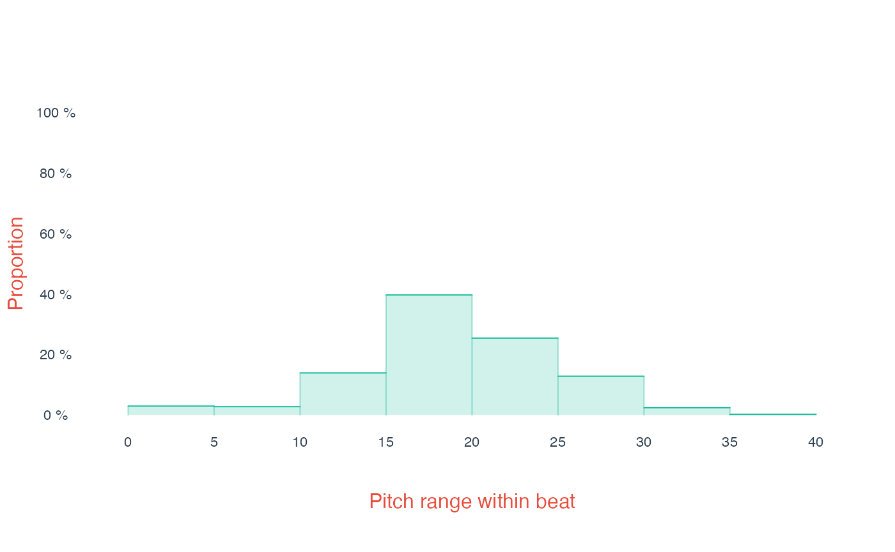

Contextualizing humdrum data
Nathaniel Condit-Schultz
July 2022
Context.RmdWelcome to “Contextualizing humdrum data”! This article explains how humdrum can be used to contextualize musical data. When analyzing musical data, we often treat each and every data token as a separate, independent “data point.” However, in many cases, we want to consider data points in context—what other data points are nearby in the data? Since the humdrum syntax encodes data in temporal order, the “context” usually means either “what is happening before or after this data point?” or “what else is happening at the same time as this this data point?” Humdrum provides a number of ways of analyzing data “in context.”
This article, like all of our articles, closely parallels information
in
humdrum’s
detailed code documentation, which can be found in the “Reference”
section of the
humdrumhomepage. You can also find
this information within R, once
humdrum
is loaded, using ?context, group_by, or
?withinHumdrum.
Groupby
The most conventionally “R-style” way to look at data context is
using
R/humdrum’s
various “group by” options. This functionality is described elsewhere,
for example in the Working With Data
article, and in the within.humdrumR() man page. Group-by
functionality isn’t necessarily connected to temporal context: you can,
for instance, group together all the data from each instrument in an
ensemble, across all songs in a dataset—this is useful, but
non-temporal-context. If you want to use groupby to get
more temporal context, here are a few good options:
Group by Record
All
humdrum
data has a Record field, indicating data points that occur
at the same time. Using group_by() we can perform
calculations grouped by record. Let’s load our trusty Bach-chorale
data:
chorales <- readHumdrum(humdrumRroot, 'HumdrumData/BachChorales/.*krn')Let’s count how many new note onsets (not rests) occur on
each record of the data, and tabulate the results. We’ll look for tokens
that don’t contain an r (for rest), using a
regular-expression match %~% 'r' and the negating bang
(!).
> humdrumR count distribution
> with(group_by(chorales, Piece, Record), sum(!Token %~% "r")) n
> 0 1
> 1 211
> 2 89
> 3 64
> 4 462
> with(group_by(chorales, Piece, Record), sum(!Token %~% "r")) n
> humdrumR count distributionMost records (462 out of 827) have new notes in all four voices—no
surprise for choral music—with one onset being the next most
common case (211 records). Note that, when we called
group_by(), we included Piece and
Record. Why? Because each piece in the data set repeats the
same record numbers—you wouldn’t want to count the 17th record from the
3rd chorale together with the 17th record from the 7th chorale, for
example. When using group_by(), you’ll almost always want
to have Piece as a grouping factor.
Group by Bar
Most humdrum data includes bar lines, indicated by =.
When
humdrum
reads data (?readHumdrumR) data, it will look at these
barlines, count them in each file, and put that count into a field
called Bar (?fields). You can then use this
data to group data by bar. Remember, that if your data set has no
= tokens, the Bar field will be nothing but
useless 0s.
What if we wanted to know what the lowest note in each bar of the
music is? Let’s first extract semits() data, so it is easy
to get the lowest value:
We can now group bars (within pieces, once again!), get the minimum
(using which.min()), and tabulate them.
chorales |>
group_by(Piece, Bar) |>
with(SciPitch[which.min(Semits)]) |>
count() |> table() -> lownotes
lownotes[lownotes > 0]
> with(group_by(chorales, Piece, Bar), SciPitch[which.min(Semits)])
> D2 E2 F2 F#2 G2 G#2 Ab2 A2 Bb2 B2 C3 C#3 D3 D#3 Eb3 E3 E#3 F3 F#3 G3
> 1 6 9 3 21 1 3 23 7 23 9 15 19 2 1 17 1 1 5 4
> G#3 A3
> 1 4The highest lowest-note-in-bar is A3. The most common lowest-note-in-bar is A2.
For further analysis, we might want to save the lowest-note into a
new field, so we’ll use mutate(). By default, the
mutate() function will recycle any scalar (length one)
result throughout its group, which is usually what we want:
> ######################## vvv chor001.krn vvv #########################
> 1: !!!COM: Bach, Johann Sebastian
> 2: !!!CDT: 1685/02/21/-1750/07/28/
> 3: !!!OTL@@DE: Aus meines Herzens Grunde
> 4: !!!OTL@EN: From the Depths of My Heart
> 5: !!!SCT: BWV 269
> 6: !!!PC#: 1
> 7: !!!AGN: chorale
> 8: **semits **semits **semits **semits
> 9: . . . .
> 10: . . . .
> 11: . . . .
> 12: *>[A,A,B] *>[A,A,B] *>[A,A,B] *>[A,A,B]
> 13: *>norep[A,B] *>norep[A,B] *>norep[A,B] *>norep[A,B]
> 14: *>A *>A *>A *>A
> 15: *clefF4 *clefGv2 *clefG2 *clefG2
> 16: . . . .
> 17: . . . .
> 18: . . . .
> 19: . . . .
> 20: -17 -17 -17 -17
> 21: =1 =1 =1 =1
> 22: -8 -8 -8 -8
> 23: -8 -8 -8 .
> 24: . -8 . .
> 25: -8 -8 -8 -8
> 26: =2 =2 =2 =2
> 27: -10 -10 -10 -10
> 28: -10 -10 . .
> 29: . . . -10
> 30: -10 -10 -10 -10
> 31-133::::::::::::::::::::::::::::::::::::::::::::::::::::::::::::::::
> ######################## ^^^ chor001.krn ^^^ #########################
>
> (eight more pieces...)
>
> ######################## vvv chor010.krn vvv #########################
> 1-70::::::::::::::::::::::::::::::::::::::::::::::::::::::::::::::::
> 71: -17 -17 -17 -17
> 72: . -17 . .
> 73: -17 . -17 -17
> 74: . -17 . .
> 75: -17 -17 -17 -17
> 76: =11 =11 =11 =11
> 77: -15 -15 -15 -15
> 78: -15 -15 -15 -15
> 79: -15 -15 -15 -15
> 80: . . -15 .
> 81: =12 =12 =12 =12
> 82: -15 -15 -15 -15
> 83: -15 -15 -15 -15
> 84: -15 -15 -15 -15
> 85: -15 -15 . -15
> 86: =13 =13 =13 =13
> 87: -20 -20 -20 -20
> 88: -20 -20 -20 .
> 89: -20 -20 -20 .
> 90: == == == ==
> 91: *- *- *- *-
> 92: !!!hum2abc: -Q ''
> 93: !!!title: @{PC#}. @{OTL@@DE}
> 94: !!!YOR1: 371 vierstimmige Choralgesänge von Johann Sebastian B***
> 95: !!!YOR2: 4th ed. by Alfred Dörffel (Leipzig: Breitkopf und H&a***
> 96: !!!YOR2: c.1875). 178 pp. Plate "V.A.10". reprint: J.S. Bach, 371 ***
> 97: !!!YOR4: Chorales (New York: Associated Music Publishers, Inc., c.1***
> 98: !!!SMS: B&H, 4th ed, Alfred Dörffel, c.1875, plate V.A.10
> 99: !!!EED: Craig Stuart Sapp
> 100: !!!EEV: 2009/05/22
> ######################## ^^^ chor010.krn ^^^ #########################
> (***four global comments truncated due to screen size***)
>
> humdrumR corpus of ten pieces.
>
> Data fields:
> *LowNote :: integer (**semits tokens)
> SciPitch :: character (**pitch tokens)
> Semits :: integer (**semits tokens)
> Token :: character(Note that we use ungroup() before overwriting
chorales, so that grouping doesn’t affect our future
analyses.) We could then, for example, subtract the bar’s lowest note
from each note:
chorales |>
mutate(Semits - LowNote) > ######################## vvv chor001.krn vvv #########################
> 1: !!!COM: Bach, Johann Sebastian
> 2: !!!CDT: 1685/02/21/-1750/07/28/
> 3: !!!OTL@@DE: Aus meines Herzens Grunde
> 4: !!!OTL@EN: From the Depths of My Heart
> 5: !!!SCT: BWV 269
> 6: !!!PC#: 1
> 7: !!!AGN: chorale
> 8: **semits **semits **semits **semits
> 9: . . . .
> 10: . . . .
> 11: . . . .
> 12: *>[A,A,B] *>[A,A,B] *>[A,A,B] *>[A,A,B]
> 13: *>norep[A,B] *>norep[A,B] *>norep[A,B] *>norep[A,B]
> 14: *>A *>A *>A *>A
> 15: *clefF4 *clefGv2 *clefG2 *clefG2
> 16: . . . .
> 17: . . . .
> 18: . . . .
> 19: . . . .
> 20: 0 16 19 24
> 21: =1 =1 =1 =1
> 22: 3 7 10 15
> 23: 0 8 12 .
> 24: . 7 . .
> 25: 2 5 10 22
> 26: =2 =2 =2 =2
> 27: 5 5 12 21
> 28: 0 4 . .
> 29: . . . 19
> 30: 2 5 9 17
> 31-133::::::::::::::::::::::::::::::::::::::::::::::::::::::::::::::::
> ######################## ^^^ chor001.krn ^^^ #########################
>
> (eight more pieces...)
>
> ######################## vvv chor010.krn vvv #########################
> 1-70::::::::::::::::::::::::::::::::::::::::::::::::::::::::::::::::
> 71: 7 11 19 28
> 72: . 12 . .
> 73: 7 . 17 26
> 74: . 11 . .
> 75: 0 12 16 24
> 76: =11 =11 =11 =11
> 77: 3 10 19 22
> 78: 0 12 19 27
> 79: 7 11 19 26
> 80: . . 17 .
> 81: =12 =12 =12 =12
> 82: 8 12 15 24
> 83: 3 10 15 19
> 84: 1 10 17 22
> 85: 0 12 . 20
> 86: =13 =13 =13 =13
> 87: 4 19 22 24
> 88: 5 17 20 .
> 89: 0 16 19 .
> 90: == == == ==
> 91: *- *- *- *-
> 92: !!!hum2abc: -Q ''
> 93: !!!title: @{PC#}. @{OTL@@DE}
> 94: !!!YOR1: 371 vierstimmige Choralgesänge von Johann Sebastian B***
> 95: !!!YOR2: 4th ed. by Alfred Dörffel (Leipzig: Breitkopf und H&a***
> 96: !!!YOR2: c.1875). 178 pp. Plate "V.A.10". reprint: J.S. Bach, 371 ***
> 97: !!!YOR4: Chorales (New York: Associated Music Publishers, Inc., c.1***
> 98: !!!SMS: B&H, 4th ed, Alfred Dörffel, c.1875, plate V.A.10
> 99: !!!EED: Craig Stuart Sapp
> 100: !!!EEV: 2009/05/22
> ######################## ^^^ chor010.krn ^^^ #########################
> (***four global comments truncated due to screen size***)
>
> humdrumR corpus of ten pieces.
>
> Data fields:
> LowNote :: integer (**semits tokens)
> SciPitch :: character (**pitch tokens)
> Semits :: integer (**semits tokens)
> *Semits - LowNote :: integer (**semits tokens)
> Token :: characterGroup by Beat
Another useful contextual group is the beat. There will be no
automatic “beat” field in our data, so we’ll need to make one—obviously,
we need to have data with rhythmic information encoded (like
**kern or **recip) to do this! We can use the
timecount() function to count the beats in our data. We
could count quarter-notes by setting unit = '4';
alternatively, if our data includes time-signature interpretations (like
*M3/4) we could use the TimeSignature field to
get the tactus of the meter. Let’s try the later and save the result to
a new field, which we’ll call Beat (or anything else you
want).
chorales |> select(Token) |>
mutate(Beat = timecount(Token, unit = tactus(TimeSignature))) -> choralesWe can now group by beat (and piece, of course). Maybe we want to know the range of notes in each beat:
chorales |>
group_by(Piece, Beat) |>
with(diff(range(Semits))) |>
draw(xlab = 'Pitch range within beat')
Note: If your data includes spine paths, you’ll want to set
mutate(timecount(Token), expandPaths = TRUE, ...). Count (and similar functions, liketimeline()) won’t work correctly without paths expanded (?expandPaths).
Contextual Windows
When you use group_by(), your data is
exhaustively partitioned into non-overlapping groups;
the groups are also not necessarily ordered—we have to explicitly use
(temporally) ordered groups like group_by(Piece, Record) if
we want temporal context. In contrast, the context()
function, when used in combination with with() or
mutate(), gives us much more flexible control over the
context we want for our data.
context() takes an input vector and treats it as an
ordered sequence of information. It then identifies arbitrary contextual
windows in the data, based on your criteria. The windows created by
context() are always sequentially ordered, aren’t
necessarily exhaustive (some data might not fall in any window), and can
overlap (some data falls in multiple windows).
We use context() by indicating when to “open” (begin)
and “close” (end) contextual windows, using the open and
close arguments. Context can use many criteria to
open/close windows. In the following sections, we layout just a few
examples; we’ll use our chorale data again, as well as the built-in
Beethoven variation data:
chorales <- readHumdrum(humdrumRroot, 'HumdrumData/BachChorales/.*krn')
beethoven <- readHumdrum(humdrumRroot, 'HumdrumData/BeethovenVariations/.*krn')For most examples, we’ll use within() and run the
command paste(Token, collapse = '|'). This will cause all
the tokens within a contextual group to collapse to single string,
separated by |. This is the simplest/fastest way to
see what context() is doing!
Regular windows
In some cases, we simply want to progress through data and open/close
windows at regular locations. We can do this using the
hop() function. (hop() is a
humdrum
function which is very similar to R’s base seq() function;
however, hop() has some special features and, more
importantly, gets special treatment from context()). Maybe
we want to open a four-note window on every note:
> #################### vvv chor001.krn vvv #####################
> 1: !!!COM: Bach, Johann Sebastian
> 2: !!!CDT: 1685/02/21/-1750/07/28/
> 3: !!!OTL@@DE: Aus meines Herzens Grunde
> 4: !!!OTL@EN: From the Depths of My Heart
> 5: !!!SCT: BWV 269
> 6: !!!PC#: 1
> 7: !!!AGN: chorale
> 8: **kern **kern **kern ***
> 9: *ICvox *ICvox *ICvox ***
> 10: *Ibass *Itenor *Ialto ***
> 11: *I"Bass *I"Tenor *I"Alto ***
> 12: *>[A,A,B] *>[A,A,B] *>[A,A,B] ***
> 13: *>norep[A,B] *>norep[A,B] *>norep[A,B] ***
> 14: *>A *>A *>A ***
> 15: *clefF4 *clefGv2 *clefG2 ***
> 16: *k[f#] *k[f#] *k[f#] ***
> 17: *G: *G: *G: ***
> 18: *M3/4 *M3/4 *M3/4 ***
> 19: *MM100 *MM100 *MM100 ***
> 20: 4GG|4G|4E|4F# 4B|4B|8cL|8BJ 4d|4d|4e|4d ***
> 21: =1 =1 =1 ***
> 22: 4G|4E|4F#|4G 4B|8cL|8BJ|4A 4d|4e|4d|2d ***
> 23: 4E|4F#|4G|4D 8cL|8BJ|4A|4G 4e|4d|2d|4B ***
> 24: . 8BJ|4A|4G|4F# . ***
> 25: 4F#|4G|4D|4E 4A|4G|4F#|4G 4d|2d|4B|8eL ***
> 26: =2 =2 =2 ***
> 27: 4G|4D|4E|4C 4G|4F#|4G|8cL 2d|4B|8eL|8d ***
> 28: 4D|4E|4C|8BBL 4F#|4G|8cL|8BJ . ***
> 29: . . . ***
> 30: 4E|4C|8BBL|8AAJ 4G|8cL|8BJ|4c 4B|8eL|8d|8e ***
> 31-133::::::::::::::::::::::::::::::::::::::::::::::::::::::::
> #################### ^^^ chor001.krn ^^^ #####################
>
> (eight more pieces...)
>
> #################### vvv chor010.krn vvv #####################
> 1-70::::::::::::::::::::::::::::::::::::::::::::::::::::::::
> 71: 4D|4D|2GG;|2C 8F#|4G|8F#|2G; 4d|4c|2B;|2e ***
> 72: . 4G|8F#|2G;|2G . ***
> 73: 4D|2GG;|2C|4AA . 4c|2B;|2e|4e ***
> 74: . 8F#|2G;|2G|4A . ***
> 75: 2GG;|2C|4AA|4E 2G;|2G|4A|4G# 2B;|2e|4e|8eL ***
> 76: =11 =11 =11 ***
> 77: 2C|4AA|4E|4F 2G|4A|4G#|4A 2e|4e|8eL|8dJ ***
> 78: 4AA|4E|4F|4C 4A|4G#|4A|4G 4e|8eL|8dJ|4c ***
> 79: 4E|4F|4C|4BB- 4G#|4A|4G|4G 8eL|8dJ|4c|4c ***
> 80: . . 8dJ|4c|4c|[2d ***
> 81: =12 =12 =12 ***
> 82: 4F|4C|4BB-|4AA 4A|4G|4G|4A 4c|4c|[2d|4d] ***
> 83: 4C|4BB-|4AA|4GG# 4G|4G|4A|4B 4c|[2d|4d]|4c ***
> 84: 4BB-|4AA|4GG#|4AA 4G|4A|4B|4A [2d|4d]|4c|2B; ***
> 85: 4AA|4GG#|4AA|2EE; 4A|4B|4A|2G#X; . ***
> 86: =13 =13 =13 ***
> 87: . . . ***
> 88: . . . ***
> 89: . . . ***
> 90: == == == ***
> 91: *- *- *- ***
> 92: !!!hum2abc: -Q ''
> 93: !!!title: @{PC#}. @{OTL@@DE}
> 94: !!!YOR1: 371 vierstimmige Choralgesänge von Johann***
> 95: !!!YOR2: 4th ed. by Alfred Dörffel (Leipzig: Breit***
> 96: !!!YOR2: c.1875). 178 pp. Plate "V.A.10". reprint: J.S***
> 97: !!!YOR4: Chorales (New York: Associated Music Publisher***
> 98: !!!SMS: B&H, 4th ed, Alfred Dörffel, c.1875, plate***
> 99: !!!EED: Craig Stuart Sapp
> 100: !!!EEV: 2009/05/22
> #################### ^^^ chor010.krn ^^^ #####################
> (***one spine/path not displayed due to screen size***)
>
> humdrumR corpus of ten pieces.
>
> Data fields:
> Token :: character
> *paste(Token, collapse = "|") :: character
>
> With 2,313 (overlapping) contextual windows:
> All windows length == 4Cool, we’ve got overlapping four-note windows, running through each spine! How did we do this?
Regular Open
The first argument to context() is the open
argument; we give open a set of indices (natural numbers)
where to open windows in the data. hop() simply generates a
sequence of numbers “along” the input data—by default, the “hop size” is
1, but we can change that. For example:
hop(letters, by = 1)
> [1] 1 2 3 4 5 6 7 8 9 10 11 12 13 14 15 16 17 18 19 20 21 22 23 24 25
> [26] 26
hop(letters, by = 2)
> [1] 1 3 5 7 9 11 13 15 17 19 21 23 25When we use hop() inside context(), it
automatically knows what the input vector(s) (data fields) to hop along
are. So now check this out:
> #################### vvv chor001.krn vvv ####################
> 1: !!!COM: Bach, Johann Sebastian
> 2: !!!CDT: 1685/02/21/-1750/07/28/
> 3: !!!OTL@@DE: Aus meines Herzens Grunde
> 4: !!!OTL@EN: From the Depths of My Heart
> 5: !!!SCT: BWV 269
> 6: !!!PC#: 1
> 7: !!!AGN: chorale
> 8: **kern **kern **kern ***
> 9: *ICvox *ICvox *ICvox ***
> 10: *Ibass *Itenor *Ialto ***
> 11: *I"Bass *I"Tenor *I"Alto ***
> 12: *>[A,A,B] *>[A,A,B] *>[A,A,B] ***
> 13: *>norep[A,B] *>norep[A,B] *>norep[A,B] ***
> 14: *>A *>A *>A ***
> 15: *clefF4 *clefGv2 *clefG2 ***
> 16: *k[f#] *k[f#] *k[f#] ***
> 17: *G: *G: *G: ***
> 18: *M3/4 *M3/4 *M3/4 ***
> 19: *MM100 *MM100 *MM100 ***
> 20: 4GG|4G|4E|4F# 4B|4B|8cL|8BJ 4d|4d|4e|4d ***
> 21: =1 =1 =1 ***
> 22: . . . ***
> 23: 4E|4F#|4G|4D 8cL|8BJ|4A|4G 4e|4d|2d|4B ***
> 24: . . . ***
> 25: . 4A|4G|4F#|4G . ***
> 26: =2 =2 =2 ***
> 27: 4G|4D|4E|4C . 2d|4B|8eL|8d ***
> 28: . 4F#|4G|8cL|8BJ . ***
> 29: . . . ***
> 30: 4E|4C|8BBL|8AAJ . . ***
> 31-133:::::::::::::::::::::::::::::::::::::::::::::::::::::::
> #################### ^^^ chor001.krn ^^^ ####################
>
> (eight more pieces...)
>
> #################### vvv chor010.krn vvv ####################
> 1-70:::::::::::::::::::::::::::::::::::::::::::::::::::::::
> 71: . 8F#|4G|8F#|2G; 4d|4c|2B;|2e ***
> 72: . . . ***
> 73: 4D|2GG;|2C|4AA . . ***
> 74: . 8F#|2G;|2G|4A . ***
> 75: . . 2B;|2e|4e|8eL ***
> 76: =11 =11 =11 ***
> 77: 2C|4AA|4E|4F 2G|4A|4G#|4A . ***
> 78: . . 4e|8eL|8dJ|4c ***
> 79: 4E|4F|4C|4BB- 4G#|4A|4G|4G . ***
> 80: . . 8dJ|4c|4c|[2d ***
> 81: =12 =12 =12 ***
> 82: . . . ***
> 83: 4C|4BB-|4AA|4GG# 4G|4G|4A|4B 4c|[2d|4d]|4c ***
> 84: . . . ***
> 85: 4AA|4GG#|4AA|2EE; 4A|4B|4A|2G#X; . ***
> 86: =13 =13 =13 ***
> 87: . . . ***
> 88: . . . ***
> 89: . . . ***
> 90: == == == ***
> 91: *- *- *- ***
> 92: !!!hum2abc: -Q ''
> 93: !!!title: @{PC#}. @{OTL@@DE}
> 94: !!!YOR1: 371 vierstimmige Choralgesänge von Johan***
> 95: !!!YOR2: 4th ed. by Alfred Dörffel (Leipzig: Brei***
> 96: !!!YOR2: c.1875). 178 pp. Plate "V.A.10". reprint: J.***
> 97: !!!YOR4: Chorales (New York: Associated Music Publishe***
> 98: !!!SMS: B&H, 4th ed, Alfred Dörffel, c.1875, plat***
> 99: !!!EED: Craig Stuart Sapp
> 100: !!!EEV: 2009/05/22
> #################### ^^^ chor010.krn ^^^ ####################
> (***one spine/path not displayed due to screen size***)
>
> humdrumR corpus of ten pieces.
>
> Data fields:
> Token :: character
> *paste(Token, collapse = "|") :: character
>
> With 1,164 (overlapping) contextual windows:
> All windows length == 4By saying hop(2), our windows only open on every
other index. If we don’t want our four-note windows to overlap
at all, we could set hop(4):
> ################### vvv chor001.krn vvv ####################
> 1: !!!COM: Bach, Johann Sebastian
> 2: !!!CDT: 1685/02/21/-1750/07/28/
> 3: !!!OTL@@DE: Aus meines Herzens Grunde
> 4: !!!OTL@EN: From the Depths of My Heart
> 5: !!!SCT: BWV 269
> 6: !!!PC#: 1
> 7: !!!AGN: chorale
> 8: **kern **kern **kern ***
> 9: *ICvox *ICvox *ICvox ***
> 10: *Ibass *Itenor *Ialto ***
> 11: *I"Bass *I"Tenor *I"Alto ***
> 12: *>[A,A,B] *>[A,A,B] *>[A,A,B] ***
> 13: *>norep[A,B] *>norep[A,B] *>norep[A,B] ***
> 14: *>A *>A *>A ***
> 15: *clefF4 *clefGv2 *clefG2 ***
> 16: *k[f#] *k[f#] *k[f#] ***
> 17: *G: *G: *G: ***
> 18: *M3/4 *M3/4 *M3/4 ***
> 19: *MM100 *MM100 *MM100 ***
> 20: 4GG|4G|4E|4F# 4B|4B|8cL|8BJ 4d|4d|4e|4d ***
> 21: =1 =1 =1 ***
> 22: . . . ***
> 23: . . . ***
> 24: . . . ***
> 25: . 4A|4G|4F#|4G . ***
> 26: =2 =2 =2 ***
> 27: 4G|4D|4E|4C . 2d|4B|8eL|8d ***
> 28: . . . ***
> 29: . . . ***
> 30: . . . ***
> 31-133::::::::::::::::::::::::::::::::::::::::::::::::::::::
> ################### ^^^ chor001.krn ^^^ ####################
>
> (eight more pieces...)
>
> ################### vvv chor010.krn vvv ####################
> 1-70::::::::::::::::::::::::::::::::::::::::::::::::::::::
> 71: . 8F#|4G|8F#|2G; . ***
> 72: . . . ***
> 73: . . . ***
> 74: . . . ***
> 75: . . 2B;|2e|4e|8eL ***
> 76: =11 =11 =11 ***
> 77: 2C|4AA|4E|4F 2G|4A|4G#|4A . ***
> 78: . . . ***
> 79: . . . ***
> 80: . . 8dJ|4c|4c|[2d ***
> 81: =12 =12 =12 ***
> 82: . . . ***
> 83: 4C|4BB-|4AA|4GG# 4G|4G|4A|4B . ***
> 84: . . . ***
> 85: . . . ***
> 86: =13 =13 =13 ***
> 87: . . . ***
> 88: . . . ***
> 89: . . . ***
> 90: == == == ***
> 91: *- *- *- ***
> 92: !!!hum2abc: -Q ''
> 93: !!!title: @{PC#}. @{OTL@@DE}
> 94: !!!YOR1: 371 vierstimmige Choralgesänge von Joha***
> 95: !!!YOR2: 4th ed. by Alfred Dörffel (Leipzig: Bre***
> 96: !!!YOR2: c.1875). 178 pp. Plate "V.A.10". reprint: J***
> 97: !!!YOR4: Chorales (New York: Associated Music Publish***
> 98: !!!SMS: B&H, 4th ed, Alfred Dörffel, c.1875, pla***
> 99: !!!EED: Craig Stuart Sapp
> 100: !!!EEV: 2009/05/22
> ################### ^^^ chor010.krn ^^^ ####################
> (***one spine/path not displayed due to screen size***)
>
> humdrumR corpus of ten pieces.
>
> Data fields:
> Token :: character
> *paste(Token, collapse = "|") :: character
>
> With 591 contextual windows:
> All windows length == 4Note that the by argument can be a vector of hop-sizes,
which will cause hop() to generate a sequence of irregular
hops! You can also use hop()’s from and
to arguments to control when the first/last windows occur,
etc. When using to, you can refer to another special
variable—end—which context() will interpret as
the last index. So you could, for example, say
hop(from = 5, to = end - 5).
Fixed Close
So hop() is telling context() when to open
windows; how are we telling it when to close windows? The second
argument to context() is the close argument.
Like open, the close argument should be a set
of natural-number indices. However, the cool thing is that the
close argument can refer to the open
argument. So rather than manually figuring out what index would go with
each open (don’t try, because the multiple spines etc. make
it confusing), we simply say open + 3. If we want five-note
windows, we can say open + 4.
What if we want to the window to simply close before the next
opening? We can do this by having the close argument refer
to the nextopen variable. So instead of saying
open + 3 we say nextopen - 1L!
> ################### vvv chor001.krn vvv ####################
> 1: !!!COM: Bach, Johann Sebastian
> 2: !!!CDT: 1685/02/21/-1750/07/28/
> 3: !!!OTL@@DE: Aus meines Herzens Grunde
> 4: !!!OTL@EN: From the Depths of My Heart
> 5: !!!SCT: BWV 269
> 6: !!!PC#: 1
> 7: !!!AGN: chorale
> 8: **kern **kern **kern ***
> 9: *ICvox *ICvox *ICvox ***
> 10: *Ibass *Itenor *Ialto ***
> 11: *I"Bass *I"Tenor *I"Alto ***
> 12: *>[A,A,B] *>[A,A,B] *>[A,A,B] ***
> 13: *>norep[A,B] *>norep[A,B] *>norep[A,B] ***
> 14: *>A *>A *>A ***
> 15: *clefF4 *clefGv2 *clefG2 ***
> 16: *k[f#] *k[f#] *k[f#] ***
> 17: *G: *G: *G: ***
> 18: *M3/4 *M3/4 *M3/4 ***
> 19: *MM100 *MM100 *MM100 ***
> 20: 4GG|4G|4E|4F# 4B|4B|8cL|8BJ 4d|4d|4e|4d ***
> 21: =1 =1 =1 ***
> 22: . . . ***
> 23: . . . ***
> 24: . . . ***
> 25: . 4A|4G|4F#|4G . ***
> 26: =2 =2 =2 ***
> 27: 4G|4D|4E|4C . 2d|4B|8eL|8d ***
> 28: . . . ***
> 29: . . . ***
> 30: . . . ***
> 31-133::::::::::::::::::::::::::::::::::::::::::::::::::::::
> ################### ^^^ chor001.krn ^^^ ####################
>
> (eight more pieces...)
>
> ################### vvv chor010.krn vvv ####################
> 1-70::::::::::::::::::::::::::::::::::::::::::::::::::::::
> 71: . 8F#|4G|8F#|2G; . ***
> 72: . . . ***
> 73: . . . ***
> 74: . . . ***
> 75: . . 2B;|2e|4e|8eL ***
> 76: =11 =11 =11 ***
> 77: 2C|4AA|4E|4F 2G|4A|4G#|4A . ***
> 78: . . . ***
> 79: . . . ***
> 80: . . 8dJ|4c|4c|[2d ***
> 81: =12 =12 =12 ***
> 82: . . . ***
> 83: 4C|4BB-|4AA|4GG# 4G|4G|4A|4B . ***
> 84: . . . ***
> 85: . . . ***
> 86: =13 =13 =13 ***
> 87: . . 4d]|4c|2B; ***
> 88: 4AA|2EE; 4A|2G#X; . ***
> 89: . . . ***
> 90: == == == ***
> 91: *- *- *- ***
> 92: !!!hum2abc: -Q ''
> 93: !!!title: @{PC#}. @{OTL@@DE}
> 94: !!!YOR1: 371 vierstimmige Choralgesänge von Joha***
> 95: !!!YOR2: 4th ed. by Alfred Dörffel (Leipzig: Bre***
> 96: !!!YOR2: c.1875). 178 pp. Plate "V.A.10". reprint: J***
> 97: !!!YOR4: Chorales (New York: Associated Music Publish***
> 98: !!!SMS: B&H, 4th ed, Alfred Dörffel, c.1875, pla***
> 99: !!!EED: Craig Stuart Sapp
> 100: !!!EEV: 2009/05/22
> ################### ^^^ chor010.krn ^^^ ####################
> (***one spine/path not displayed due to screen size***)
>
> humdrumR corpus of ten pieces.
>
> Data fields:
> Token :: character
> *paste(Token, collapse = "|") :: character
>
> With 612 contextual windows:
> Shortest length == 2
> Median/Longest length == 4Now we’ll get exhaustive windows no matter where we open the windows. For example, we can change the hop size and still get exhaustive windows!
> ################ vvv chor001.krn vvv #################
> 1: !!!COM: Bach, Johann Sebastian
> 2: !!!CDT: 1685/02/21/-1750/07/28/
> 3: !!!OTL@@DE: Aus meines Herzens Grunde
> 4: !!!OTL@EN: From the Depths of My Heart
> 5: !!!SCT: BWV 269
> 6: !!!PC#: 1
> 7: !!!AGN: chorale
> 8: **kern **kern ***
> 9: *ICvox *ICvox ***
> 10: *Ibass *Itenor ***
> 11: *I"Bass *I"Tenor ***
> 12: *>[A,A,B] *>[A,A,B] ***
> 13: *>norep[A,B] *>norep[A,B] ***
> 14: *>A *>A ***
> 15: *clefF4 *clefGv2 ***
> 16: *k[f#] *k[f#] ***
> 17: *G: *G: ***
> 18: *M3/4 *M3/4 ***
> 19: *MM100 *MM100 ***
> 20: 4GG|4G|4E|4F#|4G|4D 4B|4B|8cL|8BJ|4A|4G ***
> 21: =1 =1 ***
> 22: . . ***
> 23: . . ***
> 24: . . ***
> 25: . . ***
> 26: =2 =2 ***
> 27: . . ***
> 28: . 4F#|4G|8cL|8BJ|4c|4d ***
> 29: . . ***
> 30: 4E|4C|8BBL|8AAJ...G| . ***
> 31-133::::::::::::::::::::::::::::::::::::::::::::::::
> ################ ^^^ chor001.krn ^^^ #################
>
> (eight more pieces...)
>
> ################ vvv chor010.krn vvv #################
> 1-70::::::::::::::::::::::::::::::::::::::::::::::::
> 71: . . ***
> 72: . . ***
> 73: . . ***
> 74: . . ***
> 75: . . ***
> 76: =11 =11 ***
> 77: 2C|4AA|4E|4F|4C|4BB- 2G|4A|4G#|4A|4G|4G ***
> 78: . . ***
> 79: . . ***
> 80: . . ***
> 81: =12 =12 ***
> 82: . . ***
> 83: . . ***
> 84: . . ***
> 85: 4AA|4GG#|4AA|2EE; 4A|4B|4A|2G#X; ***
> 86: =13 =13 ***
> 87: . . ***
> 88: . . ***
> 89: . . ***
> 90: == == ***
> 91: *- *- ***
> 92: !!!hum2abc: -Q ''
> 93: !!!title: @{PC#}. @{OTL@@DE}
> 94: !!!YOR1: 371 vierstimmige Choralgesänge von***
> 95: !!!YOR2: 4th ed. by Alfred Dörffel (Leipzig***
> 96: !!!YOR2: c.1875). 178 pp. Plate "V.A.10". repri***
> 97: !!!YOR4: Chorales (New York: Associated Music Pu***
> 98: !!!SMS: B&H, 4th ed, Alfred Dörffel, c.1875***
> 99: !!!EED: Craig Stuart Sapp
> 100: !!!EEV: 2009/05/22
> ################ ^^^ chor010.krn ^^^ #################
> (***two
> spines/paths not displayed due to screen size***)
>
> humdrumR corpus of ten pieces.
>
> Data fields:
> Token :: character
> *paste(Token, collapse = "|") :: character
>
> With 413 contextual windows:
> Shortest length == 2
> Median/Longest length == 6We could also close windows at nextopen - 2 or
nextopen + 1—whatever we want!
Flip it around
We don’t have to define open first and have
close refer to open—we can also do the opposite!
> ################### vvv chor001.krn vvv ####################
> 1: !!!COM: Bach, Johann Sebastian
> 2: !!!CDT: 1685/02/21/-1750/07/28/
> 3: !!!OTL@@DE: Aus meines Herzens Grunde
> 4: !!!OTL@EN: From the Depths of My Heart
> 5: !!!SCT: BWV 269
> 6: !!!PC#: 1
> 7: !!!AGN: chorale
> 8: **kern **kern **kern ***
> 9: *ICvox *ICvox *ICvox ***
> 10: *Ibass *Itenor *Ialto ***
> 11: *I"Bass *I"Tenor *I"Alto ***
> 12: *>[A,A,B] *>[A,A,B] *>[A,A,B] ***
> 13: *>norep[A,B] *>norep[A,B] *>norep[A,B] ***
> 14: *>A *>A *>A ***
> 15: *clefF4 *clefGv2 *clefG2 ***
> 16: *k[f#] *k[f#] *k[f#] ***
> 17: *G: *G: *G: ***
> 18: *M3/4 *M3/4 *M3/4 ***
> 19: *MM100 *MM100 *MM100 ***
> 20: 4GG|4G|4E|4F# 4B|4B|8cL|8BJ 4d|4d|4e|4d ***
> 21: =1 =1 =1 ***
> 22: . . . ***
> 23: . . . ***
> 24: . . . ***
> 25: . 4A|4G|4F#|4G . ***
> 26: =2 =2 =2 ***
> 27: 4G|4D|4E|4C . 2d|4B|8eL|8d ***
> 28: . . . ***
> 29: . . . ***
> 30: . . . ***
> 31-133::::::::::::::::::::::::::::::::::::::::::::::::::::::
> ################### ^^^ chor001.krn ^^^ ####################
>
> (eight more pieces...)
>
> ################### vvv chor010.krn vvv ####################
> 1-70::::::::::::::::::::::::::::::::::::::::::::::::::::::
> 71: . 8F#|4G|8F#|2G; . ***
> 72: . . . ***
> 73: . . . ***
> 74: . . . ***
> 75: . . 2B;|2e|4e|8eL ***
> 76: =11 =11 =11 ***
> 77: 2C|4AA|4E|4F 2G|4A|4G#|4A . ***
> 78: . . . ***
> 79: . . . ***
> 80: . . 8dJ|4c|4c|[2d ***
> 81: =12 =12 =12 ***
> 82: . . . ***
> 83: 4C|4BB-|4AA|4GG# 4G|4G|4A|4B . ***
> 84: . . . ***
> 85: . . . ***
> 86: =13 =13 =13 ***
> 87: . . . ***
> 88: . . . ***
> 89: . . . ***
> 90: == == == ***
> 91: *- *- *- ***
> 92: !!!hum2abc: -Q ''
> 93: !!!title: @{PC#}. @{OTL@@DE}
> 94: !!!YOR1: 371 vierstimmige Choralgesänge von Joha***
> 95: !!!YOR2: 4th ed. by Alfred Dörffel (Leipzig: Bre***
> 96: !!!YOR2: c.1875). 178 pp. Plate "V.A.10". reprint: J***
> 97: !!!YOR4: Chorales (New York: Associated Music Publish***
> 98: !!!SMS: B&H, 4th ed, Alfred Dörffel, c.1875, pla***
> 99: !!!EED: Craig Stuart Sapp
> 100: !!!EEV: 2009/05/22
> ################### ^^^ chor010.krn ^^^ ####################
> (***one spine/path not displayed due to screen size***)
>
> humdrumR corpus of ten pieces.
>
> Data fields:
> Token :: character
> *paste(Token, collapse = "|") :: character
>
> With 591 contextual windows:
> All windows length == 4We’ve got the exact same result by telling the window closes to hop
along regularly (every four indices) and having the open
argument refer to the closing indices (close - 3). The
open argument can also refer to the prevclose
(previous close). Notice that our output windows are still “placed” to
align with the opening—we can set alignLeft = FALSE in our
call to within.humdrumR(), if we want the output to align
with the close:
chorales |>
context(close - 3, hop(4, from = 4)) |>
within(paste(Token, collapse = '|'),
alignLeft = FALSE)> ################### vvv chor001.krn vvv ####################
> 1: !!!COM: Bach, Johann Sebastian
> 2: !!!CDT: 1685/02/21/-1750/07/28/
> 3: !!!OTL@@DE: Aus meines Herzens Grunde
> 4: !!!OTL@EN: From the Depths of My Heart
> 5: !!!SCT: BWV 269
> 6: !!!PC#: 1
> 7: !!!AGN: chorale
> 8: **kern **kern **kern ***
> 9: *ICvox *ICvox *ICvox ***
> 10: *Ibass *Itenor *Ialto ***
> 11: *I"Bass *I"Tenor *I"Alto ***
> 12: *>[A,A,B] *>[A,A,B] *>[A,A,B] ***
> 13: *>norep[A,B] *>norep[A,B] *>norep[A,B] ***
> 14: *>A *>A *>A ***
> 15: *clefF4 *clefGv2 *clefG2 ***
> 16: *k[f#] *k[f#] *k[f#] ***
> 17: *G: *G: *G: ***
> 18: *M3/4 *M3/4 *M3/4 ***
> 19: *MM100 *MM100 *MM100 ***
> 20: . . . ***
> 21: =1 =1 =1 ***
> 22: . . . ***
> 23: . . . ***
> 24: . 4B|4B|8cL|8BJ . ***
> 25: 4GG|4G|4E|4F# . 4d|4d|4e|4d ***
> 26: =2 =2 =2 ***
> 27: . . . ***
> 28: . . . ***
> 29: . . . ***
> 30: . 4A|4G|4F#|4G . ***
> 31-133::::::::::::::::::::::::::::::::::::::::::::::::::::::
> ################### ^^^ chor001.krn ^^^ ####################
>
> (eight more pieces...)
>
> ################### vvv chor010.krn vvv ####################
> 1-70::::::::::::::::::::::::::::::::::::::::::::::::::::::
> 71: . . . ***
> 72: . . . ***
> 73: . . 8fJ|4e|4d|4c ***
> 74: . . . ***
> 75: 4C|4D|4D|2GG; 8F#|4G|8F#|2G; . ***
> 76: =11 =11 =11 ***
> 77: . . . ***
> 78: . . . ***
> 79: . . 2B;|2e|4e|8eL ***
> 80: . . . ***
> 81: =12 =12 =12 ***
> 82: 2C|4AA|4E|4F 2G|4A|4G#|4A . ***
> 83: . . . ***
> 84: . . 8dJ|4c|4c|[2d ***
> 85: . . . ***
> 86: =13 =13 =13 ***
> 87: 4C|4BB-|4AA|4GG# 4G|4G|4A|4B . ***
> 88: . . . ***
> 89: . . . ***
> 90: == == == ***
> 91: *- *- *- ***
> 92: !!!hum2abc: -Q ''
> 93: !!!title: @{PC#}. @{OTL@@DE}
> 94: !!!YOR1: 371 vierstimmige Choralgesänge von Joha***
> 95: !!!YOR2: 4th ed. by Alfred Dörffel (Leipzig: Bre***
> 96: !!!YOR2: c.1875). 178 pp. Plate "V.A.10". reprint: J***
> 97: !!!YOR4: Chorales (New York: Associated Music Publish***
> 98: !!!SMS: B&H, 4th ed, Alfred Dörffel, c.1875, pla***
> 99: !!!EED: Craig Stuart Sapp
> 100: !!!EEV: 2009/05/22
> ################### ^^^ chor010.krn ^^^ ####################
> (***one spine/path not displayed due to screen size***)
>
> humdrumR corpus of ten pieces.
>
> Data fields:
> Token :: character
> *paste(Token, collapse = "|") :: character
>
> With 591 contextual windows:
> All windows length == 4Note that these regular windows are examples of N-grams.
Humdrum
also defines another approach to defining N-grams which will generally
be faster than using context()—this alternative approach is
described in the last section of this article.
Irregular Windows
The regular windows we created in the previous section are useful,
but context() can do a lot more. You can tell
context() to open, or close, windows based on arbitrary
criteria! For example, let’s say you want to open a window any time the
leading tone occurs, and stay open until the next tonic. To do this,
let’s get the solfa() data into a Solfa
field:
chorales |>
solfa(Token, simple = TRUE) -> chorales
chorales> ######################## vvv chor001.krn vvv #########################
> 1: !!!COM: Bach, Johann Sebastian
> 2: !!!CDT: 1685/02/21/-1750/07/28/
> 3: !!!OTL@@DE: Aus meines Herzens Grunde
> 4: !!!OTL@EN: From the Depths of My Heart
> 5: !!!SCT: BWV 269
> 6: !!!PC#: 1
> 7: !!!AGN: chorale
> 8: **solfa **solfa **solfa **solfa
> 9: . . . .
> 10: . . . .
> 11: . . . .
> 12: *>[A,A,B] *>[A,A,B] *>[A,A,B] *>[A,A,B]
> 13: *>norep[A,B] *>norep[A,B] *>norep[A,B] *>norep[A,B]
> 14: *>A *>A *>A *>A
> 15: *clefF4 *clefGv2 *clefG2 *clefG2
> 16: *k[f#] *k[f#] *k[f#] *k[f#]
> 17: *G: *G: *G: *G:
> 18: . . . .
> 19: . . . .
> 20: do mi so do
> 21: =1 =1 =1 =1
> 22: do mi so do
> 23: la fa la .
> 24: . mi . .
> 25: ti re so so
> 26: =2 =2 =2 =2
> 27: do do so mi
> 28: so ti . .
> 29: . . . re
> 30: la do mi do
> 31-133::::::::::::::::::::::::::::::::::::::::::::::::::::::::::::::::
> ######################## ^^^ chor001.krn ^^^ #########################
>
> (eight more pieces...)
>
> ######################## vvv chor010.krn vvv #########################
> 1-70::::::::::::::::::::::::::::::::::::::::::::::::::::::::::::::::
> 71: fa la fa re
> 72: . te . .
> 73: fa . me do
> 74: . la . .
> 75: te te re te
> 76: =11 =11 =11 =11
> 77: me te so te
> 78: do do so me
> 79: so ti so re
> 80: . . fa .
> 81: =12 =12 =12 =12
> 82: le do me do
> 83: me te me so
> 84: ra te fa te
> 85: do do . le
> 86: =13 =13 =13 =13
> 87: ti re fa so
> 88: do do me .
> 89: so ti re .
> 90: == == == ==
> 91: *- *- *- *-
> 92: !!!hum2abc: -Q ''
> 93: !!!title: @{PC#}. @{OTL@@DE}
> 94: !!!YOR1: 371 vierstimmige Choralgesänge von Johann Sebastian B***
> 95: !!!YOR2: 4th ed. by Alfred Dörffel (Leipzig: Breitkopf und H&a***
> 96: !!!YOR2: c.1875). 178 pp. Plate "V.A.10". reprint: J.S. Bach, 371 ***
> 97: !!!YOR4: Chorales (New York: Associated Music Publishers, Inc., c.1***
> 98: !!!SMS: B&H, 4th ed, Alfred Dörffel, c.1875, plate V.A.10
> 99: !!!EED: Craig Stuart Sapp
> 100: !!!EEV: 2009/05/22
> ######################## ^^^ chor010.krn ^^^ #########################
> (***four global comments truncated due to screen size***)
>
> humdrumR corpus of ten pieces.
>
> Data fields:
> *Solfa :: character (**solfa tokens)
> Token :: characterAlright, the easy thing to do here is to give
context()’s open/close arguments
character strings, which are matched as regular expressions
against the active field:
> [1] "ti|do"
> [2] "ti|do"
> [3] "ti|do"
> [4] "ti|la|la|so|fa|so|do"
> [5] "ti|do"
> [6] "ti|do"
> [7] "ti|do"
> [8] "ti|do"
> [9] "ti|so|do"
> [10] "ti|la|ti|do"
> [11] "ti|do"
> [12] "ti|la|la|ti|do"
> [13] "ti|do"
> [14] "ti|do"
> [15] "ti|ti|la|la|ti|do"
> [16] "ti|la|la|ti|do|ti|do"
> [17] "ti|do"
> [18] "ti|la|mi|fa|fi|so|re|so|so|do"
> [19] "ti|do"
> [20] "ti|do"
> [21] "ti|so|do"
> [22] "ti|la|so|fa|so|do"
> [23] "ti|la|re|do"
> [24] "ti|so|so|fi|mi|re|do"
> [25] "ti|ti|do"
> [26] "ti|do|re|mi|fa|so|so|fa|so|so|so|la|re|di|re|mi|fa|ti|do"
> [27] "ti|do|ti|la|so|so|fa|mi|fa|so|la|ti|la|la|so|fa|mi|re|mi|fa|so|fa|mi|la|re|so|fa|mi|so|la|so|la|la|so|fi|re|ti|do"
> [28] "ti|do|ti|la|so|so|fi|re|mi|re|do"
> [29] "ti|do"
> [30] "ti|do"
> [31] "ti|di|re|do"
> [32] "ti|do"
> [33] "ti|la|so|la|ti|do"
> [34] "ti|la|ti|la|so|so|fa|mi|re|do"
> [35] "ti|do"
> [36] "ti|do"
> [37] "ti|do"
> [38] "ti|me|do"
> [39] "ti|do"
> [40] "ti|do"
> [41] "ti|do"
> [42] "ti|ti|do"
> [43] "ti|do|ti|do"
> [44] "ti|do"
> [45] "ti|do"
> [46] "ti|do"
> [47] "ti|so|do"
> [48] "ti|do"
> [49] "ti|la|so|re|so|do"
> [50] "ti|do"
> [51] "ti|do"
> [52] "ti|do"
> [53] "ti|do"
> [54] "ti|do"
> [55] "ti|do"
> [56] "ti|do"
> [57] "ti|la|ti|do"
> [58] "ti|do|ti|la|so|so|do"
> [59] "ti|la|so|so|do|so|la|mi|fa|so|fa|mi|mi|re|fa|mi|re|la|ti|do"
> [60] "ti|do"
> [61] "ti|do"
> [62] "ti|la|mi|fa|so|do"
> [63] "ti|la|so|la|ti|do"
> [64] "ti|di|re|re|la|di|re|mi|fa|re|te|la|so|la|la|re|re|mi|fi|so|fi|so|re|so|mi|la|so|do"
> [65] "ti|la|mi|re|do"
> [66] "ti|do"
> [67] "ti|do"
> [68] "ti|ti|do"
> [69] "ti|do"
> [70] "ti|la|do"
> [71] "ti|do"
> [72] "ti|so|so|so|la|ti|la|la|so|so|fa|mi|la|so|la|te|la|ti|do"
> [73] "ti|la|la|so|so|fa|mi|la|so|la|te|la|ti|do|ti|do"
> [74] "ti|do|ti|do|re|ti|so|do"
> [75] "ti|do"
> [76] "ti|do"
> [77] "ti|te|la|so|la|ti|so|do"
> [78] "ti|do"
> [79] "ti|do"
> [80] "ti|do"
> [81] "ti|do"
> [82] "ti|do"
> [83] "ti|do"
> [84] "ti|la|so|mi|fa|mi|re|re|do"
> [85] "ti|la|si|la|re|mi|la|fi|so|fa|mi|do"
> [86] "ti|la|so|do"
> [87] "ti|la|re|do"
> [88] "ti|do"
> [89] "ti|do"
> [90] "ti|do"
> [91] "ti|mi|fa|mi|do"
> [92] "ti|do"
> [93] "ti|ti|do"
> [94] "ti|do|fa|re|so|so|fa|so|la|re|so|fa|mi|re|di|re|ti|do"
> [95] "ti|ti|do"
> [96] "ti|fa|do"
> [97] "ti|si|la|ti|do"
> [98] "ti|do|ti|so|so|la|ti|do"
> [99] "ti|la|si|mi|la|so|so|so|fi|re|mi|mi|la|so|la|ti|do"
> [100] "ti|do"
> [101] "ti|do"
> [102] "ti|do"
> [103] "ti|la|so|do"
> [104] "ti|la|re|re|do"
> [105] "ti|do"
> [106] "ti|do"
> [107] "ti|la|so|re|mi|re|mi|fa|mi|re|do"
> [108] "ti|do"
> [109] "ti|do"
> [110] "ti|do"
> [111] "ti|do"
> [112] "ti|do"
> [113] "ti|so|do"
> [114] "ti|do"
> [115] "ti|do"
> [116] "ti|so|me|me|re|re|re|me|re|do"
> [117] "ti|ti|do"
> [118] "ti|ti|do"
> [119] "ti|la|so|do"
> [120] "ti|do"
> [121] "ti|do"
> [122] "ti|do"
> [123] "ti|la|ti|do"
> [124] "ti|do|la|fi|mi|fi|re|so|mi|fa|so|la|ti|do"
> [125] "ti|la|so|la|ti|mi|la|so|fa|do"
> [126] "ti|so|la|ti|la|ti|do"
> [127] "ti|la|ti|do|ti|ti|la|so|la|ti|do"
> [128] "ti|do|do|ti|so|ti|do"
> [129] "ti|so|ti|do|re|di|re|di|re|re|di|la|la|si|la|la|la|ti|do"
> [130] "ti|do|re|di|re|di|re|re|di|la|la|si|la|la|la|ti|do|ti|ti|do"
> [131] "ti|do"
> [132] "ti|la|ti|do"
> [133] "ti|do"
> [134] "ti|do"
> [135] "ti|do"
> [136] "ti|do"
> [137] "ti|do"
> [138] "ti|do"
> [139] "ti|ti|do"
> [140] "ti|so|do"Pretty cool! But wait, something seems odd; one of the outputs is
"ti-do-fa-re-so-so-fa-so-la-re-so-fa-mi-re-di-re-ti-do".
Why doesn’t this window close when it hits that first “do”? This has to
do with context()s treatment of overlapping windows, which
is controlled by the overlap argument. By default,
overlap = 'paired', which means context()
attempts to pair each open with the next unused close—the
reason we don’t close on the first “do” in
"ti-do-fa-re-so-so-fa-so-la-re-so-fa-mi-re-di-re-ti-do", is
because the “do” was already the close of the previous window.
For this analysis, we might want to try overlap = 'none':
with this argument, a new window will only open after the current window
is closed.
chorales |>
select(Solfa) |>
context('ti', 'do', overlap = 'none') |>
with(paste(Solfa, collapse = '|'))> [1] "ti|do"
> [2] "ti|do"
> [3] "ti|do"
> [4] "ti|la|la|so|fa|so|do"
> [5] "ti|do"
> [6] "ti|do"
> [7] "ti|do"
> [8] "ti|do"
> [9] "ti|so|do"
> [10] "ti|la|ti|do"
> [11] "ti|do"
> [12] "ti|la|la|ti|do"
> [13] "ti|do"
> [14] "ti|do"
> [15] "ti|ti|la|la|ti|do"
> [16] "ti|do"
> [17] "ti|do"
> [18] "ti|la|mi|fa|fi|so|re|so|so|do"
> [19] "ti|do"
> [20] "ti|do"
> [21] "ti|so|do"
> [22] "ti|la|so|fa|so|do"
> [23] "ti|la|re|do"
> [24] "ti|so|so|fi|mi|re|do"
> [25] "ti|ti|do"
> [26] "ti|do"
> [27] "ti|do"
> [28] "ti|la|so|so|fi|re|mi|re|do"
> [29] "ti|do"
> [30] "ti|do"
> [31] "ti|di|re|do"
> [32] "ti|do"
> [33] "ti|la|so|la|ti|do"
> [34] "ti|la|ti|la|so|so|fa|mi|re|do"
> [35] "ti|do"
> [36] "ti|do"
> [37] "ti|do"
> [38] "ti|me|do"
> [39] "ti|do"
> [40] "ti|do"
> [41] "ti|do"
> [42] "ti|ti|do"
> [43] "ti|do"
> [44] "ti|do"
> [45] "ti|do"
> [46] "ti|do"
> [47] "ti|so|do"
> [48] "ti|do"
> [49] "ti|la|so|re|so|do"
> [50] "ti|do"
> [51] "ti|do"
> [52] "ti|do"
> [53] "ti|do"
> [54] "ti|do"
> [55] "ti|do"
> [56] "ti|do"
> [57] "ti|la|ti|do"
> [58] "ti|la|so|so|do"
> [59] "ti|do"
> [60] "ti|do"
> [61] "ti|do"
> [62] "ti|la|mi|fa|so|do"
> [63] "ti|la|so|la|ti|do"
> [64] "ti|di|re|re|la|di|re|mi|fa|re|te|la|so|la|la|re|re|mi|fi|so|fi|so|re|so|mi|la|so|do"
> [65] "ti|la|mi|re|do"
> [66] "ti|do"
> [67] "ti|do"
> [68] "ti|ti|do"
> [69] "ti|do"
> [70] "ti|la|do"
> [71] "ti|do"
> [72] "ti|so|so|so|la|ti|la|la|so|so|fa|mi|la|so|la|te|la|ti|do"
> [73] "ti|do"
> [74] "ti|so|do"
> [75] "ti|do"
> [76] "ti|do"
> [77] "ti|te|la|so|la|ti|so|do"
> [78] "ti|do"
> [79] "ti|do"
> [80] "ti|do"
> [81] "ti|do"
> [82] "ti|do"
> [83] "ti|do"
> [84] "ti|la|so|mi|fa|mi|re|re|do"
> [85] "ti|la|si|la|re|mi|la|fi|so|fa|mi|do"
> [86] "ti|la|so|do"
> [87] "ti|la|re|do"
> [88] "ti|do"
> [89] "ti|do"
> [90] "ti|do"
> [91] "ti|mi|fa|mi|do"
> [92] "ti|do"
> [93] "ti|ti|do"
> [94] "ti|do"
> [95] "ti|ti|do"
> [96] "ti|fa|do"
> [97] "ti|si|la|ti|do"
> [98] "ti|so|so|la|ti|do"
> [99] "ti|la|si|mi|la|so|so|so|fi|re|mi|mi|la|so|la|ti|do"
> [100] "ti|do"
> [101] "ti|do"
> [102] "ti|do"
> [103] "ti|la|so|do"
> [104] "ti|la|re|re|do"
> [105] "ti|do"
> [106] "ti|do"
> [107] "ti|la|so|re|mi|re|mi|fa|mi|re|do"
> [108] "ti|do"
> [109] "ti|do"
> [110] "ti|do"
> [111] "ti|do"
> [112] "ti|do"
> [113] "ti|so|do"
> [114] "ti|do"
> [115] "ti|do"
> [116] "ti|so|me|me|re|re|re|me|re|do"
> [117] "ti|ti|do"
> [118] "ti|ti|do"
> [119] "ti|la|so|do"
> [120] "ti|do"
> [121] "ti|do"
> [122] "ti|do"
> [123] "ti|la|ti|do"
> [124] "ti|do"
> [125] "ti|la|so|la|ti|mi|la|so|fa|do"
> [126] "ti|so|la|ti|la|ti|do"
> [127] "ti|ti|la|so|la|ti|do"
> [128] "ti|so|ti|do"
> [129] "ti|do"
> [130] "ti|ti|do"
> [131] "ti|do"
> [132] "ti|la|ti|do"
> [133] "ti|do"
> [134] "ti|do"
> [135] "ti|do"
> [136] "ti|do"
> [137] "ti|do"
> [138] "ti|do"
> [139] "ti|ti|do"
> [140] "ti|so|do"Another option would be to allow multiple windows to close at the
same place (i.e., on the same “do”). This can be achieved with the
setting overlap = 'edge':
chorales |>
select(Solfa) |>
context('ti', 'do', overlap = 'edge') |>
with(paste(Solfa, collapse = '|'))> [1] "ti|do"
> [2] "ti|do"
> [3] "ti|do"
> [4] "ti|la|la|so|fa|so|do"
> [5] "ti|do"
> [6] "ti|do"
> [7] "ti|do"
> [8] "ti|do"
> [9] "ti|so|do"
> [10] "ti|la|ti|do"
> [11] "ti|do"
> [12] "ti|do"
> [13] "ti|la|la|ti|do"
> [14] "ti|do"
> [15] "ti|do"
> [16] "ti|do"
> [17] "ti|ti|la|la|ti|do"
> [18] "ti|la|la|ti|do"
> [19] "ti|do"
> [20] "ti|do"
> [21] "ti|do"
> [22] "ti|la|mi|fa|fi|so|re|so|so|do"
> [23] "ti|do"
> [24] "ti|do"
> [25] "ti|so|do"
> [26] "ti|la|so|fa|so|do"
> [27] "ti|la|re|do"
> [28] "ti|so|so|fi|mi|re|do"
> [29] "ti|ti|do"
> [30] "ti|do"
> [31] "ti|do"
> [32] "ti|do"
> [33] "ti|la|so|so|fi|re|mi|re|do"
> [34] "ti|do"
> [35] "ti|do"
> [36] "ti|di|re|do"
> [37] "ti|do"
> [38] "ti|la|so|la|ti|do"
> [39] "ti|do"
> [40] "ti|la|ti|la|so|so|fa|mi|re|do"
> [41] "ti|la|so|so|fa|mi|re|do"
> [42] "ti|do"
> [43] "ti|do"
> [44] "ti|do"
> [45] "ti|me|do"
> [46] "ti|do"
> [47] "ti|do"
> [48] "ti|do"
> [49] "ti|ti|do"
> [50] "ti|do"
> [51] "ti|do"
> [52] "ti|do"
> [53] "ti|do"
> [54] "ti|do"
> [55] "ti|so|do"
> [56] "ti|do"
> [57] "ti|la|so|re|so|do"
> [58] "ti|do"
> [59] "ti|do"
> [60] "ti|do"
> [61] "ti|do"
> [62] "ti|do"
> [63] "ti|do"
> [64] "ti|do"
> [65] "ti|la|ti|do"
> [66] "ti|do"
> [67] "ti|la|so|so|do"
> [68] "ti|do"
> [69] "ti|do"
> [70] "ti|do"
> [71] "ti|la|mi|fa|so|do"
> [72] "ti|la|so|la|ti|do"
> [73] "ti|do"
> [74] "ti|di|re|re|la|di|re|mi|fa|re|te|la|so|la|la|re|re|mi|fi|so|fi|so|re|so|mi|la|so|do"
> [75] "ti|la|mi|re|do"
> [76] "ti|do"
> [77] "ti|do"
> [78] "ti|ti|do"
> [79] "ti|do"
> [80] "ti|do"
> [81] "ti|la|do"
> [82] "ti|do"
> [83] "ti|so|so|so|la|ti|la|la|so|so|fa|mi|la|so|la|te|la|ti|do"
> [84] "ti|la|la|so|so|fa|mi|la|so|la|te|la|ti|do"
> [85] "ti|do"
> [86] "ti|do"
> [87] "ti|so|do"
> [88] "ti|do"
> [89] "ti|do"
> [90] "ti|te|la|so|la|ti|so|do"
> [91] "ti|so|do"
> [92] "ti|do"
> [93] "ti|do"
> [94] "ti|do"
> [95] "ti|do"
> [96] "ti|do"
> [97] "ti|do"
> [98] "ti|la|so|mi|fa|mi|re|re|do"
> [99] "ti|la|si|la|re|mi|la|fi|so|fa|mi|do"
> [100] "ti|la|so|do"
> [101] "ti|la|re|do"
> [102] "ti|do"
> [103] "ti|do"
> [104] "ti|do"
> [105] "ti|mi|fa|mi|do"
> [106] "ti|do"
> [107] "ti|ti|do"
> [108] "ti|do"
> [109] "ti|do"
> [110] "ti|ti|do"
> [111] "ti|do"
> [112] "ti|fa|do"
> [113] "ti|si|la|ti|do"
> [114] "ti|do"
> [115] "ti|so|so|la|ti|do"
> [116] "ti|do"
> [117] "ti|la|si|mi|la|so|so|so|fi|re|mi|mi|la|so|la|ti|do"
> [118] "ti|do"
> [119] "ti|do"
> [120] "ti|do"
> [121] "ti|do"
> [122] "ti|la|so|do"
> [123] "ti|la|re|re|do"
> [124] "ti|do"
> [125] "ti|do"
> [126] "ti|la|so|re|mi|re|mi|fa|mi|re|do"
> [127] "ti|do"
> [128] "ti|do"
> [129] "ti|do"
> [130] "ti|do"
> [131] "ti|do"
> [132] "ti|so|do"
> [133] "ti|do"
> [134] "ti|do"
> [135] "ti|so|me|me|re|re|re|me|re|do"
> [136] "ti|ti|do"
> [137] "ti|do"
> [138] "ti|ti|do"
> [139] "ti|do"
> [140] "ti|la|so|do"
> [141] "ti|do"
> [142] "ti|do"
> [143] "ti|do"
> [144] "ti|la|ti|do"
> [145] "ti|do"
> [146] "ti|do"
> [147] "ti|la|so|la|ti|mi|la|so|fa|do"
> [148] "ti|mi|la|so|fa|do"
> [149] "ti|so|la|ti|la|ti|do"
> [150] "ti|la|ti|do"
> [151] "ti|do"
> [152] "ti|ti|la|so|la|ti|do"
> [153] "ti|la|so|la|ti|do"
> [154] "ti|do"
> [155] "ti|so|ti|do"
> [156] "ti|do"
> [157] "ti|do"
> [158] "ti|ti|do"
> [159] "ti|do"
> [160] "ti|do"
> [161] "ti|la|ti|do"
> [162] "ti|do"
> [163] "ti|do"
> [164] "ti|do"
> [165] "ti|do"
> [166] "ti|do"
> [167] "ti|do"
> [168] "ti|do"
> [169] "ti|ti|do"
> [170] "ti|do"
> [171] "ti|so|do"If this is a lot to wrap your head around, you are not the only one!
There are many ways to control how contextual windows are defined, and
it’s often difficult to decide what we want in a particular analysis.
You can read the context() documentation for some more
examples, or simply play around! The following sections layout a few
more examples, just to illustrate some possibilities.
More criteria
What if want to have our windows close on tonic (do), but only on long-durations? Let’s extract duration information into a new field:
We could now do something like this:
chorales |>
select(Solfa) |>
context('ti',
Solfa == 'do' & Duration >= .5,
overlap = 'edge') |>
with(paste(Solfa, collapse = '|'))> [1] "ti|do|so|la|fa|mi|re|do|so|do|ti|do|re|mi|fa|so|do"
> [2] "ti|do|re|mi|fa|so|do"
> [3] "ti|do|re|mi|do|so|la|so|fa|mi|re|do|so|do|do|ti|la|la|so|fa|so|do"
> [4] "ti|la|la|so|fa|so|do"
> [5] "ti|do|ti|do|so|la|ti|do"
> [6] "ti|do|so|la|ti|do"
> [7] "ti|do"
> [8] "ti|so|do|do|ti|la|ti|do|do|re|do|ti|do|ti|la|la|ti|do|re|re|do|ti|do"
> [9] "ti|la|ti|do|do|re|do|ti|do|ti|la|la|ti|do|re|re|do|ti|do"
> [10] "ti|do|do|re|do|ti|do|ti|la|la|ti|do|re|re|do|ti|do"
> [11] "ti|do|ti|la|la|ti|do|re|re|do|ti|do"
> [12] "ti|la|la|ti|do|re|re|do|ti|do"
> [13] "ti|do|re|re|do|ti|do"
> [14] "ti|do"
> [15] "ti|do"
> [16] "ti|ti|la|la|ti|do|ti|do|re|do|ti|do"
> [17] "ti|la|la|ti|do|ti|do|re|do|ti|do"
> [18] "ti|do|ti|do|re|do|ti|do"
> [19] "ti|do|re|do|ti|do"
> [20] "ti|do"
> [21] "ti|la|mi|fa|fi|so|re|so|so|do|re|mi|re|do|re|re|so|mi|la|ti|do|so|mi|do|fa|mi|fa|so|mi|re|mi|fa|te|la|re|mi|la|so|fa|mi|re|do|re|mi|fa|so|re|la|ti|do|ti|so|do|do|ti|la|so|fa|so|do"
> [22] "ti|do|so|mi|do|fa|mi|fa|so|mi|re|mi|fa|te|la|re|mi|la|so|fa|mi|re|do|re|mi|fa|so|re|la|ti|do|ti|so|do|do|ti|la|so|fa|so|do"
> [23] "ti|do|ti|so|do|do|ti|la|so|fa|so|do"
> [24] "ti|so|do|do|ti|la|so|fa|so|do"
> [25] "ti|la|so|fa|so|do"
> [26] "ti|do|ti|la|so|so|fi|re|mi|re|do|do|ti|do|te|la|ti|do|ti|di|re|do|te|la|so|la|la|so|fa|mi|fa|so|la|ti|do"
> [27] "ti|la|so|so|fi|re|mi|re|do|do|ti|do|te|la|ti|do|ti|di|re|do|te|la|so|la|la|so|fa|mi|fa|so|la|ti|do"
> [28] "ti|do|te|la|ti|do|ti|di|re|do|te|la|so|la|la|so|fa|mi|fa|so|la|ti|do"
> [29] "ti|do|ti|di|re|do|te|la|so|la|la|so|fa|mi|fa|so|la|ti|do"
> [30] "ti|di|re|do|te|la|so|la|la|so|fa|mi|fa|so|la|ti|do"
> [31] "ti|do"
> [32] "ti|la|so|la|ti|do"
> [33] "ti|do"
> [34] "ti|la|ti|la|so|so|fa|mi|re|do|do|re|mi|re|mi|fa|mi|re|di|re|so|do|re|mi|fa|so|fa|mi|re|fa|mi|re|so|fa|mi|re|do|re|mi|re|do"
> [35] "ti|la|so|so|fa|mi|re|do|do|re|mi|re|mi|fa|mi|re|di|re|so|do|re|mi|fa|so|fa|mi|re|fa|mi|re|so|fa|mi|re|do|re|mi|re|do"
> [36] "ti|te|la|so|la|ti|so|do|fa|mi|re|do|mi|so|do"
> [37] "ti|so|do|fa|mi|re|do|mi|so|do"
> [38] "ti|do|re|ti|do|do|do|ti|do|ti|do"
> [39] "ti|do|do|do|ti|do|ti|do"
> [40] "ti|do|ti|do"
> [41] "ti|do"
> [42] "ti|do|ti|la|so|mi|fa|mi|re|re|do"
> [43] "ti|la|so|mi|fa|mi|re|re|do"
> [44] "ti|la|si|la|re|mi|la|fi|so|fa|mi|do|re|so|mi|la|so|la|ti|la|so|do"
> [45] "ti|la|so|do"
> [46] "ti|la|re|do|te|mi|fa|do|fi|so|do|re|so|mi|la|so|re|mi|fa|fi|so|si|la|ti|do|so|la|fa|so|so|do"
> [47] "ti|do|so|la|fa|so|so|do"
> [48] "ti|do"
> [49] "ti|do"
> [50] "ti|mi|fa|mi|do"
> [51] "ti|do|re|mi|re|do|ti|ti|do"
> [52] "ti|ti|do"
> [53] "ti|do"
> [54] "ti|do"
> [55] "ti|ti|do"
> [56] "ti|do"
> [57] "ti|fa|do"
> [58] "ti|si|la|ti|do"
> [59] "ti|do"
> [60] "ti|so|so|la|ti|do|re|do|ti|la|si|mi|la|so|so|so|fi|re|mi|mi|la|so|la|ti|do"
> [61] "ti|do|re|do|ti|la|si|mi|la|so|so|so|fi|re|mi|mi|la|so|la|ti|do"
> [62] "ti|la|si|mi|la|so|so|so|fi|re|mi|mi|la|so|la|ti|do"
> [63] "ti|do"
> [64] "ti|do|so|ti|do|re|do|ti|do"
> [65] "ti|do|re|do|ti|do"
> [66] "ti|do"
> [67] "ti|la|so|do|re|mi|mi|mi|re|mi|mi|re|do|re|do"
> [68] "ti|la|re|re|do|ti|do|la|so|so|do"
> [69] "ti|do|la|so|so|do"
> [70] "ti|do|la|so|so|do"
> [71] "ti|la|so|re|mi|re|mi|fa|mi|re|do|ti|do|re|mi|re|do"
> [72] "ti|do|re|mi|re|do"
> [73] "ti|do|do|re|ti|do|so|do|re|me|me|me|do|re|te|do|re|ti|do|do|ti|so|do|do|do|do|re|me|fa|re|me|me|do|do|fa|fa|fa|mi|do"
> [74] "ti|do|so|do|re|me|me|me|do|re|te|do|re|ti|do|do|ti|so|do|do|do|do|re|me|fa|re|me|me|do|do|fa|fa|fa|mi|do"
> [75] "ti|do|do|ti|so|do|do|do|do|re|me|fa|re|me|me|do|do|fa|fa|fa|mi|do"
> [76] "ti|so|do|do|do|do|re|me|fa|re|me|me|do|do|fa|fa|fa|mi|do"
> [77] "ti|so|la|ti|la|ti|do|ti|ti|la|so|la|ti|do|do|ti|so|ti|do|re|di|re|di|re|re|di|la|la|si|la|la|la|ti|do|ti|ti|do|re|do|re|do|re|mi|mi|re|re|do|do"
> [78] "ti|la|ti|do|ti|ti|la|so|la|ti|do|do|ti|so|ti|do|re|di|re|di|re|re|di|la|la|si|la|la|la|ti|do|ti|ti|do|re|do|re|do|re|mi|mi|re|re|do|do"
> [79] "ti|do|ti|ti|la|so|la|ti|do|do|ti|so|ti|do|re|di|re|di|re|re|di|la|la|si|la|la|la|ti|do|ti|ti|do|re|do|re|do|re|mi|mi|re|re|do|do"
> [80] "ti|ti|la|so|la|ti|do|do|ti|so|ti|do|re|di|re|di|re|re|di|la|la|si|la|la|la|ti|do|ti|ti|do|re|do|re|do|re|mi|mi|re|re|do|do"
> [81] "ti|la|so|la|ti|do|do|ti|so|ti|do|re|di|re|di|re|re|di|la|la|si|la|la|la|ti|do|ti|ti|do|re|do|re|do|re|mi|mi|re|re|do|do"
> [82] "ti|do|do|ti|so|ti|do|re|di|re|di|re|re|di|la|la|si|la|la|la|ti|do|ti|ti|do|re|do|re|do|re|mi|mi|re|re|do|do"
> [83] "ti|so|ti|do|re|di|re|di|re|re|di|la|la|si|la|la|la|ti|do|ti|ti|do|re|do|re|do|re|mi|mi|re|re|do|do"
> [84] "ti|do|re|di|re|di|re|re|di|la|la|si|la|la|la|ti|do|ti|ti|do|re|do|re|do|re|mi|mi|re|re|do|do"
> [85] "ti|do|ti|ti|do|re|do|re|do|re|mi|mi|re|re|do|do"
> [86] "ti|ti|do|re|do|re|do|re|mi|mi|re|re|do|do"
> [87] "ti|do|re|do|re|do|re|mi|mi|re|re|do|do"
> [88] "ti|do|fa|so|fa|so|fa|me|re|so|so|le|te|me|me|re|do|ti|do"
> [89] "ti|do"
> [90] "ti|do|te|la|so|la|ti|ti|do|re|me|le|so|fa|me|re|so|fa|so|la|te|do|re|do|ti|so|do"
> [91] "ti|ti|do|re|me|le|so|fa|me|re|so|fa|so|la|te|do|re|do|ti|so|do"
> [92] "ti|do|re|me|le|so|fa|me|re|so|fa|so|la|te|do|re|do|ti|so|do"
> [93] "ti|so|do"Notice that, because our close expression is more
complicated now, I had to explicitly say Solfa == 'do'
instead of using the shortcut of just providing a single string.
Open until next/previous
We can use what we learned above about the nextopen and
nextclose variables to make windows open/close at matches.
For example, we could have windows close every time there is a fermata
(";" token in **kern) in the data, but
open again immediately after each fermata:
> [1] "4GG|4FF#|4GG|4AA|4BB|4C|4D|2GG;"
> [2] "4GG|4GG|4AA|4BB|4.BB|8AA|4GG|2D;"
> [3] "[4E|4E]|4D|4C|4.BB|8C|4D|8GGL|8AAJ|4BB|4GG|2C;"
> [4] "4GG|4FF#|4GG|4AA|4BB|4GG|4D|8EL|8D|8C|8BB|8AA|8GGJ|2D;"
> [5] "[4G|4G]|4F#|[4E|8EL]|8DJ|4C|4D|2.GG;"
> [6] "4B|4B|8cL|8BJ|4A|4G|4F#|4G|8cL|8BJ|4c|4d|2d;"
> [7] "4d|4A|4B|4c|4d|4e|8dL|8cJ|2B;"
> [8] "4d|4d|4c|8BL|8AJ|8BL|8cJ|4d|4d|2d;"
> [9] "4B|4G|4B|4e|2d|4d|2.d|2c;"
> [10] "4d|8dL|8cJ|4B|4c|2d|8dL|8cJ|4B|4c|4d|2d;"
> [11] "4d|2d|4e|2e|8dL|8cJ|2.B;"
> [12] "4d|4d|4e|4d|2d|4B|8eL|8d|8e|8f#J|4g|2f#;"
> [13] "4g|4d|4e|4f#|2g|4f#|2d;"
> [14] "[4g|8gL]|8f#J|8eL|8f#J|[4g|8gL]|8aJ|8gL|8f#J|4g|2f#;"
> [15] "4e|4e|8f#L|8gJ|4a|4a|4.g|8f#|2g|4f|2e;"
> [16] "4g|4.a|8g|4f#|2g|[4f#|8f#L]|8eJ|8eL|8f#J|4g|2f#;"
> [17] "4g|2a|8gL|8f#J|2g|4f#|2.d;"
> [18] "4g|2g|4dd|4.b|8a|4g|4.g|8a|4b|2a;"
> [19] "4b|2dd|4cc|4b|2a|2g;"
> [20] "4b|4b|4cc|4dd|4.dd|8cc|4b|2a;"
> [21] "4g|2b|4cc|2dd|4cc|2.b|2g;"
> [22] "4b|2dd|4cc|2b|4a|4.g|8a|4b|2a;"
> [23] "4b|2dd|4cc|4b|2a|2.g;"
> [24] "8AL|8G#J|4F#|4C#|4D|4D#|4E|4BB|4EE;"
> [25] "4E|4A|4B|4c#|8BL|8AJ|4B|4BB|4E;"
> [26] "4C#|8F#L|8G#J|4A|4E|8C#L|8AAJ|4D|8C#L|8DJ|4E;"
> [27] "4C#|4BB|4C#|8DL|8GJ|4F#|2.BB;"
> [28] "4C#|4F#|8EL|8DJ|4C#|4BB|8AAL|8BB|8C#|8DJ|4E;"
> [29] "4BB|8F#L|8G#J|4A|8G#L|8EJ|[4A|8AL]|8G#J|4F#|8EL|8DJ|4E|2.AA;"
> [30] "4c#|4c#|8c#L|8BJ|8AL|8G#J|4F#|4.B|8A|4G#X;"
> [31] "4e|4e|4d#|2c#|4.B|8A|4G#;"
> [32] "4G#|8AL|8BJ|8c#L|8dJ|4e|4e|4d|4e|4e;"
> [33] "4e|8f#|4B|8A#|4B|4c#|2.d;"
> [34] "4G#|4A|8G#L|8F#J|8EL|8eJ|4d|8c#L|8d|8e|8f#J|4g#;"
> [35] "4f#|8f#L|8eJ|8dL|8c#J|4B|8c#L|8dJ|4.e|8d|8c#L|8f#J|8BL|16eL|16dJJ|2.c#;"
> [36] "4e|4f#|4e|4f#|4f#|4e|4d#|4B;"
> [37] "4g#|4a|8g#L|8f#J|[2e|4e]|4d#|4B;"
> [38] "8cc#L|8bJ|4a|4a|4g#|8aL|8gJ|8f#L|8g#XJ|4a|4g#;"
> [39] "4a#|8bL|8aJ|4g|8f#L|8eJ|4f#|2.f#;"
> [40] "8eL|8dJ|4c#|4d|4e|8f#L|8g#J|2a|4e;"
> [41] "4b|8aL|8g#J|4f#|4e|8f#L|8g#J|2a|4a|4g#|2.e;"
> [42] "4a|4a|4a|4a|4b|4g|4f#|4e;"
> [43] "4b|4cc#|4b|4a|8g#L|8f#J|4g#|4f#|4e;"
> [44] "4ee|4dd|4cc#|4b|4a|8aL|8bJ|4cc#|4b;"
> [45] "4cc#|4dd|4cc#|4b|4a#|2.b;"
> [46] "4e|4a|4b|4cc#|4dd|4ee|8ddL|8cc#J|4b;"
> [47] "4dd|4cc#|4b|4.ee|8dd|8cc#L|8b|8a|8bJ|4cc#|4b|2.a;"
> [48] "4E|4A|4B|4c|8BL|8AJ|4G#|4A|4E;"
> [49] "4BB|8CL|8DJ|4E|4F|8EL|8DJ|2E|4AA;"
> [50] "4F#|8GL|8F#J|4E|8BL|8AJ|8GL|8F#J|8EL|8DJ|4C|4BB;"
> [51] "4E|4F|8CL|8DJ|4E|8AAL|8BBJ|8CL|8DJ|4E|4AA;"
> [52] "4A|4G#|8AL|8GJ|8FL|8EJ|8DL|8C#J|4D|4D#|4E;"
> [53] "4e|4e|4d|4e|8dL|8cJ|4B|8cL|8dJ|4e;"
> [54] "4f|4e|8eL|8dJ|4c|4d|8G#|4A|8G#|4c;"
> [55] "4A|8GL|8AJ|4B|4B|8BL|8AJ|4B|4c|4F#;"
> [56] "8eL|8dnJ|8cL|8dJ|4e|4e|8eL|8dJ|4c|4B|4c;"
> [57] "4c|4B|4A|4A|4B-|8AL|8EJ|4F#X|4G#;"
> [58] "4g#|4a|4g#|4a|8g#L|8aJ|4b|8eL|8f#J|4g#;"
> [59] "4g#|4a|4g#|8aL|8gJ|4f|2e|4e;"
> [60] "4d|8dL|8d#J|4e|4d#|8eL|8d#J|8eL|8gJ|8f#L|8eJ|4d#;"
> [61] "4B|4A|4a|4g#|4a|4e|4e|4e;"
> [62] "4e|4e|4e|4f|4g|8f#XL|8g#J|4a|4e;"
> [63] "4b|4cc|4b|4a|4ee|8eeL|8ddJ|4cc|4b;"
> [64] "4dd|4cc|4b|4a|8bL|16ccL|16ddJJ|4cc|4b|4a;"
> [65] "4a|8bL|8aJ|4g|4f#|8eL|8f#J|4g|4a|4b;"
> [66] "4g|8aL|8bJ|4cc|4b|8ccL|8bJ|4a|4g#|4a;"
> [67] "4a|4ee|4cc|4dd|4ee|4dd|4cc|4b;"
> [68] "4E|4D#|4BB|4E|8F#L|8G#J|4A|4E|4AA;"
> [69] "4D#|8EL|8F#J|4G#|4C#|8F#L|8EJ|8D#L|16C#L|16BBJJ|4F#|4BB;"
> [70] "4E|4C#|8D#L|8EJ|4F#|4B|8G#L|8EJ|4F#|4BB;"
> [71] "4E|4G#|4E|8AnXL|8BJ|4c#|4E#|4F#|4C#;"
> [72] "4E|4BB|8C#L|8D#J|4E|4BB|4AA#|4BB|4EE;"
> [73] "4e|4f#|8eL|8d#J|4e|8AL|8BJ|16c#LL|16dJJ|4e|8d|4c#;"
> [74] "4B|4.B|8A|4G#|4F#|8F#|4B|8A#|4F#;"
> [75] "4G#|4c#|4F#|4f#|4f#|4B|4A#|4d#;"
> [76] "4e|4B|4e|4e|4c#|4d|4c#|4c#;"
> [77] "[4B|4B]|4e|4e|8d#L|8BJ|2F#|4G#;"
> [78] "4g#|8f#L|8g#J|4a|4g#|4f#|8e|4a|8g#|4e;"
> [79] "4f#|4e|8eL|8d#J|4e|4c#|8f#L|16eL|16d#JJ|4e|4d#;"
> [80] "8eL|8f#J|8g#L|8a#J|4b|4a#|4b|4b|4f#|4f#;"
> [81] "4g#|8eL|8f#J|4g#|4a|8eL|8f#J|4g#|4f#|4e#;"
> [82] "4e|4d#|4c#|4B|4B|4c#|4B|4B;"
> [83] "4b|4b|4b|4b|4dd|4cc#|4b|4a;"
> [84] "4b|4g#|8eL|8f#J|4g#|4a#|4b|4cc#|4b;"
> [85] "4b|4ee|4dd#|4cc#|4dd#|8eeL|8dd#J|4cc#|4b;"
> [86] "4b|4ee|4b|4cc#|8g#L|8aJ|4b|4a|4g#;"
> [87] "4g#|4f#|4a|4g#|4f#|4c#|4d#|4e;"
> [88] "4G|4C|4D|4E|8F#L|8GJ|4A|4D|4G;"
> [89] "4F#|8GL|8F#J|4E|4BB|4C|2D|4GG;"
> [90] "4G|4F#|8EL|8DJ|4E|4F#|4G|4D|4GG;"
> [91] "4C|8GL|8FJ|8EL|8DJ|8CL|8BBJ|8CL|8DJ|4E|4AA|4D;"
> [92] "8GL|8AJ|4B|4c|4F#|4G#|4A|4AA|4E;"
> [93] "4GG#|8AAL|8BBJ|8CL|8AAJ|4F|8EL|8DJ|4E|4EE|4AA;"
> [94] "4AA|8BBL|8C#J|2D|4C#|4D|4AA|4D;"
> [95] "4BB|4E|4D|8GL|8F#J|4E|8BBL|8AAJ|4GG|8CL|8BBJ|4AA|8DL|8CJ|4D|4GG;"
> [96] "4B|8cL|8BJ|4A|4e|8AL|8BJ|8cL|8eJ|4d|4d;"
> [97] "4d|4d|8GL|8AJ|8BL|8GJ|4e|8AL|8BJ|4c|4B;"
> [98] "4B|4A|4d|4G|4A|8AL|8GJ|8GL|8F#J|4G;"
> [99] "4G|4G|4G|4G|4G|8GL|16AL|16BJJ|4A|4A;"
> [100] "4G|8GL|8dJ|8cL|8BJ|4A|4e|2e|4e;"
> [101] "8eL|8dJ|8cL|8BJ|[4A|8AL]|8G#J|8AL|8BJ|8G#|4A|8G#|4A;"
> [102] "8EL|8F#XJ|4GnX|8dL|8cJ|4B-|4A|4A|4G|4F#X;"
> [103] "4F#|4G|4d|4d|4e|2d|8eL|8dJ|4c|8dL|8eJ|8dL|8cJ|4B;"
> [104] "4g|4g|4f#|4g|4f#|8eL|8gJ|8gL|8f#J|4g;"
> [105] "4a|4g|4g|4g|4g|4g|4f#|4d;"
> [106] "4d|8dL|8eJ|4f#|4e|8eL|8dJ|4d|4c|4B;"
> [107] "4e|4d|4e|4f|8eL|8f#J|8gL|8f#J|8gL|8aJ|4f#;"
> [108] "4d|4g|4g|4a|4b|8bL|8g#J|4a|4g#;"
> [109] "4b|4a|8eL|8cJ|8dL|8eJ|4f|4e|4d|4c;"
> [110] "4a|8dL|8eJ|4f|8eL|8dJ|[4e|8eL]|8dJ|8dL|8c#J|4d;"
> [111] "8dL|8cJ|8BL|8AJ|8GL|8F#J|4G|4g|4f#|4g|4g|[4g|4g]|4f#|4d;"
> [112] "4dd|4ee|8ddL|8ccJ|8bL|8ccJ|4dd|8ccL|8bJ|4cc|4b;"
> [113] "4a|4b|4cc|4dd|8ccL|8bJ|8aL|8gJ|4a|4g;"
> [114] "4g|4a|4b|8ccL|8bJ|4a|4b|4a|4g;"
> [115] "8gL|8aJ|4b|4cc|4dd|4ee|4b|4cc#|4dd;"
> [116] "8bL|8ccJ|4dd|4ee|8ddL|8ccJ|4b|2cc|4b;"
> [117] "4ee|4ee|4ee|4a|4dd|4cc|4b|4a;"
> [118] "4cc|4b|4a|4g|8aL|8gJ|4f|4e|4d;"
> [119] "4d|4g|4a|4.b|8cc|4dd|8ccL|8bJ|4a|8bL|8ccJ|2a|4g;"
> [120] "4FF|4F|4E|4E-|4D|8CL|8D|8E|8CJ|4F;"
> [121] "4BB-|4AA|4GG|8FFL|8AAJ|4C|2FF;"
> [122] "4r|4A|4BB|4C|8DL|8FJ|8AL|8GJ|8FL|8DJ|4G|4C;"
> [123] "4FF|4GG|4AA|4BB-|4C|2.FF;"
> [124] "4A|4c|4c|4c|4d|4G|4c|4c;"
> [125] "4B-|4c|8dL|8B-J|4c|4c|2c;"
> [126] "4ry|4f|4f|[4e|8eL]|8dJ|[4c|4c]|4B|4e;"
> [127] "4c|4B-X|4c|4d|8.cL|16B-Jk|2.A;"
> [128] "4c|4f|4g|4f|4f|8eL|8f|8g|8eJ|4f;"
> [129] "4f|4.f|8e|4.f|8e|2f;"
> [130] "4ry|[4a|8aL]|[8gJ|8gL]|16ccLL|16b-XJJ|4a|4a|4a|4g|4g;"
> [131] "[4f|8fL]|8eJ|4f|4f|4e|2.c;"
> [132] "4f|4a|4g|4a|4b-|2cc|4a;"
> [133] "4dd|4cc|4b-|4a|4g|2a;"
> [134] "4r|4cc|4dd|4ee|4ff|4ee|2dd|4cc;"
> [135] "4a|4b-|4a|4g|4g|2.f;"
> [136] "4A|2F#|4C#|2D|4D|4C#|4D|4E|2AA;"
> [137] "4A|2E#|4C#|4F#|4EnX|4D|4C#|4D|4E|2AA;"
> [138] "4AA|2D|4A|4G#|4F#|4E#X|4F#|4BB|4C#|2FF#;"
> [139] "4D#|2E|4DnX|4C#|4AA|4BB|2E;"
> [140] "4C#|4F#|4E|4F#|4G#|4F#|4E|2A|4AA|2D;"
> [141] "4C#|4BB|8BL|8A|8G|8F#J|8EL|8F#J|4G|4F#|2BB;"
> [142] "4E|4A|4G#|4F#|4B|4A|4G|2.C#|2D;"
> [143] "4A|2D#|4E|4AA|2BB|2E;"
> [144] "4C#|2F#|4E|2BB|4C#|2DnX|4D#|2E;"
> [145] "4E#|4F#|4G#|4A|4E|4F#|4D|2E|4E|2AA;"
> [146] "4c#|2c#|4c#|2A|4G#|2A|4G#|2A;"
> [147] "4c#|2c#|4B|2A|4e|4e|4f#|4e|2c#;"
> [148] "4c#|2d|4e|4e#|4f#|4g#|4c#|4d|4c#|2A;"
> [149] "4A|4G#|4A|4B|2c#|8BL|8AJ|2G#;"
> [150] "4G#|2A|4d|2B|4e|2.e|2d;"
> [151] "4e|2f#|4B|4e|8dL|8c#J|8BL|8A#J|2B;"
> [152] "4G#X|2A|4A|2B|4B|4B|4A|4G|2F#;"
> [153] "4A|2F#|4B|4c#|4B|4A|2G#;"
> [154] "4G#|2A|4B|4B|4A|4G#|4dnX|2A|2G#;"
> [155] "4c#|4f#|4enX|4e|8eL|8dJ|4c#|4f#|2e|4d|2c#;"
> [156] "4e|2f#|4e|4d|4c#|4B|4e|4f#|4e|2e;"
> [157] "8eL|8f#J|2g#|4e#|2f#|4g#|2a|4g#|2e;"
> [158] "4e|4f#|4g#|4a|4b|4a|4g#|2f#|4e#|2c#;"
> [159] "4f#|2e|4e|2e|4d#|2B;"
> [160] "4c#|2c#|4f#|4e|4f#|4g#|2a|4g|2f#;"
> [161] "4a|2b|8bL|8aJ|8gL|8aJ|4b|4e|2d#;"
> [162] "4e|2e|4f#|2f#|4g|4g|4f#|4e|2d;"
> [163] "4e|2f#|4e|2e|4d#|2B;"
> [164] "4c#|4c#|4d#|4e|2d#|4e|4.f#|8g#|4a|2e;"
> [165] "4g#|4a|4b|4a|4g#|2a|4a|2g#|2e;"
> [166] "4a|2a|4g#|2f#|4e|4a|2b|2cc#;"
> [167] "4cc#|4cc#|4b|4cc#|2cc#|4b|4a|2b|2a;"
> [168] "4a|4a|4b|4cc#|2b|4cc#|4a|2g#|2f#;"
> [169] "4b|4b|4a|4g#|4a|2f#|2e;"
> [170] "4e|2a|4a|2b|4b|4.cc#|8b|4cc#|2a;"
> [171] "4a|2dd|4dd|4cc#|4b|4cc#|2b;"
> [172] "4b|2cc#|4cc#|2dd|4dd|2.ee|2a;"
> [173] "4cc#|4b|4a|4g#|4a|2f#|2e;"
> [174] "4e|2a|4g#|2f#|4e|4b|2cc#|2b;"
> [175] "4cc#|2dd|4cc#|4b|8aL|8g#|8a|8bJ|4cc#|2b|2a;"
> [176] "4F|4E-|4D-|4C|4BB-|4C|4FF|4FF;"
> [177] "4F|8E-L|8D-J|8CL|8BB-J|4AA-|4D-|4E-|2AA-;"
> [178] "4D-|8CL|8BB-J|4C|4D-|4BB-|4C|2FF;"
> [179] "8FL|8G|8A|8FJ|8BB-L|8C|8D-|8BB-J|8E-L|8F|8G|8E-J|4A-|4A-;"
> [180] "8D-L|8E-|8F|8D-J|8BB-L|8C|8D-|8BB-J|8E-L|8CJ|4F|2BB-;"
> [181] "4B-|4A-|4G|4F|4BB-|4C|2FF;"
> [182] "8FFL|8GG|8AA-|8BB-J|8CL|8D|8E-|8FJ|4G|4GG|4C|4C;"
> [183] "8FL|8E-|8D-|8CJ|4BB-|8CL|8D-J|4E-|4E-|4AA-|4AA-;"
> [184] "8D-L|8E-|8D-|8CJ|8BB-L|8C|8D-|8BB-J|8E-L|8F|8E-|8D-J|8CL|8D-|8E-|8CJ|8FL|8E|8F|8GJ|8A-L|8G|8A-|8B-J|4c|4C|4F|4F;"
> [185] "4A-|4A|4B-|4c|4d-|8cL|8B-J|4A-|4A-;"
> [186] "4.c|8B-|4e-|4e-|4f|8e-L|8d-XJ|2c;"
> [187] "4d-|4d-|4G|8FL|8A-J|4d-|8cL|8B-J|2A-;"
> [188] "8AL|8B-J|8cL|8AJ|4B-|4B-|4B-|4e-|4e-|4e-;"
> [189] "4d-|4d-|4f|4f|4g-|8fL|8e-J|2d-;"
> [190] "4c|4c|4B-|4c|4d-|8cL|8B-J|2A-;"
> [191] "4c|4c|4c|4c|4c|4B|4c|4G;"
> [192] "4A|4A|4B-|4E-|4.e-|8d-|4c|4c;"
> [193] "4d-|4d-|4f|4f|4e-|4e-|4g|4g|4f|4f|4c|4F|4c|4c|4c|4c;"
> [194] "4f|4f|8fL|8eJ|4f|8fL|8gJ|4e|4f|4c;"
> [195] "4.f|8g|4a-|4a-|8a-L|8fJ|4g|2e-;"
> [196] "4f|4g|4e|4f|4f|4e|2c;"
> [197] "4f|4f|4f|4f|8gL|8a-XJ|8b-L|8gJ|4a-|4a-;"
> [198] "4f|4f|4b-|4b-|4b-|4a|2f;"
> [199] "4e|4f|8fL|8eJ|4f|4f|4e|2c;"
> [200] "4a-|4a-|4g|4g|8gL|8a-J|8gL|8fJ|4e|4e;"
> [201] "4f|4f|8fL|8gJ|4a-|8a-L|8fJ|4g|4e-|4e-;"
> [202] "4f|4f|4b-|4b-|4g|4g|4cc|4cc|8a-L|8gJ|8a-L|8b-J|4cc|8b-L|8a-J|4g|4g|4a|4a;"
> [203] "4cc|4cc|4b-|4a-|4.g|8f|4f|4f;"
> [204] "4.a-|8b-|4cc|4cc|4.b-|8a-|2a-;"
> [205] "4a-|4b-|4b-|4a-|4.g|8f|2f;"
> [206] "4cc|4cc|4dd-|4dd-|4b-|4b-|4cc|4cc;"
> [207] "4a-|4a-|4dd-|4dd-|4cc|4cc|2b-;"
> [208] "4g|4a-X|4b-|4a-|4g|4g|2f;"
> [209] "4ff|4ff|4ee-X|4ee-|4dd|4dd|4cc|4cc;"
> [210] "4cc|4cc|4dd-|4cc|4.b-|8a-|4a-|4a-;"
> [211] "4a-|4a-|4dd-|4dd-|4b-|4b-|4ee-|4ee-|4cc|4cc|4ff|4ff|4ee|4ee|4ff|4ff;"
> [212] "8GL|8F#J|4E|4D|4G|8F#L|8GJ|4A|4AA|4D;"
> [213] "4D#|8EL|8F#J|8GL|[8CJ|8CL]|8BBJ|8AAL|8GGJ|4D|4DD|4GG;"
> [214] "4D|8dL|8cJ|4B|4A|4D#|4E|4EE|4AA;"
> [215] "8EL|8F#J|4G|4G#|4A|4A#|4B|4BB|4E;"
> [216] "8DL|8CJ|8BBL|8AA|8GG|8FF#J|8EEL|8FF#J|8GGL|8EEJ|8C#L|8BB|8C#|8AAJ|4D;"
> [217] "4BB|4CnX|4D|8EL|8F#J|4G|4C|4D|4GG;"
> [218] "4B|8BL|[8cJ|8cL]|8dJ|8BL|8AJ|4A|4A|4A|4A;"
> [219] "8BL|8AJ|8GL|8AJ|8BL|8cJ|4dnX|4d|4.d|8c|4B;"
> [220] "8dL|8eJ|8f#L|8eJ|4d|4e|4f#|4B|8eL|8dJ|4c;"
> [221] "8GnXL|8AJ|8BL|8cJ|8dL|8eJ|4c|4c#|4B|4B|4B;"
> [222] "4d|4d|4g|8GL|8AJ|4B|8eL|8d|8e|8c#XJ|4d;"
> [223] "[4d|8dL]|8cnXJ|8cL|8BJ|8BL|8AJ|[4G|8GL]|16F#L|16EJJ|8F#L|8cJ|4B;"
> [224] "4d|4e|4f#|8dL|8eJ|4f#|8eL|8f#J|4g|4f#;"
> [225] "4f#|4e|8dL|8eJ|4f#|[4g|4g]|4f#|4d;"
> [226] "8f#L|8gJ|4.a|8g#|8aL|8g#J|4a|4a|4g#|4e;"
> [227] "8eL|8d#J|4e|4e|8eL|8f#J|8gnXL|8f#J|8f#L|8gJ|4anX|4g;"
> [228] "4a|8gL|8aJ|4b|8bL|8aJ|8aL|8gJ|2g|4f#;"
> [229] "8gL|8f#J|4e|4f#|8gL|8aJ|4d|4e|4d|4d;"
> [230] "4g|4g|4a|8bL|8cc#J|4dd|4dd|4cc#|4dd;"
> [231] "4b|4ccnX|4b|4a|4b|2a|4g;"
> [232] "4a|4a|4b|4cc|4cc|8bL|8aJ|4b|4a;"
> [233] "4b|4b|4b|8ccL|8ddJ|4ee|4ee|4dd#|4ee;"
> [234] "4ff#|4gg|4b|4cc|4b|2a|4a;"
> [235] "4dd|4ee|4dd|4cc|8bL|8ccJ|2a|4g;"
> [236] "2D|4C|4BB|4AA|4BB|8CL|8BBJ|4AA|2E;"
> [237] "2E|4A|8GL|8FJ|4E|4F|4C|4D|2E;"
> [238] "2c|4B|4A|4G|8FnXL|8EJ|4D|4E|2AA;"
> [239] "2A|4E|8DL|8CJ|4BB|4C|4D|4D|2GG;"
> [240] "2C|4AA|4E|4F|4C|4BB-|4AA|4GG#|4AA|2EE;"
> [241] "2G#|4A|4d|4e|4d|8eL|8dJ|4c|2B;"
> [242] "2e|4e|4f|4g|4c|8cL|8BJ|4A|2G#;"
> [243] "2A|4B|4c|4d|8dL|8eJ|4f|4B|2c;"
> [244] "2e|4e|4e|4d|4c|8F#|4G|8F#|2G;"
> [245] "2G|4A|4G#|4A|4G|4G|4A|4B|4A|2G#X;"
> [246] "2e|4e|4g#|4a|8gnXL|8f#J|4e|4f#|2g#;"
> [247] "2g#|4a|4b|4cc|4f|4e|8dL|8cJ|2B;"
> [248] "2e|4d|8eL|8f#J|4g|4a|8bL|8aJ|4g#|2e;"
> [249] "2a|4g|4g|8gL|8fJ|4e|4d|4c|2B;"
> [250] "2e|4e|8eL|8dJ|4c|4c|[2d|4d]|4c|2B;"
> [251] "2b|4e|4b|4cc|8bL|8aJ|4g|4a|2b;"
> [252] "2b|4cc|4dd|8ccL|8bJ|4a|4g|4f|2e;"
> [253] "2a|4gnX|4cc|4b|4a|8ddL|8ccJ|4b|2a;"
> [254] "2cc|4b|4cc|4dd|4g|4b|4a|2g;"
> [255] "2g|4cc|4b|4a|4e|4g|4f|1e;"There is an issue here: the first fermata in the data doesn’t get
paired with anything, because there is no “previous close” before it.
This will happen whenever you use nextopen or
prevclose! You can fix this by explicitly adding an opening
window at 1:
> [1] "4GG|4G|4E|4F#|4G|4D|4E|4C|8BBL|8AAJ|4GG|2D;"
> [2] "4GG|4FF#|4GG|4AA|4BB|4C|4D|2GG;"
> [3] "4GG|4GG|4AA|4BB|4.BB|8AA|4GG|2D;"
> [4] "[4E|4E]|4D|4C|4.BB|8C|4D|8GGL|8AAJ|4BB|4GG|2C;"
> [5] "4GG|4FF#|4GG|4AA|4BB|4GG|4D|8EL|8D|8C|8BB|8AA|8GGJ|2D;"
> [6] "[4G|4G]|4F#|[4E|8EL]|8DJ|4C|4D|2.GG;"
> [7] "4B|4B|8cL|8BJ|4A|4G|4F#|4G|8cL|8BJ|4c|4d|2d;"
> [8] "4d|4A|4B|4c|4d|4e|8dL|8cJ|2B;"
> [9] "4d|4d|4c|8BL|8AJ|8BL|8cJ|4d|4d|2d;"
> [10] "4B|4G|4B|4e|2d|4d|2.d|2c;"
> [11] "4d|8dL|8cJ|4B|4c|2d|8dL|8cJ|4B|4c|4d|2d;"
> [12] "4d|2d|4e|2e|8dL|8cJ|2.B;"
> [13] "4d|4d|4e|4d|2d|4B|8eL|8d|8e|8f#J|4g|2f#;"
> [14] "4g|4d|4e|4f#|2g|4f#|2d;"
> [15] "[4g|8gL]|8f#J|8eL|8f#J|[4g|8gL]|8aJ|8gL|8f#J|4g|2f#;"
> [16] "4e|4e|8f#L|8gJ|4a|4a|4.g|8f#|2g|4f|2e;"
> [17] "4g|4.a|8g|4f#|2g|[4f#|8f#L]|8eJ|8eL|8f#J|4g|2f#;"
> [18] "4g|2a|8gL|8f#J|2g|4f#|2.d;"
> [19] "4g|2g|4dd|4.b|8a|4g|4.g|8a|4b|2a;"
> [20] "4b|2dd|4cc|4b|2a|2g;"
> [21] "4b|4b|4cc|4dd|4.dd|8cc|4b|2a;"
> [22] "4g|2b|4cc|2dd|4cc|2.b|2g;"
> [23] "4b|2dd|4cc|2b|4a|4.g|8a|4b|2a;"
> [24] "4b|2dd|4cc|4b|2a|2.g;"
> [25] "8AL|8G#J|4F#|4C#|4D|4D#|4E|4BB|4EE;"
> [26] "4E|4A|4B|4c#|8BL|8AJ|4B|4BB|4E;"
> [27] "4C#|8F#L|8G#J|4A|4E|8C#L|8AAJ|4D|8C#L|8DJ|4E;"
> [28] "4C#|4BB|4C#|8DL|8GJ|4F#|2.BB;"
> [29] "4C#|4F#|8EL|8DJ|4C#|4BB|8AAL|8BB|8C#|8DJ|4E;"
> [30] "4BB|8F#L|8G#J|4A|8G#L|8EJ|[4A|8AL]|8G#J|4F#|8EL|8DJ|4E|2.AA;"
> [31] "4c#|4c#|8c#L|8BJ|8AL|8G#J|4F#|4.B|8A|4G#X;"
> [32] "4e|4e|4d#|2c#|4.B|8A|4G#;"
> [33] "4G#|8AL|8BJ|8c#L|8dJ|4e|4e|4d|4e|4e;"
> [34] "4e|8f#|4B|8A#|4B|4c#|2.d;"
> [35] "4G#|4A|8G#L|8F#J|8EL|8eJ|4d|8c#L|8d|8e|8f#J|4g#;"
> [36] "4f#|8f#L|8eJ|8dL|8c#J|4B|8c#L|8dJ|4.e|8d|8c#L|8f#J|8BL|16eL|16dJJ|2.c#;"
> [37] "4e|4f#|4e|4f#|4f#|4e|4d#|4B;"
> [38] "4g#|4a|8g#L|8f#J|[2e|4e]|4d#|4B;"
> [39] "8cc#L|8bJ|4a|4a|4g#|8aL|8gJ|8f#L|8g#XJ|4a|4g#;"
> [40] "4a#|8bL|8aJ|4g|8f#L|8eJ|4f#|2.f#;"
> [41] "8eL|8dJ|4c#|4d|4e|8f#L|8g#J|2a|4e;"
> [42] "4b|8aL|8g#J|4f#|4e|8f#L|8g#J|2a|4a|4g#|2.e;"
> [43] "4a|4a|4a|4a|4b|4g|4f#|4e;"
> [44] "4b|4cc#|4b|4a|8g#L|8f#J|4g#|4f#|4e;"
> [45] "4ee|4dd|4cc#|4b|4a|8aL|8bJ|4cc#|4b;"
> [46] "4cc#|4dd|4cc#|4b|4a#|2.b;"
> [47] "4e|4a|4b|4cc#|4dd|4ee|8ddL|8cc#J|4b;"
> [48] "4dd|4cc#|4b|4.ee|8dd|8cc#L|8b|8a|8bJ|4cc#|4b|2.a;"
> [49] "4E|4A|4B|4c|8BL|8AJ|4G#|4A|4E;"
> [50] "4BB|8CL|8DJ|4E|4F|8EL|8DJ|2E|4AA;"
> [51] "4F#|8GL|8F#J|4E|8BL|8AJ|8GL|8F#J|8EL|8DJ|4C|4BB;"
> [52] "4E|4F|8CL|8DJ|4E|8AAL|8BBJ|8CL|8DJ|4E|4AA;"
> [53] "4A|4G#|8AL|8GJ|8FL|8EJ|8DL|8C#J|4D|4D#|4E;"
> [54] "4e|4e|4d|4e|8dL|8cJ|4B|8cL|8dJ|4e;"
> [55] "4f|4e|8eL|8dJ|4c|4d|8G#|4A|8G#|4c;"
> [56] "4A|8GL|8AJ|4B|4B|8BL|8AJ|4B|4c|4F#;"
> [57] "8eL|8dnJ|8cL|8dJ|4e|4e|8eL|8dJ|4c|4B|4c;"
> [58] "4c|4B|4A|4A|4B-|8AL|8EJ|4F#X|4G#;"
> [59] "4g#|4a|4g#|4a|8g#L|8aJ|4b|8eL|8f#J|4g#;"
> [60] "4g#|4a|4g#|8aL|8gJ|4f|2e|4e;"
> [61] "4d|8dL|8d#J|4e|4d#|8eL|8d#J|8eL|8gJ|8f#L|8eJ|4d#;"
> [62] "4B|4A|4a|4g#|4a|4e|4e|4e;"
> [63] "4e|4e|4e|4f|4g|8f#XL|8g#J|4a|4e;"
> [64] "4b|4cc|4b|4a|4ee|8eeL|8ddJ|4cc|4b;"
> [65] "4dd|4cc|4b|4a|8bL|16ccL|16ddJJ|4cc|4b|4a;"
> [66] "4a|8bL|8aJ|4g|4f#|8eL|8f#J|4g|4a|4b;"
> [67] "4g|8aL|8bJ|4cc|4b|8ccL|8bJ|4a|4g#|4a;"
> [68] "4a|4ee|4cc|4dd|4ee|4dd|4cc|4b;"
> [69] "4E|4D#|4BB|4E|8F#L|8G#J|4A|4E|4AA;"
> [70] "4D#|8EL|8F#J|4G#|4C#|8F#L|8EJ|8D#L|16C#L|16BBJJ|4F#|4BB;"
> [71] "4E|4C#|8D#L|8EJ|4F#|4B|8G#L|8EJ|4F#|4BB;"
> [72] "4E|4G#|4E|8AnXL|8BJ|4c#|4E#|4F#|4C#;"
> [73] "4E|4BB|8C#L|8D#J|4E|4BB|4AA#|4BB|4EE;"
> [74] "4e|4f#|8eL|8d#J|4e|8AL|8BJ|16c#LL|16dJJ|4e|8d|4c#;"
> [75] "4B|4.B|8A|4G#|4F#|8F#|4B|8A#|4F#;"
> [76] "4G#|4c#|4F#|4f#|4f#|4B|4A#|4d#;"
> [77] "4e|4B|4e|4e|4c#|4d|4c#|4c#;"
> [78] "[4B|4B]|4e|4e|8d#L|8BJ|2F#|4G#;"
> [79] "4g#|8f#L|8g#J|4a|4g#|4f#|8e|4a|8g#|4e;"
> [80] "4f#|4e|8eL|8d#J|4e|4c#|8f#L|16eL|16d#JJ|4e|4d#;"
> [81] "8eL|8f#J|8g#L|8a#J|4b|4a#|4b|4b|4f#|4f#;"
> [82] "4g#|8eL|8f#J|4g#|4a|8eL|8f#J|4g#|4f#|4e#;"
> [83] "4e|4d#|4c#|4B|4B|4c#|4B|4B;"
> [84] "4b|4b|4b|4b|4dd|4cc#|4b|4a;"
> [85] "4b|4g#|8eL|8f#J|4g#|4a#|4b|4cc#|4b;"
> [86] "4b|4ee|4dd#|4cc#|4dd#|8eeL|8dd#J|4cc#|4b;"
> [87] "4b|4ee|4b|4cc#|8g#L|8aJ|4b|4a|4g#;"
> [88] "4g#|4f#|4a|4g#|4f#|4c#|4d#|4e;"
> [89] "4G|4C|4D|4E|8F#L|8GJ|4A|4D|4G;"
> [90] "4F#|8GL|8F#J|4E|4BB|4C|2D|4GG;"
> [91] "4G|4F#|8EL|8DJ|4E|4F#|4G|4D|4GG;"
> [92] "4C|8GL|8FJ|8EL|8DJ|8CL|8BBJ|8CL|8DJ|4E|4AA|4D;"
> [93] "8GL|8AJ|4B|4c|4F#|4G#|4A|4AA|4E;"
> [94] "4GG#|8AAL|8BBJ|8CL|8AAJ|4F|8EL|8DJ|4E|4EE|4AA;"
> [95] "4AA|8BBL|8C#J|2D|4C#|4D|4AA|4D;"
> [96] "4BB|4E|4D|8GL|8F#J|4E|8BBL|8AAJ|4GG|8CL|8BBJ|4AA|8DL|8CJ|4D|4GG;"
> [97] "4B|8cL|8BJ|4A|4e|8AL|8BJ|8cL|8eJ|4d|4d;"
> [98] "4d|4d|8GL|8AJ|8BL|8GJ|4e|8AL|8BJ|4c|4B;"
> [99] "4B|4A|4d|4G|4A|8AL|8GJ|8GL|8F#J|4G;"
> [100] "4G|4G|4G|4G|4G|8GL|16AL|16BJJ|4A|4A;"
> [101] "4G|8GL|8dJ|8cL|8BJ|4A|4e|2e|4e;"
> [102] "8eL|8dJ|8cL|8BJ|[4A|8AL]|8G#J|8AL|8BJ|8G#|4A|8G#|4A;"
> [103] "8EL|8F#XJ|4GnX|8dL|8cJ|4B-|4A|4A|4G|4F#X;"
> [104] "4F#|4G|4d|4d|4e|2d|8eL|8dJ|4c|8dL|8eJ|8dL|8cJ|4B;"
> [105] "4g|4g|4f#|4g|4f#|8eL|8gJ|8gL|8f#J|4g;"
> [106] "4a|4g|4g|4g|4g|4g|4f#|4d;"
> [107] "4d|8dL|8eJ|4f#|4e|8eL|8dJ|4d|4c|4B;"
> [108] "4e|4d|4e|4f|8eL|8f#J|8gL|8f#J|8gL|8aJ|4f#;"
> [109] "4d|4g|4g|4a|4b|8bL|8g#J|4a|4g#;"
> [110] "4b|4a|8eL|8cJ|8dL|8eJ|4f|4e|4d|4c;"
> [111] "4a|8dL|8eJ|4f|8eL|8dJ|[4e|8eL]|8dJ|8dL|8c#J|4d;"
> [112] "8dL|8cJ|8BL|8AJ|8GL|8F#J|4G|4g|4f#|4g|4g|[4g|4g]|4f#|4d;"
> [113] "4dd|4ee|8ddL|8ccJ|8bL|8ccJ|4dd|8ccL|8bJ|4cc|4b;"
> [114] "4a|4b|4cc|4dd|8ccL|8bJ|8aL|8gJ|4a|4g;"
> [115] "4g|4a|4b|8ccL|8bJ|4a|4b|4a|4g;"
> [116] "8gL|8aJ|4b|4cc|4dd|4ee|4b|4cc#|4dd;"
> [117] "8bL|8ccJ|4dd|4ee|8ddL|8ccJ|4b|2cc|4b;"
> [118] "4ee|4ee|4ee|4a|4dd|4cc|4b|4a;"
> [119] "4cc|4b|4a|4g|8aL|8gJ|4f|4e|4d;"
> [120] "4d|4g|4a|4.b|8cc|4dd|8ccL|8bJ|4a|8bL|8ccJ|2a|4g;"
> [121] "4FF|4F|4E|4E-|4D|8CL|8D|8E|8CJ|4F;"
> [122] "4BB-|4AA|4GG|8FFL|8AAJ|4C|2FF;"
> [123] "4r|4A|4BB|4C|8DL|8FJ|8AL|8GJ|8FL|8DJ|4G|4C;"
> [124] "4FF|4GG|4AA|4BB-|4C|2.FF;"
> [125] "4A|4c|4c|4c|4d|4G|4c|4c;"
> [126] "4B-|4c|8dL|8B-J|4c|4c|2c;"
> [127] "4ry|4f|4f|[4e|8eL]|8dJ|[4c|4c]|4B|4e;"
> [128] "4c|4B-X|4c|4d|8.cL|16B-Jk|2.A;"
> [129] "4c|4f|4g|4f|4f|8eL|8f|8g|8eJ|4f;"
> [130] "4f|4.f|8e|4.f|8e|2f;"
> [131] "4ry|[4a|8aL]|[8gJ|8gL]|16ccLL|16b-XJJ|4a|4a|4a|4g|4g;"
> [132] "[4f|8fL]|8eJ|4f|4f|4e|2.c;"
> [133] "4f|4a|4g|4a|4b-|2cc|4a;"
> [134] "4dd|4cc|4b-|4a|4g|2a;"
> [135] "4r|4cc|4dd|4ee|4ff|4ee|2dd|4cc;"
> [136] "4a|4b-|4a|4g|4g|2.f;"
> [137] "4A|2F#|4C#|2D|4D|4C#|4D|4E|2AA;"
> [138] "4A|2E#|4C#|4F#|4EnX|4D|4C#|4D|4E|2AA;"
> [139] "4AA|2D|4A|4G#|4F#|4E#X|4F#|4BB|4C#|2FF#;"
> [140] "4D#|2E|4DnX|4C#|4AA|4BB|2E;"
> [141] "4C#|4F#|4E|4F#|4G#|4F#|4E|2A|4AA|2D;"
> [142] "4C#|4BB|8BL|8A|8G|8F#J|8EL|8F#J|4G|4F#|2BB;"
> [143] "4E|4A|4G#|4F#|4B|4A|4G|2.C#|2D;"
> [144] "4A|2D#|4E|4AA|2BB|2E;"
> [145] "4C#|2F#|4E|2BB|4C#|2DnX|4D#|2E;"
> [146] "4E#|4F#|4G#|4A|4E|4F#|4D|2E|4E|2AA;"
> [147] "4c#|2c#|4c#|2A|4G#|2A|4G#|2A;"
> [148] "4c#|2c#|4B|2A|4e|4e|4f#|4e|2c#;"
> [149] "4c#|2d|4e|4e#|4f#|4g#|4c#|4d|4c#|2A;"
> [150] "4A|4G#|4A|4B|2c#|8BL|8AJ|2G#;"
> [151] "4G#|2A|4d|2B|4e|2.e|2d;"
> [152] "4e|2f#|4B|4e|8dL|8c#J|8BL|8A#J|2B;"
> [153] "4G#X|2A|4A|2B|4B|4B|4A|4G|2F#;"
> [154] "4A|2F#|4B|4c#|4B|4A|2G#;"
> [155] "4G#|2A|4B|4B|4A|4G#|4dnX|2A|2G#;"
> [156] "4c#|4f#|4enX|4e|8eL|8dJ|4c#|4f#|2e|4d|2c#;"
> [157] "4e|2f#|4e|4d|4c#|4B|4e|4f#|4e|2e;"
> [158] "8eL|8f#J|2g#|4e#|2f#|4g#|2a|4g#|2e;"
> [159] "4e|4f#|4g#|4a|4b|4a|4g#|2f#|4e#|2c#;"
> [160] "4f#|2e|4e|2e|4d#|2B;"
> [161] "4c#|2c#|4f#|4e|4f#|4g#|2a|4g|2f#;"
> [162] "4a|2b|8bL|8aJ|8gL|8aJ|4b|4e|2d#;"
> [163] "4e|2e|4f#|2f#|4g|4g|4f#|4e|2d;"
> [164] "4e|2f#|4e|2e|4d#|2B;"
> [165] "4c#|4c#|4d#|4e|2d#|4e|4.f#|8g#|4a|2e;"
> [166] "4g#|4a|4b|4a|4g#|2a|4a|2g#|2e;"
> [167] "4a|2a|4g#|2f#|4e|4a|2b|2cc#;"
> [168] "4cc#|4cc#|4b|4cc#|2cc#|4b|4a|2b|2a;"
> [169] "4a|4a|4b|4cc#|2b|4cc#|4a|2g#|2f#;"
> [170] "4b|4b|4a|4g#|4a|2f#|2e;"
> [171] "4e|2a|4a|2b|4b|4.cc#|8b|4cc#|2a;"
> [172] "4a|2dd|4dd|4cc#|4b|4cc#|2b;"
> [173] "4b|2cc#|4cc#|2dd|4dd|2.ee|2a;"
> [174] "4cc#|4b|4a|4g#|4a|2f#|2e;"
> [175] "4e|2a|4g#|2f#|4e|4b|2cc#|2b;"
> [176] "4cc#|2dd|4cc#|4b|8aL|8g#|8a|8bJ|4cc#|2b|2a;"
> [177] "4F|4E-|4D-|4C|4BB-|4C|4FF|4FF;"
> [178] "4F|8E-L|8D-J|8CL|8BB-J|4AA-|4D-|4E-|2AA-;"
> [179] "4D-|8CL|8BB-J|4C|4D-|4BB-|4C|2FF;"
> [180] "8FL|8G|8A|8FJ|8BB-L|8C|8D-|8BB-J|8E-L|8F|8G|8E-J|4A-|4A-;"
> [181] "8D-L|8E-|8F|8D-J|8BB-L|8C|8D-|8BB-J|8E-L|8CJ|4F|2BB-;"
> [182] "4B-|4A-|4G|4F|4BB-|4C|2FF;"
> [183] "8FFL|8GG|8AA-|8BB-J|8CL|8D|8E-|8FJ|4G|4GG|4C|4C;"
> [184] "8FL|8E-|8D-|8CJ|4BB-|8CL|8D-J|4E-|4E-|4AA-|4AA-;"
> [185] "8D-L|8E-|8D-|8CJ|8BB-L|8C|8D-|8BB-J|8E-L|8F|8E-|8D-J|8CL|8D-|8E-|8CJ|8FL|8E|8F|8GJ|8A-L|8G|8A-|8B-J|4c|4C|4F|4F;"
> [186] "4A-|4A|4B-|4c|4d-|8cL|8B-J|4A-|4A-;"
> [187] "4.c|8B-|4e-|4e-|4f|8e-L|8d-XJ|2c;"
> [188] "4d-|4d-|4G|8FL|8A-J|4d-|8cL|8B-J|2A-;"
> [189] "8AL|8B-J|8cL|8AJ|4B-|4B-|4B-|4e-|4e-|4e-;"
> [190] "4d-|4d-|4f|4f|4g-|8fL|8e-J|2d-;"
> [191] "4c|4c|4B-|4c|4d-|8cL|8B-J|2A-;"
> [192] "4c|4c|4c|4c|4c|4B|4c|4G;"
> [193] "4A|4A|4B-|4E-|4.e-|8d-|4c|4c;"
> [194] "4d-|4d-|4f|4f|4e-|4e-|4g|4g|4f|4f|4c|4F|4c|4c|4c|4c;"
> [195] "4f|4f|8fL|8eJ|4f|8fL|8gJ|4e|4f|4c;"
> [196] "4.f|8g|4a-|4a-|8a-L|8fJ|4g|2e-;"
> [197] "4f|4g|4e|4f|4f|4e|2c;"
> [198] "4f|4f|4f|4f|8gL|8a-XJ|8b-L|8gJ|4a-|4a-;"
> [199] "4f|4f|4b-|4b-|4b-|4a|2f;"
> [200] "4e|4f|8fL|8eJ|4f|4f|4e|2c;"
> [201] "4a-|4a-|4g|4g|8gL|8a-J|8gL|8fJ|4e|4e;"
> [202] "4f|4f|8fL|8gJ|4a-|8a-L|8fJ|4g|4e-|4e-;"
> [203] "4f|4f|4b-|4b-|4g|4g|4cc|4cc|8a-L|8gJ|8a-L|8b-J|4cc|8b-L|8a-J|4g|4g|4a|4a;"
> [204] "4cc|4cc|4b-|4a-|4.g|8f|4f|4f;"
> [205] "4.a-|8b-|4cc|4cc|4.b-|8a-|2a-;"
> [206] "4a-|4b-|4b-|4a-|4.g|8f|2f;"
> [207] "4cc|4cc|4dd-|4dd-|4b-|4b-|4cc|4cc;"
> [208] "4a-|4a-|4dd-|4dd-|4cc|4cc|2b-;"
> [209] "4g|4a-X|4b-|4a-|4g|4g|2f;"
> [210] "4ff|4ff|4ee-X|4ee-|4dd|4dd|4cc|4cc;"
> [211] "4cc|4cc|4dd-|4cc|4.b-|8a-|4a-|4a-;"
> [212] "4a-|4a-|4dd-|4dd-|4b-|4b-|4ee-|4ee-|4cc|4cc|4ff|4ff|4ee|4ee|4ff|4ff;"
> [213] "8GL|8F#J|4E|4D|4G|8F#L|8GJ|4A|4AA|4D;"
> [214] "4D#|8EL|8F#J|8GL|[8CJ|8CL]|8BBJ|8AAL|8GGJ|4D|4DD|4GG;"
> [215] "4D|8dL|8cJ|4B|4A|4D#|4E|4EE|4AA;"
> [216] "8EL|8F#J|4G|4G#|4A|4A#|4B|4BB|4E;"
> [217] "8DL|8CJ|8BBL|8AA|8GG|8FF#J|8EEL|8FF#J|8GGL|8EEJ|8C#L|8BB|8C#|8AAJ|4D;"
> [218] "4BB|4CnX|4D|8EL|8F#J|4G|4C|4D|4GG;"
> [219] "4B|8BL|[8cJ|8cL]|8dJ|8BL|8AJ|4A|4A|4A|4A;"
> [220] "8BL|8AJ|8GL|8AJ|8BL|8cJ|4dnX|4d|4.d|8c|4B;"
> [221] "8dL|8eJ|8f#L|8eJ|4d|4e|4f#|4B|8eL|8dJ|4c;"
> [222] "8GnXL|8AJ|8BL|8cJ|8dL|8eJ|4c|4c#|4B|4B|4B;"
> [223] "4d|4d|4g|8GL|8AJ|4B|8eL|8d|8e|8c#XJ|4d;"
> [224] "[4d|8dL]|8cnXJ|8cL|8BJ|8BL|8AJ|[4G|8GL]|16F#L|16EJJ|8F#L|8cJ|4B;"
> [225] "4d|4e|4f#|8dL|8eJ|4f#|8eL|8f#J|4g|4f#;"
> [226] "4f#|4e|8dL|8eJ|4f#|[4g|4g]|4f#|4d;"
> [227] "8f#L|8gJ|4.a|8g#|8aL|8g#J|4a|4a|4g#|4e;"
> [228] "8eL|8d#J|4e|4e|8eL|8f#J|8gnXL|8f#J|8f#L|8gJ|4anX|4g;"
> [229] "4a|8gL|8aJ|4b|8bL|8aJ|8aL|8gJ|2g|4f#;"
> [230] "8gL|8f#J|4e|4f#|8gL|8aJ|4d|4e|4d|4d;"
> [231] "4g|4g|4a|8bL|8cc#J|4dd|4dd|4cc#|4dd;"
> [232] "4b|4ccnX|4b|4a|4b|2a|4g;"
> [233] "4a|4a|4b|4cc|4cc|8bL|8aJ|4b|4a;"
> [234] "4b|4b|4b|8ccL|8ddJ|4ee|4ee|4dd#|4ee;"
> [235] "4ff#|4gg|4b|4cc|4b|2a|4a;"
> [236] "4dd|4ee|4dd|4cc|8bL|8ccJ|2a|4g;"
> [237] "2D|4C|4BB|4AA|4BB|8CL|8BBJ|4AA|2E;"
> [238] "2E|4A|8GL|8FJ|4E|4F|4C|4D|2E;"
> [239] "2c|4B|4A|4G|8FnXL|8EJ|4D|4E|2AA;"
> [240] "2A|4E|8DL|8CJ|4BB|4C|4D|4D|2GG;"
> [241] "2C|4AA|4E|4F|4C|4BB-|4AA|4GG#|4AA|2EE;"
> [242] "2G#|4A|4d|4e|4d|8eL|8dJ|4c|2B;"
> [243] "2e|4e|4f|4g|4c|8cL|8BJ|4A|2G#;"
> [244] "2A|4B|4c|4d|8dL|8eJ|4f|4B|2c;"
> [245] "2e|4e|4e|4d|4c|8F#|4G|8F#|2G;"
> [246] "2G|4A|4G#|4A|4G|4G|4A|4B|4A|2G#X;"
> [247] "2e|4e|4g#|4a|8gnXL|8f#J|4e|4f#|2g#;"
> [248] "2g#|4a|4b|4cc|4f|4e|8dL|8cJ|2B;"
> [249] "2e|4d|8eL|8f#J|4g|4a|8bL|8aJ|4g#|2e;"
> [250] "2a|4g|4g|8gL|8fJ|4e|4d|4c|2B;"
> [251] "2e|4e|8eL|8dJ|4c|4c|[2d|4d]|4c|2B;"
> [252] "2b|4e|4b|4cc|8bL|8aJ|4g|4a|2b;"
> [253] "2b|4cc|4dd|8ccL|8bJ|4a|4g|4f|2e;"
> [254] "2a|4gnX|4cc|4b|4a|8ddL|8ccJ|4b|2a;"
> [255] "2cc|4b|4cc|4dd|4g|4b|4a|2g;"
> [256] "2g|4cc|4b|4a|4e|4g|4f|1e;"By using the | (or) command in context(),
we are saying open a window at 1 or at
prevclose + 1. When working with nextopen you
might want to use the special end argument (only available
inside context()), which is the last index in the input
vector.
Semi-fixed windows
In some cases, you might want to have windows open (or close) at a
fixed interval, but close based on something irregular. We can do this
easily by combining what we’ve already learned. For example, we could
open a window on every third index, but close only when we see a
fermata. We’ll want to use overlap = 'edge' again.
chorales |>
select(Token) |>
context(hop(4), ';', overlap = 'edge') |>
with(paste(Token, collapse = '|'))> [1] "4GG|4G|4E|4F#|4G|4D|4E|4C|8BBL|8AAJ|4GG|2D;"
> [2] "4G|4D|4E|4C|8BBL|8AAJ|4GG|2D;"
> [3] "8BBL|8AAJ|4GG|2D;"
> [4] "4GG|4FF#|4GG|4AA|4BB|4C|4D|2GG;"
> [5] "4BB|4C|4D|2GG;"
> [6] "4GG|4GG|4AA|4BB|4.BB|8AA|4GG|2D;"
> [7] "4.BB|8AA|4GG|2D;"
> [8] "[4E|4E]|4D|4C|4.BB|8C|4D|8GGL|8AAJ|4BB|4GG|2C;"
> [9] "4.BB|8C|4D|8GGL|8AAJ|4BB|4GG|2C;"
> [10] "8AAJ|4BB|4GG|2C;"
> [11] "4GG|4FF#|4GG|4AA|4BB|4GG|4D|8EL|8D|8C|8BB|8AA|8GGJ|2D;"
> [12] "4BB|4GG|4D|8EL|8D|8C|8BB|8AA|8GGJ|2D;"
> [13] "8D|8C|8BB|8AA|8GGJ|2D;"
> [14] "8GGJ|2D;"
> [15] "4F#|[4E|8EL]|8DJ|4C|4D|2.GG;"
> [16] "4C|4D|2.GG;"
> [17] "4B|4B|8cL|8BJ|4A|4G|4F#|4G|8cL|8BJ|4c|4d|2d;"
> [18] "4A|4G|4F#|4G|8cL|8BJ|4c|4d|2d;"
> [19] "8cL|8BJ|4c|4d|2d;"
> [20] "2d;|4d|4A|4B|4c|4d|4e|8dL|8cJ|2B;"
> [21] "4c|4d|4e|8dL|8cJ|2B;"
> [22] "8cJ|2B;"
> [23] "4c|8BL|8AJ|8BL|8cJ|4d|4d|2d;"
> [24] "8cJ|4d|4d|2d;"
> [25] "4B|4G|4B|4e|2d|4d|2.d|2c;"
> [26] "2d|4d|2.d|2c;"
> [27] "4d|8dL|8cJ|4B|4c|2d|8dL|8cJ|4B|4c|4d|2d;"
> [28] "4c|2d|8dL|8cJ|4B|4c|4d|2d;"
> [29] "4B|4c|4d|2d;"
> [30] "4d|2d|4e|2e|8dL|8cJ|2.B;"
> [31] "8dL|8cJ|2.B;"
> [32] "4d|4d|4e|4d|2d|4B|8eL|8d|8e|8f#J|4g|2f#;"
> [33] "2d|4B|8eL|8d|8e|8f#J|4g|2f#;"
> [34] "8e|8f#J|4g|2f#;"
> [35] "4g|4d|4e|4f#|2g|4f#|2d;"
> [36] "2g|4f#|2d;"
> [37] "8gL]|8f#J|8eL|8f#J|[4g|8gL]|8aJ|8gL|8f#J|4g|2f#;"
> [38] "[4g|8gL]|8aJ|8gL|8f#J|4g|2f#;"
> [39] "8f#J|4g|2f#;"
> [40] "4e|8f#L|8gJ|4a|4a|4.g|8f#|2g|4f|2e;"
> [41] "4a|4.g|8f#|2g|4f|2e;"
> [42] "4f|2e;"
> [43] "8g|4f#|2g|[4f#|8f#L]|8eJ|8eL|8f#J|4g|2f#;"
> [44] "8f#L]|8eJ|8eL|8f#J|4g|2f#;"
> [45] "4g|2f#;"
> [46] "8gL|8f#J|2g|4f#|2.d;"
> [47] "4g|2g|4dd|4.b|8a|4g|4.g|8a|4b|2a;"
> [48] "8a|4g|4.g|8a|4b|2a;"
> [49] "4b|2a;"
> [50] "4cc|4b|2a|2g;"
> [51] "4b|4b|4cc|4dd|4.dd|8cc|4b|2a;"
> [52] "4.dd|8cc|4b|2a;"
> [53] "4g|2b|4cc|2dd|4cc|2.b|2g;"
> [54] "4cc|2.b|2g;"
> [55] "2dd|4cc|2b|4a|4.g|8a|4b|2a;"
> [56] "4.g|8a|4b|2a;"
> [57] "4b|2dd|4cc|4b|2a|2.g;"
> [58] "2a|2.g;"
> [59] "8AL|8G#J|4F#|4C#|4D|4D#|4E|4BB|4EE;"
> [60] "4D|4D#|4E|4BB|4EE;"
> [61] "4EE;|4E|4A|4B|4c#|8BL|8AJ|4B|4BB|4E;"
> [62] "4c#|8BL|8AJ|4B|4BB|4E;"
> [63] "4BB|4E;"
> [64] "8G#J|4A|4E|8C#L|8AAJ|4D|8C#L|8DJ|4E;"
> [65] "8AAJ|4D|8C#L|8DJ|4E;"
> [66] "4E;|4C#|4BB|4C#|8DL|8GJ|4F#|2.BB;"
> [67] "8DL|8GJ|4F#|2.BB;"
> [68] "4C#|4F#|8EL|8DJ|4C#|4BB|8AAL|8BB|8C#|8DJ|4E;"
> [69] "4C#|4BB|8AAL|8BB|8C#|8DJ|4E;"
> [70] "8C#|8DJ|4E;"
> [71] "8F#L|8G#J|4A|8G#L|8EJ|[4A|8AL]|8G#J|4F#|8EL|8DJ|4E|2.AA;"
> [72] "8EJ|[4A|8AL]|8G#J|4F#|8EL|8DJ|4E|2.AA;"
> [73] "4F#|8EL|8DJ|4E|2.AA;"
> [74] "4c#|4c#|8c#L|8BJ|8AL|8G#J|4F#|4.B|8A|4G#X;"
> [75] "8AL|8G#J|4F#|4.B|8A|4G#X;"
> [76] "8A|4G#X;"
> [77] "4d#|2c#|4.B|8A|4G#;"
> [78] "4G#;|4G#|8AL|8BJ|8c#L|8dJ|4e|4e|4d|4e|4e;"
> [79] "8c#L|8dJ|4e|4e|4d|4e|4e;"
> [80] "4d|4e|4e;"
> [81] "8f#|4B|8A#|4B|4c#|2.d;"
> [82] "4c#|2.d;"
> [83] "8G#L|8F#J|8EL|8eJ|4d|8c#L|8d|8e|8f#J|4g#;"
> [84] "4d|8c#L|8d|8e|8f#J|4g#;"
> [85] "8f#J|4g#;"
> [86] "8eJ|8dL|8c#J|4B|8c#L|8dJ|4.e|8d|8c#L|8f#J|8BL|16eL|16dJJ|2.c#;"
> [87] "8c#L|8dJ|4.e|8d|8c#L|8f#J|8BL|16eL|16dJJ|2.c#;"
> [88] "8c#L|8f#J|8BL|16eL|16dJJ|2.c#;"
> [89] "16dJJ|2.c#;"
> [90] "4e|4f#|4e|4f#|4f#|4e|4d#|4B;"
> [91] "4f#|4e|4d#|4B;"
> [92] "4g#|4a|8g#L|8f#J|[2e|4e]|4d#|4B;"
> [93] "[2e|4e]|4d#|4B;"
> [94] "8cc#L|8bJ|4a|4a|4g#|8aL|8gJ|8f#L|8g#XJ|4a|4g#;"
> [95] "4g#|8aL|8gJ|8f#L|8g#XJ|4a|4g#;"
> [96] "8g#XJ|4a|4g#;"
> [97] "8bL|8aJ|4g|8f#L|8eJ|4f#|2.f#;"
> [98] "8eJ|4f#|2.f#;"
> [99] "8dJ|4c#|4d|4e|8f#L|8g#J|2a|4e;"
> [100] "8f#L|8g#J|2a|4e;"
> [101] "4b|8aL|8g#J|4f#|4e|8f#L|8g#J|2a|4a|4g#|2.e;"
> [102] "4e|8f#L|8g#J|2a|4a|4g#|2.e;"
> [103] "4a|4g#|2.e;"
> [104] "4a|4a|4a|4a|4b|4g|4f#|4e;"
> [105] "4b|4g|4f#|4e;"
> [106] "4b|4cc#|4b|4a|8g#L|8f#J|4g#|4f#|4e;"
> [107] "8g#L|8f#J|4g#|4f#|4e;"
> [108] "4e;|4ee|4dd|4cc#|4b|4a|8aL|8bJ|4cc#|4b;"
> [109] "4b|4a|8aL|8bJ|4cc#|4b;"
> [110] "4cc#|4b;"
> [111] "4cc#|4b|4a#|2.b;"
> [112] "4e|4a|4b|4cc#|4dd|4ee|8ddL|8cc#J|4b;"
> [113] "4dd|4ee|8ddL|8cc#J|4b;"
> [114] "4b;|4dd|4cc#|4b|4.ee|8dd|8cc#L|8b|8a|8bJ|4cc#|4b|2.a;"
> [115] "4.ee|8dd|8cc#L|8b|8a|8bJ|4cc#|4b|2.a;"
> [116] "8a|8bJ|4cc#|4b|2.a;"
> [117] "4E|4A|4B|4c|8BL|8AJ|4G#|4A|4E;"
> [118] "8BL|8AJ|4G#|4A|4E;"
> [119] "4E;|4BB|8CL|8DJ|4E|4F|8EL|8DJ|2E|4AA;"
> [120] "4E|4F|8EL|8DJ|2E|4AA;"
> [121] "2E|4AA;"
> [122] "8F#J|4E|8BL|8AJ|8GL|8F#J|8EL|8DJ|4C|4BB;"
> [123] "8GL|8F#J|8EL|8DJ|4C|4BB;"
> [124] "4C|4BB;"
> [125] "8CL|8DJ|4E|8AAL|8BBJ|8CL|8DJ|4E|4AA;"
> [126] "8BBJ|8CL|8DJ|4E|4AA;"
> [127] "4AA;|4A|4G#|8AL|8GJ|8FL|8EJ|8DL|8C#J|4D|4D#|4E;"
> [128] "8GJ|8FL|8EJ|8DL|8C#J|4D|4D#|4E;"
> [129] "8C#J|4D|4D#|4E;"
> [130] "4e|4e|4d|4e|8dL|8cJ|4B|8cL|8dJ|4e;"
> [131] "8dL|8cJ|4B|8cL|8dJ|4e;"
> [132] "8dJ|4e;"
> [133] "8eL|8dJ|4c|4d|8G#|4A|8G#|4c;"
> [134] "8G#|4A|8G#|4c;"
> [135] "4A|8GL|8AJ|4B|4B|8BL|8AJ|4B|4c|4F#;"
> [136] "4B|8BL|8AJ|4B|4c|4F#;"
> [137] "4c|4F#;"
> [138] "8cL|8dJ|4e|4e|8eL|8dJ|4c|4B|4c;"
> [139] "8eL|8dJ|4c|4B|4c;"
> [140] "4c;|4c|4B|4A|4A|4B-|8AL|8EJ|4F#X|4G#;"
> [141] "4A|4B-|8AL|8EJ|4F#X|4G#;"
> [142] "4F#X|4G#;"
> [143] "4g#|4a|4g#|4a|8g#L|8aJ|4b|8eL|8f#J|4g#;"
> [144] "8g#L|8aJ|4b|8eL|8f#J|4g#;"
> [145] "8f#J|4g#;"
> [146] "4g#|8aL|8gJ|4f|2e|4e;"
> [147] "2e|4e;"
> [148] "8d#J|4e|4d#|8eL|8d#J|8eL|8gJ|8f#L|8eJ|4d#;"
> [149] "8d#J|8eL|8gJ|8f#L|8eJ|4d#;"
> [150] "8eJ|4d#;"
> [151] "4a|4g#|4a|4e|4e|4e;"
> [152] "4e|4e;"
> [153] "4e|4f|4g|8f#XL|8g#J|4a|4e;"
> [154] "8g#J|4a|4e;"
> [155] "4b|4cc|4b|4a|4ee|8eeL|8ddJ|4cc|4b;"
> [156] "4ee|8eeL|8ddJ|4cc|4b;"
> [157] "4b;|4dd|4cc|4b|4a|8bL|16ccL|16ddJJ|4cc|4b|4a;"
> [158] "4a|8bL|16ccL|16ddJJ|4cc|4b|4a;"
> [159] "4cc|4b|4a;"
> [160] "8bL|8aJ|4g|4f#|8eL|8f#J|4g|4a|4b;"
> [161] "8eL|8f#J|4g|4a|4b;"
> [162] "4b;|4g|8aL|8bJ|4cc|4b|8ccL|8bJ|4a|4g#|4a;"
> [163] "4cc|4b|8ccL|8bJ|4a|4g#|4a;"
> [164] "4a|4g#|4a;"
> [165] "4ee|4cc|4dd|4ee|4dd|4cc|4b;"
> [166] "4dd|4cc|4b;"
> [167] "4E|4D#|4BB|4E|8F#L|8G#J|4A|4E|4AA;"
> [168] "8F#L|8G#J|4A|4E|4AA;"
> [169] "4AA;|4D#|8EL|8F#J|4G#|4C#|8F#L|8EJ|8D#L|16C#L|16BBJJ|4F#|4BB;"
> [170] "4G#|4C#|8F#L|8EJ|8D#L|16C#L|16BBJJ|4F#|4BB;"
> [171] "8D#L|16C#L|16BBJJ|4F#|4BB;"
> [172] "4BB;|4E|4C#|8D#L|8EJ|4F#|4B|8G#L|8EJ|4F#|4BB;"
> [173] "8EJ|4F#|4B|8G#L|8EJ|4F#|4BB;"
> [174] "8EJ|4F#|4BB;"
> [175] "4G#|4E|8AnXL|8BJ|4c#|4E#|4F#|4C#;"
> [176] "4c#|4E#|4F#|4C#;"
> [177] "4E|4BB|8C#L|8D#J|4E|4BB|4AA#|4BB|4EE;"
> [178] "4E|4BB|4AA#|4BB|4EE;"
> [179] "4e|4f#|8eL|8d#J|4e|8AL|8BJ|16c#LL|16dJJ|4e|8d|4c#;"
> [180] "4e|8AL|8BJ|16c#LL|16dJJ|4e|8d|4c#;"
> [181] "16dJJ|4e|8d|4c#;"
> [182] "4B|4.B|8A|4G#|4F#|8F#|4B|8A#|4F#;"
> [183] "4F#|8F#|4B|8A#|4F#;"
> [184] "4F#;|4G#|4c#|4F#|4f#|4f#|4B|4A#|4d#;"
> [185] "4f#|4f#|4B|4A#|4d#;"
> [186] "4d#;|4e|4B|4e|4e|4c#|4d|4c#|4c#;"
> [187] "4e|4c#|4d|4c#|4c#;"
> [188] "4c#;|[4B|4B]|4e|4e|8d#L|8BJ|2F#|4G#;"
> [189] "4e|8d#L|8BJ|2F#|4G#;"
> [190] "4g#|8f#L|8g#J|4a|4g#|4f#|8e|4a|8g#|4e;"
> [191] "4g#|4f#|8e|4a|8g#|4e;"
> [192] "8g#|4e;"
> [193] "8eL|8d#J|4e|4c#|8f#L|16eL|16d#JJ|4e|4d#;"
> [194] "8f#L|16eL|16d#JJ|4e|4d#;"
> [195] "4d#;|8eL|8f#J|8g#L|8a#J|4b|4a#|4b|4b|4f#|4f#;"
> [196] "8a#J|4b|4a#|4b|4b|4f#|4f#;"
> [197] "4b|4f#|4f#;"
> [198] "8eL|8f#J|4g#|4a|8eL|8f#J|4g#|4f#|4e#;"
> [199] "8eL|8f#J|4g#|4f#|4e#;"
> [200] "4e#;|4e|4d#|4c#|4B|4B|4c#|4B|4B;"
> [201] "4B|4B|4c#|4B|4B;"
> [202] "4b|4b|4b|4b|4dd|4cc#|4b|4a;"
> [203] "4dd|4cc#|4b|4a;"
> [204] "4b|4g#|8eL|8f#J|4g#|4a#|4b|4cc#|4b;"
> [205] "4g#|4a#|4b|4cc#|4b;"
> [206] "4b;|4b|4ee|4dd#|4cc#|4dd#|8eeL|8dd#J|4cc#|4b;"
> [207] "4cc#|4dd#|8eeL|8dd#J|4cc#|4b;"
> [208] "4cc#|4b;"
> [209] "4b|4cc#|8g#L|8aJ|4b|4a|4g#;"
> [210] "4b|4a|4g#;"
> [211] "4f#|4a|4g#|4f#|4c#|4d#|4e;"
> [212] "4c#|4d#|4e;"
> [213] "4G|4C|4D|4E|8F#L|8GJ|4A|4D|4G;"
> [214] "8F#L|8GJ|4A|4D|4G;"
> [215] "4G;|4F#|8GL|8F#J|4E|4BB|4C|2D|4GG;"
> [216] "4E|4BB|4C|2D|4GG;"
> [217] "4GG;|4G|4F#|8EL|8DJ|4E|4F#|4G|4D|4GG;"
> [218] "8DJ|4E|4F#|4G|4D|4GG;"
> [219] "4D|4GG;"
> [220] "8FJ|8EL|8DJ|8CL|8BBJ|8CL|8DJ|4E|4AA|4D;"
> [221] "8BBJ|8CL|8DJ|4E|4AA|4D;"
> [222] "4AA|4D;"
> [223] "4B|4c|4F#|4G#|4A|4AA|4E;"
> [224] "4A|4AA|4E;"
> [225] "8AAL|8BBJ|8CL|8AAJ|4F|8EL|8DJ|4E|4EE|4AA;"
> [226] "4F|8EL|8DJ|4E|4EE|4AA;"
> [227] "4EE|4AA;"
> [228] "8C#J|2D|4C#|4D|4AA|4D;"
> [229] "4AA|4D;"
> [230] "4D|8GL|8F#J|4E|8BBL|8AAJ|4GG|8CL|8BBJ|4AA|8DL|8CJ|4D|4GG;"
> [231] "8BBL|8AAJ|4GG|8CL|8BBJ|4AA|8DL|8CJ|4D|4GG;"
> [232] "8BBJ|4AA|8DL|8CJ|4D|4GG;"
> [233] "4D|4GG;"
> [234] "4B|8cL|8BJ|4A|4e|8AL|8BJ|8cL|8eJ|4d|4d;"
> [235] "4e|8AL|8BJ|8cL|8eJ|4d|4d;"
> [236] "8eJ|4d|4d;"
> [237] "4d|8GL|8AJ|8BL|8GJ|4e|8AL|8BJ|4c|4B;"
> [238] "8GJ|4e|8AL|8BJ|4c|4B;"
> [239] "4c|4B;"
> [240] "4d|4G|4A|8AL|8GJ|8GL|8F#J|4G;"
> [241] "8GJ|8GL|8F#J|4G;"
> [242] "4G|4G|4G|4G|4G|8GL|16AL|16BJJ|4A|4A;"
> [243] "4G|8GL|16AL|16BJJ|4A|4A;"
> [244] "4A|4A;"
> [245] "8dJ|8cL|8BJ|4A|4e|2e|4e;"
> [246] "4e|2e|4e;"
> [247] "8dJ|8cL|8BJ|[4A|8AL]|8G#J|8AL|8BJ|8G#|4A|8G#|4A;"
> [248] "8AL]|8G#J|8AL|8BJ|8G#|4A|8G#|4A;"
> [249] "8G#|4A|8G#|4A;"
> [250] "8EL|8F#XJ|4GnX|8dL|8cJ|4B-|4A|4A|4G|4F#X;"
> [251] "8cJ|4B-|4A|4A|4G|4F#X;"
> [252] "4G|4F#X;"
> [253] "4d|4d|4e|2d|8eL|8dJ|4c|8dL|8eJ|8dL|8cJ|4B;"
> [254] "8eL|8dJ|4c|8dL|8eJ|8dL|8cJ|4B;"
> [255] "8eJ|8dL|8cJ|4B;"
> [256] "4g|4g|4f#|4g|4f#|8eL|8gJ|8gL|8f#J|4g;"
> [257] "4f#|8eL|8gJ|8gL|8f#J|4g;"
> [258] "8f#J|4g;"
> [259] "4g|4g|4g|4g|4f#|4d;"
> [260] "4f#|4d;"
> [261] "8eJ|4f#|4e|8eL|8dJ|4d|4c|4B;"
> [262] "8dJ|4d|4c|4B;"
> [263] "4e|4d|4e|4f|8eL|8f#J|8gL|8f#J|8gL|8aJ|4f#;"
> [264] "8eL|8f#J|8gL|8f#J|8gL|8aJ|4f#;"
> [265] "8gL|8aJ|4f#;"
> [266] "4g|4g|4a|4b|8bL|8g#J|4a|4g#;"
> [267] "8bL|8g#J|4a|4g#;"
> [268] "4b|4a|8eL|8cJ|8dL|8eJ|4f|4e|4d|4c;"
> [269] "8dL|8eJ|4f|4e|4d|4c;"
> [270] "4d|4c;"
> [271] "8eJ|4f|8eL|8dJ|[4e|8eL]|8dJ|8dL|8c#J|4d;"
> [272] "[4e|8eL]|8dJ|8dL|8c#J|4d;"
> [273] "8c#J|4d;"
> [274] "8BL|8AJ|8GL|8F#J|4G|4g|4f#|4g|4g|[4g|4g]|4f#|4d;"
> [275] "4G|4g|4f#|4g|4g|[4g|4g]|4f#|4d;"
> [276] "4g|[4g|4g]|4f#|4d;"
> [277] "4dd|4ee|8ddL|8ccJ|8bL|8ccJ|4dd|8ccL|8bJ|4cc|4b;"
> [278] "8bL|8ccJ|4dd|8ccL|8bJ|4cc|4b;"
> [279] "8bJ|4cc|4b;"
> [280] "4b|4cc|4dd|8ccL|8bJ|8aL|8gJ|4a|4g;"
> [281] "8bJ|8aL|8gJ|4a|4g;"
> [282] "4g;|4g|4a|4b|8ccL|8bJ|4a|4b|4a|4g;"
> [283] "8ccL|8bJ|4a|4b|4a|4g;"
> [284] "4a|4g;"
> [285] "4b|4cc|4dd|4ee|4b|4cc#|4dd;"
> [286] "4b|4cc#|4dd;"
> [287] "8ccJ|4dd|4ee|8ddL|8ccJ|4b|2cc|4b;"
> [288] "8ccJ|4b|2cc|4b;"
> [289] "4ee|4ee|4ee|4a|4dd|4cc|4b|4a;"
> [290] "4dd|4cc|4b|4a;"
> [291] "4cc|4b|4a|4g|8aL|8gJ|4f|4e|4d;"
> [292] "8aL|8gJ|4f|4e|4d;"
> [293] "4d;|4d|4g|4a|4.b|8cc|4dd|8ccL|8bJ|4a|8bL|8ccJ|2a|4g;"
> [294] "4.b|8cc|4dd|8ccL|8bJ|4a|8bL|8ccJ|2a|4g;"
> [295] "8bJ|4a|8bL|8ccJ|2a|4g;"
> [296] "2a|4g;"
> [297] "4FF|4F|4E|4E-|4D|8CL|8D|8E|8CJ|4F;"
> [298] "4D|8CL|8D|8E|8CJ|4F;"
> [299] "8CJ|4F;"
> [300] "4GG|8FFL|8AAJ|4C|2FF;"
> [301] "2FF;|4r|4A|4BB|4C|8DL|8FJ|8AL|8GJ|8FL|8DJ|4G|4C;"
> [302] "4C|8DL|8FJ|8AL|8GJ|8FL|8DJ|4G|4C;"
> [303] "8GJ|8FL|8DJ|4G|4C;"
> [304] "4C;|4FF|4GG|4AA|4BB-|4C|2.FF;"
> [305] "4BB-|4C|2.FF;"
> [306] "4A|4c|4c|4c|4d|4G|4c|4c;"
> [307] "4d|4G|4c|4c;"
> [308] "4B-|4c|8dL|8B-J|4c|4c|2c;"
> [309] "4c|4c|2c;"
> [310] "4f|4f|[4e|8eL]|8dJ|[4c|4c]|4B|4e;"
> [311] "8dJ|[4c|4c]|4B|4e;"
> [312] "4e;|4c|4B-X|4c|4d|8.cL|16B-Jk|2.A;"
> [313] "4d|8.cL|16B-Jk|2.A;"
> [314] "4c|4f|4g|4f|4f|8eL|8f|8g|8eJ|4f;"
> [315] "4f|8eL|8f|8g|8eJ|4f;"
> [316] "8eJ|4f;"
> [317] "8e|4.f|8e|2f;"
> [318] "4ry|[4a|8aL]|[8gJ|8gL]|16ccLL|16b-XJJ|4a|4a|4a|4g|4g;"
> [319] "8gL]|16ccLL|16b-XJJ|4a|4a|4a|4g|4g;"
> [320] "4a|4a|4g|4g;"
> [321] "[4f|8fL]|8eJ|4f|4f|4e|2.c;"
> [322] "4f|4e|2.c;"
> [323] "4f|4a|4g|4a|4b-|2cc|4a;"
> [324] "4b-|2cc|4a;"
> [325] "4cc|4b-|4a|4g|2a;"
> [326] "2a;|4r|4cc|4dd|4ee|4ff|4ee|2dd|4cc;"
> [327] "4ee|4ff|4ee|2dd|4cc;"
> [328] "4cc;|4a|4b-|4a|4g|4g|2.f;"
> [329] "4g|4g|2.f;"
> [330] "4A|2F#|4C#|2D|4D|4C#|4D|4E|2AA;"
> [331] "4D|4C#|4D|4E|2AA;"
> [332] "2AA;|4A|2E#|4C#|4F#|4EnX|4D|4C#|4D|4E|2AA;"
> [333] "4F#|4EnX|4D|4C#|4D|4E|2AA;"
> [334] "4D|4E|2AA;"
> [335] "2D|4A|4G#|4F#|4E#X|4F#|4BB|4C#|2FF#;"
> [336] "4E#X|4F#|4BB|4C#|2FF#;"
> [337] "2FF#;|4D#|2E|4DnX|4C#|4AA|4BB|2E;"
> [338] "4C#|4AA|4BB|2E;"
> [339] "4C#|4F#|4E|4F#|4G#|4F#|4E|2A|4AA|2D;"
> [340] "4G#|4F#|4E|2A|4AA|2D;"
> [341] "4AA|2D;"
> [342] "8BL|8A|8G|8F#J|8EL|8F#J|4G|4F#|2BB;"
> [343] "8EL|8F#J|4G|4F#|2BB;"
> [344] "2BB;|4E|4A|4G#|4F#|4B|4A|4G|2.C#|2D;"
> [345] "4F#|4B|4A|4G|2.C#|2D;"
> [346] "2.C#|2D;"
> [347] "4E|4AA|2BB|2E;"
> [348] "4C#|2F#|4E|2BB|4C#|2DnX|4D#|2E;"
> [349] "4C#|2DnX|4D#|2E;"
> [350] "4E#|4F#|4G#|4A|4E|4F#|4D|2E|4E|2AA;"
> [351] "4E|4F#|4D|2E|4E|2AA;"
> [352] "4E|2AA;"
> [353] "4c#|2c#|4c#|2A|4G#|2A|4G#|2A;"
> [354] "4G#|2A|4G#|2A;"
> [355] "4c#|2c#|4B|2A|4e|4e|4f#|4e|2c#;"
> [356] "4e|4e|4f#|4e|2c#;"
> [357] "2c#;|4c#|2d|4e|4e#|4f#|4g#|4c#|4d|4c#|2A;"
> [358] "4e#|4f#|4g#|4c#|4d|4c#|2A;"
> [359] "4d|4c#|2A;"
> [360] "4G#|4A|4B|2c#|8BL|8AJ|2G#;"
> [361] "8BL|8AJ|2G#;"
> [362] "2A|4d|2B|4e|2.e|2d;"
> [363] "2.e|2d;"
> [364] "4B|4e|8dL|8c#J|8BL|8A#J|2B;"
> [365] "8BL|8A#J|2B;"
> [366] "2A|4A|2B|4B|4B|4A|4G|2F#;"
> [367] "4B|4A|4G|2F#;"
> [368] "4A|2F#|4B|4c#|4B|4A|2G#;"
> [369] "4B|4A|2G#;"
> [370] "2A|4B|4B|4A|4G#|4dnX|2A|2G#;"
> [371] "4G#|4dnX|2A|2G#;"
> [372] "4c#|4f#|4enX|4e|8eL|8dJ|4c#|4f#|2e|4d|2c#;"
> [373] "8eL|8dJ|4c#|4f#|2e|4d|2c#;"
> [374] "2e|4d|2c#;"
> [375] "4e|2f#|4e|4d|4c#|4B|4e|4f#|4e|2e;"
> [376] "4c#|4B|4e|4f#|4e|2e;"
> [377] "4e|2e;"
> [378] "2g#|4e#|2f#|4g#|2a|4g#|2e;"
> [379] "2a|4g#|2e;"
> [380] "4f#|4g#|4a|4b|4a|4g#|2f#|4e#|2c#;"
> [381] "4a|4g#|2f#|4e#|2c#;"
> [382] "2c#;|4f#|2e|4e|2e|4d#|2B;"
> [383] "2e|4d#|2B;"
> [384] "2c#|4f#|4e|4f#|4g#|2a|4g|2f#;"
> [385] "4g#|2a|4g|2f#;"
> [386] "4a|2b|8bL|8aJ|8gL|8aJ|4b|4e|2d#;"
> [387] "8gL|8aJ|4b|4e|2d#;"
> [388] "2d#;|4e|2e|4f#|2f#|4g|4g|4f#|4e|2d;"
> [389] "2f#|4g|4g|4f#|4e|2d;"
> [390] "4e|2d;"
> [391] "4e|2e|4d#|2B;"
> [392] "4c#|4c#|4d#|4e|2d#|4e|4.f#|8g#|4a|2e;"
> [393] "2d#|4e|4.f#|8g#|4a|2e;"
> [394] "4a|2e;"
> [395] "4b|4a|4g#|2a|4a|2g#|2e;"
> [396] "4a|2g#|2e;"
> [397] "4a|2a|4g#|2f#|4e|4a|2b|2cc#;"
> [398] "4e|4a|2b|2cc#;"
> [399] "4cc#|4cc#|4b|4cc#|2cc#|4b|4a|2b|2a;"
> [400] "2cc#|4b|4a|2b|2a;"
> [401] "2a;|4a|4a|4b|4cc#|2b|4cc#|4a|2g#|2f#;"
> [402] "4cc#|2b|4cc#|4a|2g#|2f#;"
> [403] "2g#|2f#;"
> [404] "4a|4g#|4a|2f#|2e;"
> [405] "2e;|4e|2a|4a|2b|4b|4.cc#|8b|4cc#|2a;"
> [406] "2b|4b|4.cc#|8b|4cc#|2a;"
> [407] "4cc#|2a;"
> [408] "4dd|4cc#|4b|4cc#|2b;"
> [409] "2b;|4b|2cc#|4cc#|2dd|4dd|2.ee|2a;"
> [410] "2dd|4dd|2.ee|2a;"
> [411] "4cc#|4b|4a|4g#|4a|2f#|2e;"
> [412] "4a|2f#|2e;"
> [413] "2a|4g#|2f#|4e|4b|2cc#|2b;"
> [414] "4b|2cc#|2b;"
> [415] "2dd|4cc#|4b|8aL|8g#|8a|8bJ|4cc#|2b|2a;"
> [416] "8g#|8a|8bJ|4cc#|2b|2a;"
> [417] "2b|2a;"
> [418] "4F|4E-|4D-|4C|4BB-|4C|4FF|4FF;"
> [419] "4BB-|4C|4FF|4FF;"
> [420] "4F|8E-L|8D-J|8CL|8BB-J|4AA-|4D-|4E-|2AA-;"
> [421] "8BB-J|4AA-|4D-|4E-|2AA-;"
> [422] "2AA-;|4D-|8CL|8BB-J|4C|4D-|4BB-|4C|2FF;"
> [423] "4C|4D-|4BB-|4C|2FF;"
> [424] "2FF;|8FL|8G|8A|8FJ|8BB-L|8C|8D-|8BB-J|8E-L|8F|8G|8E-J|4A-|4A-;"
> [425] "8FJ|8BB-L|8C|8D-|8BB-J|8E-L|8F|8G|8E-J|4A-|4A-;"
> [426] "8BB-J|8E-L|8F|8G|8E-J|4A-|4A-;"
> [427] "8E-J|4A-|4A-;"
> [428] "8E-|8F|8D-J|8BB-L|8C|8D-|8BB-J|8E-L|8CJ|4F|2BB-;"
> [429] "8C|8D-|8BB-J|8E-L|8CJ|4F|2BB-;"
> [430] "8CJ|4F|2BB-;"
> [431] "4A-|4G|4F|4BB-|4C|2FF;"
> [432] "4C|2FF;"
> [433] "8AA-|8BB-J|8CL|8D|8E-|8FJ|4G|4GG|4C|4C;"
> [434] "8E-|8FJ|4G|4GG|4C|4C;"
> [435] "4C|4C;"
> [436] "8D-|8CJ|4BB-|8CL|8D-J|4E-|4E-|4AA-|4AA-;"
> [437] "8D-J|4E-|4E-|4AA-|4AA-;"
> [438] "4AA-;|8D-L|8E-|8D-|8CJ|8BB-L|8C|8D-|8BB-J|8E-L|8F|8E-|8D-J|8CL|8D-|8E-|8CJ|8FL|8E|8F|8GJ|8A-L|8G|8A-|8B-J|4c|4C|4F|4F;"
> [439] "8CJ|8BB-L|8C|8D-|8BB-J|8E-L|8F|8E-|8D-J|8CL|8D-|8E-|8CJ|8FL|8E|8F|8GJ|8A-L|8G|8A-|8B-J|4c|4C|4F|4F;"
> [440] "8BB-J|8E-L|8F|8E-|8D-J|8CL|8D-|8E-|8CJ|8FL|8E|8F|8GJ|8A-L|8G|8A-|8B-J|4c|4C|4F|4F;"
> [441] "8D-J|8CL|8D-|8E-|8CJ|8FL|8E|8F|8GJ|8A-L|8G|8A-|8B-J|4c|4C|4F|4F;"
> [442] "8CJ|8FL|8E|8F|8GJ|8A-L|8G|8A-|8B-J|4c|4C|4F|4F;"
> [443] "8GJ|8A-L|8G|8A-|8B-J|4c|4C|4F|4F;"
> [444] "8B-J|4c|4C|4F|4F;"
> [445] "4A-|4A|4B-|4c|4d-|8cL|8B-J|4A-|4A-;"
> [446] "4d-|8cL|8B-J|4A-|4A-;"
> [447] "4A-;|4.c|8B-|4e-|4e-|4f|8e-L|8d-XJ|2c;"
> [448] "4e-|4f|8e-L|8d-XJ|2c;"
> [449] "2c;|4d-|4d-|4G|8FL|8A-J|4d-|8cL|8B-J|2A-;"
> [450] "8FL|8A-J|4d-|8cL|8B-J|2A-;"
> [451] "8B-J|2A-;"
> [452] "8cL|8AJ|4B-|4B-|4B-|4e-|4e-|4e-;"
> [453] "4B-|4e-|4e-|4e-;"
> [454] "4d-|4d-|4f|4f|4g-|8fL|8e-J|2d-;"
> [455] "4g-|8fL|8e-J|2d-;"
> [456] "4c|4c|4B-|4c|4d-|8cL|8B-J|2A-;"
> [457] "4d-|8cL|8B-J|2A-;"
> [458] "4c|4c|4c|4c|4c|4B|4c|4G;"
> [459] "4c|4B|4c|4G;"
> [460] "4A|4A|4B-|4E-|4.e-|8d-|4c|4c;"
> [461] "4.e-|8d-|4c|4c;"
> [462] "4d-|4d-|4f|4f|4e-|4e-|4g|4g|4f|4f|4c|4F|4c|4c|4c|4c;"
> [463] "4e-|4e-|4g|4g|4f|4f|4c|4F|4c|4c|4c|4c;"
> [464] "4f|4f|4c|4F|4c|4c|4c|4c;"
> [465] "4c|4c|4c|4c;"
> [466] "4f|4f|8fL|8eJ|4f|8fL|8gJ|4e|4f|4c;"
> [467] "4f|8fL|8gJ|4e|4f|4c;"
> [468] "4f|4c;"
> [469] "4a-|4a-|8a-L|8fJ|4g|2e-;"
> [470] "4g|2e-;"
> [471] "4e|4f|4f|4e|2c;"
> [472] "2c;|4f|4f|4f|4f|8gL|8a-XJ|8b-L|8gJ|4a-|4a-;"
> [473] "4f|8gL|8a-XJ|8b-L|8gJ|4a-|4a-;"
> [474] "8gJ|4a-|4a-;"
> [475] "4f|4b-|4b-|4b-|4a|2f;"
> [476] "4a|2f;"
> [477] "8fL|8eJ|4f|4f|4e|2c;"
> [478] "4e|2c;"
> [479] "4g|4g|8gL|8a-J|8gL|8fJ|4e|4e;"
> [480] "8gL|8fJ|4e|4e;"
> [481] "4f|4f|8fL|8gJ|4a-|8a-L|8fJ|4g|4e-|4e-;"
> [482] "4a-|8a-L|8fJ|4g|4e-|4e-;"
> [483] "4e-|4e-;"
> [484] "4b-|4b-|4g|4g|4cc|4cc|8a-L|8gJ|8a-L|8b-J|4cc|8b-L|8a-J|4g|4g|4a|4a;"
> [485] "4cc|4cc|8a-L|8gJ|8a-L|8b-J|4cc|8b-L|8a-J|4g|4g|4a|4a;"
> [486] "8a-L|8b-J|4cc|8b-L|8a-J|4g|4g|4a|4a;"
> [487] "8a-J|4g|4g|4a|4a;"
> [488] "4cc|4cc|4b-|4a-|4.g|8f|4f|4f;"
> [489] "4.g|8f|4f|4f;"
> [490] "4.a-|8b-|4cc|4cc|4.b-|8a-|2a-;"
> [491] "4.b-|8a-|2a-;"
> [492] "4b-|4b-|4a-|4.g|8f|2f;"
> [493] "8f|2f;"
> [494] "4dd-|4dd-|4b-|4b-|4cc|4cc;"
> [495] "4cc|4cc;"
> [496] "4dd-|4dd-|4cc|4cc|2b-;"
> [497] "2b-;|4g|4a-X|4b-|4a-|4g|4g|2f;"
> [498] "4a-|4g|4g|2f;"
> [499] "4ff|4ff|4ee-X|4ee-|4dd|4dd|4cc|4cc;"
> [500] "4dd|4dd|4cc|4cc;"
> [501] "4cc|4cc|4dd-|4cc|4.b-|8a-|4a-|4a-;"
> [502] "4.b-|8a-|4a-|4a-;"
> [503] "4a-|4a-|4dd-|4dd-|4b-|4b-|4ee-|4ee-|4cc|4cc|4ff|4ff|4ee|4ee|4ff|4ff;"
> [504] "4b-|4b-|4ee-|4ee-|4cc|4cc|4ff|4ff|4ee|4ee|4ff|4ff;"
> [505] "4cc|4cc|4ff|4ff|4ee|4ee|4ff|4ff;"
> [506] "4ee|4ee|4ff|4ff;"
> [507] "8GL|8F#J|4E|4D|4G|8F#L|8GJ|4A|4AA|4D;"
> [508] "4G|8F#L|8GJ|4A|4AA|4D;"
> [509] "4AA|4D;"
> [510] "8F#J|8GL|[8CJ|8CL]|8BBJ|8AAL|8GGJ|4D|4DD|4GG;"
> [511] "8BBJ|8AAL|8GGJ|4D|4DD|4GG;"
> [512] "4DD|4GG;"
> [513] "8cJ|4B|4A|4D#|4E|4EE|4AA;"
> [514] "4E|4EE|4AA;"
> [515] "8F#J|4G|4G#|4A|4A#|4B|4BB|4E;"
> [516] "4A#|4B|4BB|4E;"
> [517] "8DL|8CJ|8BBL|8AA|8GG|8FF#J|8EEL|8FF#J|8GGL|8EEJ|8C#L|8BB|8C#|8AAJ|4D;"
> [518] "8GG|8FF#J|8EEL|8FF#J|8GGL|8EEJ|8C#L|8BB|8C#|8AAJ|4D;"
> [519] "8GGL|8EEJ|8C#L|8BB|8C#|8AAJ|4D;"
> [520] "8C#|8AAJ|4D;"
> [521] "4CnX|4D|8EL|8F#J|4G|4C|4D|4GG;"
> [522] "4G|4C|4D|4GG;"
> [523] "4B|8BL|[8cJ|8cL]|8dJ|8BL|8AJ|4A|4A|4A|4A;"
> [524] "8dJ|8BL|8AJ|4A|4A|4A|4A;"
> [525] "4A|4A|4A;"
> [526] "8AJ|8GL|8AJ|8BL|8cJ|4dnX|4d|4.d|8c|4B;"
> [527] "8cJ|4dnX|4d|4.d|8c|4B;"
> [528] "8c|4B;"
> [529] "8f#L|8eJ|4d|4e|4f#|4B|8eL|8dJ|4c;"
> [530] "4f#|4B|8eL|8dJ|4c;"
> [531] "4c;|8GnXL|8AJ|8BL|8cJ|8dL|8eJ|4c|4c#|4B|4B|4B;"
> [532] "8cJ|8dL|8eJ|4c|4c#|4B|4B|4B;"
> [533] "4c#|4B|4B|4B;"
> [534] "4d|4d|4g|8GL|8AJ|4B|8eL|8d|8e|8c#XJ|4d;"
> [535] "8AJ|4B|8eL|8d|8e|8c#XJ|4d;"
> [536] "8e|8c#XJ|4d;"
> [537] "8dL]|8cnXJ|8cL|8BJ|8BL|8AJ|[4G|8GL]|16F#L|16EJJ|8F#L|8cJ|4B;"
> [538] "8BL|8AJ|[4G|8GL]|16F#L|16EJJ|8F#L|8cJ|4B;"
> [539] "16F#L|16EJJ|8F#L|8cJ|4B;"
> [540] "4d|4e|4f#|8dL|8eJ|4f#|8eL|8f#J|4g|4f#;"
> [541] "8eJ|4f#|8eL|8f#J|4g|4f#;"
> [542] "4g|4f#;"
> [543] "8dL|8eJ|4f#|[4g|4g]|4f#|4d;"
> [544] "4g]|4f#|4d;"
> [545] "8gJ|4.a|8g#|8aL|8g#J|4a|4a|4g#|4e;"
> [546] "8g#J|4a|4a|4g#|4e;"
> [547] "4e;|8eL|8d#J|4e|4e|8eL|8f#J|8gnXL|8f#J|8f#L|8gJ|4anX|4g;"
> [548] "4e|8eL|8f#J|8gnXL|8f#J|8f#L|8gJ|4anX|4g;"
> [549] "8f#J|8f#L|8gJ|4anX|4g;"
> [550] "4g;|4a|8gL|8aJ|4b|8bL|8aJ|8aL|8gJ|2g|4f#;"
> [551] "4b|8bL|8aJ|8aL|8gJ|2g|4f#;"
> [552] "8gJ|2g|4f#;"
> [553] "8f#J|4e|4f#|8gL|8aJ|4d|4e|4d|4d;"
> [554] "8aJ|4d|4e|4d|4d;"
> [555] "4g|4g|4a|8bL|8cc#J|4dd|4dd|4cc#|4dd;"
> [556] "8cc#J|4dd|4dd|4cc#|4dd;"
> [557] "4dd;|4b|4ccnX|4b|4a|4b|2a|4g;"
> [558] "4a|4b|2a|4g;"
> [559] "4a|4a|4b|4cc|4cc|8bL|8aJ|4b|4a;"
> [560] "4cc|8bL|8aJ|4b|4a;"
> [561] "4a;|4b|4b|4b|8ccL|8ddJ|4ee|4ee|4dd#|4ee;"
> [562] "8ccL|8ddJ|4ee|4ee|4dd#|4ee;"
> [563] "4dd#|4ee;"
> [564] "4b|4cc|4b|2a|4a;"
> [565] "4a;|4dd|4ee|4dd|4cc|8bL|8ccJ|2a|4g;"
> [566] "4cc|8bL|8ccJ|2a|4g;"
> [567] "2D|4C|4BB|4AA|4BB|8CL|8BBJ|4AA|2E;"
> [568] "4BB|8CL|8BBJ|4AA|2E;"
> [569] "2E;|2E|4A|8GL|8FJ|4E|4F|4C|4D|2E;"
> [570] "8FJ|4E|4F|4C|4D|2E;"
> [571] "4D|2E;"
> [572] "4A|4G|8FnXL|8EJ|4D|4E|2AA;"
> [573] "4D|4E|2AA;"
> [574] "4E|8DL|8CJ|4BB|4C|4D|4D|2GG;"
> [575] "4C|4D|4D|2GG;"
> [576] "2C|4AA|4E|4F|4C|4BB-|4AA|4GG#|4AA|2EE;"
> [577] "4C|4BB-|4AA|4GG#|4AA|2EE;"
> [578] "4AA|2EE;"
> [579] "2G#|4A|4d|4e|4d|8eL|8dJ|4c|2B;"
> [580] "4d|8eL|8dJ|4c|2B;"
> [581] "2B;|2e|4e|4f|4g|4c|8cL|8BJ|4A|2G#;"
> [582] "4g|4c|8cL|8BJ|4A|2G#;"
> [583] "4A|2G#;"
> [584] "4c|4d|8dL|8eJ|4f|4B|2c;"
> [585] "4f|4B|2c;"
> [586] "4e|4e|4d|4c|8F#|4G|8F#|2G;"
> [587] "8F#|4G|8F#|2G;"
> [588] "2G|4A|4G#|4A|4G|4G|4A|4B|4A|2G#X;"
> [589] "4G|4G|4A|4B|4A|2G#X;"
> [590] "4A|2G#X;"
> [591] "2e|4e|4g#|4a|8gnXL|8f#J|4e|4f#|2g#;"
> [592] "8gnXL|8f#J|4e|4f#|2g#;"
> [593] "2g#;|2g#|4a|4b|4cc|4f|4e|8dL|8cJ|2B;"
> [594] "4cc|4f|4e|8dL|8cJ|2B;"
> [595] "8cJ|2B;"
> [596] "8eL|8f#J|4g|4a|8bL|8aJ|4g#|2e;"
> [597] "8bL|8aJ|4g#|2e;"
> [598] "2a|4g|4g|8gL|8fJ|4e|4d|4c|2B;"
> [599] "8fJ|4e|4d|4c|2B;"
> [600] "2B;|2e|4e|8eL|8dJ|4c|4c|[2d|4d]|4c|2B;"
> [601] "8dJ|4c|4c|[2d|4d]|4c|2B;"
> [602] "4d]|4c|2B;"
> [603] "2b|4e|4b|4cc|8bL|8aJ|4g|4a|2b;"
> [604] "8bL|8aJ|4g|4a|2b;"
> [605] "2b;|2b|4cc|4dd|8ccL|8bJ|4a|4g|4f|2e;"
> [606] "8ccL|8bJ|4a|4g|4f|2e;"
> [607] "4f|2e;"
> [608] "4cc|4b|4a|8ddL|8ccJ|4b|2a;"
> [609] "8ccJ|4b|2a;"
> [610] "4b|4cc|4dd|4g|4b|4a|2g;"
> [611] "4b|4a|2g;"
> [612] "4cc|4b|4a|4e|4g|4f|1e;"
> [613] "4g|4f|1e;"Slurs
A common case of contextual information in musical scores are slurs,
which are used in to indicate articulation (e.g., bowing) and phrasing
information. In **kern, slurs are indicated with
parentheses, like ( or ). To see some
examples, let’s look at our beethoven dataset, which we
loaded above. We will start by removing multi-stops (which would make
this much more complicated) and extracting only the **kern
data.
beethoven |>
filter(Exclusive == 'kern' & Stop == 1) |>
removeEmptySpines() |>
removeEmptyStops() -> beethoven
beethoven> ############ vvv B075_00_01_a.krn vvv ############
> 1: !!!COM: Beethoven
> 2: !!!OTL: 7 Variations on a Quartet by Winter
> 3: !!!Variation: Theme a
> 4: **kern **kern
> 5: *clefG2 *clefG2
> 6: *k[b-] *k[b-]
> 7: *M2/4 *M2/4
> 8: *F: *F:
> 9: 4r 4aa
> 10: =1 =1
> 11: 2f 8ff'L
> 12: . 8cc'J
> 13: . 8ff'L
> 14: . 8aa'J
> 15: =2 =2
> 16: (4c (4gg
> 17: 4f) 4ff)
> 18: =3 =3
> 19: 4c 8ee'L
> 20: . 8dd'J
> 21: 4c 8cc'L
> 22: . 8dd'J
> 23: =4 =4
> 24: 8c 8ee
> 25: 8r 8r
> 26: 4r 4aa
> 27: =5 =5
> 28: 2f 8ff'L
> 29: . 8cc'J
> 30: . 8ff'L
> 31-45:::::::::::::::::::::::::::::::::::::::::::::
> ############ ^^^ B075_00_01_a.krn ^^^ ############
>
> (ten more pieces...)
>
> ############ vvv B075_01_06_a.krn vvv ############
> 1-56:::::::::::::::::::::::::::::::::::::::::::::
> 57: . (16eeLL
> 58: 8r 16gg
> 59: . 16ffJJ)
> 60: 8d 16r
> 61: . 16gg#LL
> 62: 8r 16aa
> 63: . 16ffJJ
> 64: =96 =96
> 65: 8B- 16r
> 66: . (16ccc#LL
> 67: 8r 16ddd
> 68: . 16ggJJ)
> 69: 8c 16r
> 70: . (16aaLL
> 71: 8r 16bb-
> 72: . 16eeJJ)
> 73: =97 =97
> 74: 8f 16r
> 75: . (16eeLL
> 76: 8r 16ff
> 77: . 16ccJJ)
> 78: *clefF4 *
> 79: 8C 16r
> 80: . (16aLL
> 81: 8r 16b-
> 82: . 16gJJ)
> 83: =98 =98
> 84: 8FF 8f
> 85: 8r 8r
> 86: *- *-
> ############ ^^^ B075_01_06_a.krn ^^^ ############
>
> humdrumR corpus of twelve pieces.
>
> Data fields:
> *Token :: characterWe can see parentheses used to indicate slurs in the piano parts. Let’s say we want to get the length of all these slurred groups:
beethoven |>
context('(', ')') |>
with(length(Token)) |>
count()
> humdrumR count distribution
> with(context(beethoven, "(", ")"), length(Token)) n
> 2 47
> 3 40
> 4 18
> 5 .
> 6 .
> 7 3
> 8 9
> 9 .
> 10 .
> 11 .
> 12 2
> 13 1
> with(context(beethoven, "(", ")"), length(Token)) n
> humdrumR count distributionMost of the slurs are only 2, 3, or 4 notes. But there is one that is 13! I wonder where that is?
beethoven |>
context('(', ')') |>
mutate(SlurLength = length(Token)) |>
uncontext() |>
group_by(File, Bar, Spine) |>
select(Token) |>
filter(any(SlurLength == 13))
> ##################### vvv B075_01_03_a.krn vvv ######################
> 1: !!!COM: Beethoven
> 2: !!!OTL: 7 Variations on a Quartet by Winter
> 3: !!!Variation: Variation 1 c
> 4: **kern **kern
> 5: *clefF4 *clefG2
> 6: *k[b-] *k[b-]
> 7: *M2/4 *M2/4
> 8: *F: *F:
> 9: . .
> 10: . .
> 11: . .
> 12: . .
> 13: =70 =70
> 14: . .
> 15: . .
> 16: . .
> 17: . .
> 18: . .
> 19: . .
> 20: . .
> 21: . .
> 22: =71 =71
> 23: *^ *
> 24: . . .
> 25: . . .
> 26: . . .
> 27: . . .
> 28: . . .
> 29: . . .
> 30: . . .
> 31: . . .
> 32: *v *v *
> 33: =72 =72
> 34: . .
> 35: . .
> 36: . .
> 37: . .
> 38: . .
> 39: . .
> 40: . .
> 41: . .
> 42: =73 =73
> 43: . 16gLL)
> 44: . (16ee
> 45: . 16cc)
> 46: . (16ccJJ
> 47: . 16bLL
> 48: . 16cc
> 49: . 16dd
> 50: . 16ccJJ
> 51: =74 =74
> 52: . 16b-LL
> 53: . 16a
> 54: . 16ff
> 55: . 16ccJJ
> 56: . 16aaLL
> 57: . 16ff
> 58: . 16cc
> 59: . 16aJJ)
> 60: =75 =75
> 61: *^ *
> 62: . . .
> 63: . . .
> 64: . . .
> 65: . . .
> 66: . . .
> 67: . . .
> 68: . . .
> 69: . . .
> 70: =76 =76 =76
> 71: . . .
> 72: . . .
> 73: . . .
> 74: . . .
> 75: . . .
> 76: . . .
> 77: . . .
> 78: . . .
> 79: *v *v *
> 80: =77 =77
> 81: . .
> 82: . .
> 83: . .
> 84: . .
> 85: . .
> 86: . .
> 87: . .
> 88: . .
> 89: *- *-
> ##################### ^^^ B075_01_03_a.krn ^^^ ######################
>
> Data fields:
> SlurLength :: integer
> *Token :: character
>
> Grouping fields: (two groups)
> Bar :: integer
> File :: integer
> Spine :: integerThere it is!
Ok, what if we want to collapse our slurred notes together, like we’ve been doing throughout this article?
> ############ vvv B075_00_01_a.krn vvv ############
> 1: !!!COM: Beethoven
> 2: !!!OTL: 7 Variations on a Quartet by Winter
> 3: !!!Variation: Theme a
> 4: **kern **kern
> 5: *clefG2 *clefG2
> 6: *k[b-] *k[b-]
> 7: *M2/4 *M2/4
> 8: *F: *F:
> 9: . .
> 10: =1 =1
> 11: . .
> 12: . .
> 13: . .
> 14: . .
> 15: =2 =2
> 16: (4c|4f) (4gg|4ff)
> 17: . .
> 18: =3 =3
> 19: . .
> 20: . .
> 21: . .
> 22: . .
> 23: =4 =4
> 24: . .
> 25: . .
> 26: . .
> 27: =5 =5
> 28: . .
> 29: . .
> 30: . .
> 31-45:::::::::::::::::::::::::::::::::::::::::::::
> ############ ^^^ B075_00_01_a.krn ^^^ ############
>
> (ten more pieces...)
>
> ############ vvv B075_01_06_a.krn vvv ############
> 1-56:::::::::::::::::::::::::::::::::::::::::::::
> 57: .(16eeLL|16gg|16ffJJ)
> 58: . .
> 59: . .
> 60: . .
> 61: . .
> 62: . .
> 63: . .
> 64: =96 =96
> 65: . .
> 66: .(16ccc#LL|16ddd...gg
> 67: . .
> 68: . .
> 69: . .
> 70: .(16aaLL|16bb-|1...JJ
> 71: . .
> 72: . .
> 73: =97 =97
> 74: . .
> 75: .(16eeLL|16ff|16ccJJ)
> 76: . .
> 77: . .
> 78: *clefF4 *
> 79: . .
> 80: . (16aLL|16b-|16gJJ)
> 81: . .
> 82: . .
> 83: =98 =98
> 84: . .
> 85: . .
> 86: *- *-
> ############ ^^^ B075_01_06_a.krn ^^^ ############
>
> humdrumR corpus of twelve pieces.
>
> Data fields:
> Token :: character
> *paste(Token, collapse = "|") :: character
>
> With 120 contextual windows:
> Shortest length == 2
> Median length == 3
> Longest length == 13That worked…but we lost all the unslurred notes. We can
recover these tokens when we call uncontext(). Normally,
uncontext() just removes contextual windows from your data,
which doesn’t actually change any data fields. However, if you provide a
complement argument, which must refer to an existing field,
that “complement” field will be filled into and the currently selected
field, wherever no contextual window was defined. (This behavior is
similar to the complement argument of
unfilter().)
beethoven |>
context('(', ')', overlap = ) |>
within(paste(Token, collapse = '|')) |>
uncontext(complement = 'Token')> ############ vvv B075_00_01_a.krn vvv ############
> 1: !!!COM: Beethoven
> 2: !!!OTL: 7 Variations on a Quartet by Winter
> 3: !!!Variation: Theme a
> 4: **kern **kern
> 5: *clefG2 *clefG2
> 6: *k[b-] *k[b-]
> 7: *M2/4 *M2/4
> 8: *F: *F:
> 9: 4r 4aa
> 10: =1 =1
> 11: 2f 8ff'L
> 12: . 8cc'J
> 13: . 8ff'L
> 14: . 8aa'J
> 15: =2 =2
> 16: (4c|4f) (4gg|4ff)
> 17: . .
> 18: =3 =3
> 19: 4c 8ee'L
> 20: . 8dd'J
> 21: 4c 8cc'L
> 22: . 8dd'J
> 23: =4 =4
> 24: 8c 8ee
> 25: 8r 8r
> 26: 4r 4aa
> 27: =5 =5
> 28: 2f 8ff'L
> 29: . 8cc'J
> 30: . 8ff'L
> 31-45:::::::::::::::::::::::::::::::::::::::::::::
> ############ ^^^ B075_00_01_a.krn ^^^ ############
>
> (ten more pieces...)
>
> ############ vvv B075_01_06_a.krn vvv ############
> 1-56:::::::::::::::::::::::::::::::::::::::::::::
> 57: .(16eeLL|16gg|16ffJJ)
> 58: 8r .
> 59: . .
> 60: 8d 16r
> 61: . 16gg#LL
> 62: 8r 16aa
> 63: . 16ffJJ
> 64: =96 =96
> 65: 8B- 16r
> 66: .(16ccc#LL|16ddd...gg
> 67: 8r .
> 68: . .
> 69: 8c 16r
> 70: .(16aaLL|16bb-|1...JJ
> 71: 8r .
> 72: . .
> 73: =97 =97
> 74: 8f 16r
> 75: .(16eeLL|16ff|16ccJJ)
> 76: 8r .
> 77: . .
> 78: *clefF4 *
> 79: 8C 16r
> 80: . (16aLL|16b-|16gJJ)
> 81: 8r .
> 82: . .
> 83: =98 =98
> 84: 8FF 8f
> 85: 8r 8r
> 86: *- *-
> ############ ^^^ B075_01_06_a.krn ^^^ ############
>
> humdrumR corpus of twelve pieces.
>
> Data fields:
> Token :: character
> *paste(Token, collapse = "|") :: characterNested windows
In some cases, we might have contextual windows “nested” inside each
other. For example, slurs in sheet music might overlap to represent fine
gradations in articulation. The context() function can
handle nested windows by setting overlap = 'nested'. Here
is an example file we can experiment with:
nested <- readHumdrum(humdrumRroot, 'examples/Phrases.krn')
nested
> #### vvv Phrases.krn vvv ####
> 1: **kern
> 2: *A:
> 3: *M4/4
> 4: (4e
> 5: =1
> 6: 4a
> 7: 8b
> 8: 8cc#
> 9: (8dd
> 10: 8cc#)
> 11: (8cc#
> 12: 8b)
> 13: =2
> 14: (2b
> 15: 4a))
> 16: ((4e
> 17: =
> 18: 4a
> 19: 8b
> 20: 8cc#
> 21: 4dd)
> 22: ((8dd#
> 23: 8ff#)
> 24: 2ee))
> 25: ==
> 26: *-
> #### ^^^ Phrases.krn ^^^ ####
>
> Data fields:
> *Token :: characterWe’ve got nested slurs. Let’s try
context(..., overlap = 'nested'):
nested |>
context('(', ')', overlap = 'nested') |>
with(paste(Token, collapse = '|'))
> [1] "(4e|4a|8b|8cc#|(8dd|8cc#)|(8cc#|8b)|(2b|4a))"
> [2] "(8dd|8cc#)"
> [3] "(8cc#|8b)"
> [4] "(2b|4a))"
> [5] "((4e|4a|8b|8cc#|4dd)|((8dd#|8ff#)|2ee))"
> [6] "((8dd#|8ff#)|2ee))"Very good! We get all our windows, including the nested ones. Look
how the result differs if you set overlap = 'paired':
nested |>
context('(', ')', overlap = 'paired') |>
with(paste(Token, collapse = '|'))
> [1] "(4e|4a|8b|8cc#|(8dd|8cc#)" "(8dd|8cc#)|(8cc#|8b)"
> [3] "(8cc#|8b)|(2b|4a))" "(2b|4a))"
> [5] "((4e|4a|8b|8cc#|4dd)" "((8dd#|8ff#)|2ee))"But what if we only want the topmost or bottommost slurs? Use the
depth argument: depth should be one or more
non-zero integers, indicating how deeply nested you want your windows to
be. depth = 1 would be the “top” (unnested) layer,
2 the next-most nested, etc. You can also use negative
numbers to start from the most nested and work backwards:
-1 is the most deeply nested layer, -2 the
second-most deeply nested, etc. Finally, you can specify more than one
depths by making depth vector, like depth = c(1,2).
nested |>
context('(', ')', overlap = 'nested', depth = 1) |>
with(paste(Token, collapse = '|'))
> [1] "(4e|4a|8b|8cc#|(8dd|8cc#)|(8cc#|8b)|(2b|4a))"
> [2] "((4e|4a|8b|8cc#|4dd)|((8dd#|8ff#)|2ee))"
nested |>
context('(', ')', overlap = 'nested', depth = 2) |>
with(paste(Token, collapse = '|'))
> [1] "(8dd|8cc#)" "(8cc#|8b)" "(2b|4a))"
> [4] "((4e|4a|8b|8cc#|4dd)" "((8dd#|8ff#)|2ee))"
nested |>
context('(', ')', overlap = 'nested', depth = 2:3) |>
with(paste(Token, collapse = '|'))
> [1] "(8dd|8cc#)" "(8cc#|8b)" "(2b|4a))"
> [4] "((4e|4a|8b|8cc#|4dd)" "((8dd#|8ff#)|2ee))"
nested |>
context('(', ')', overlap = 'nested', depth = -1) |>
with(paste(Token, collapse = '|'))
> [1] "((8dd#|8ff#)"N-grams
In the previous section, we saw that the context()
function can be used to create n-grams (and so much more).
Humdrum
also offers a different, lag-based, approach to doing n-gram analyses.
The lag-based approach is more fully vectorized than
context() which makes it extremely fast, but also less
general purpose. Depending on what you are doing with you n-grams,
context() may be the only way that works—basically, if you
want to apply an expression separately to each n-gram, you need to use
context().
The idea of lag-based n-grams can be demonstrated quite simply using
the letters vector (built in to R) and the
lag(n) command. The lag(n) command “shifts” a
vector over by n indices:
cbind(letters, lag(letters), lag(letters, n = 2))
> letters
> [1,] "a" NA NA
> [2,] "b" "a" NA
> [3,] "c" "b" "a"
> [4,] "d" "c" "b"
> [5,] "e" "d" "c"
> [6,] "f" "e" "d"
> [7,] "g" "f" "e"
> [8,] "h" "g" "f"
> [9,] "i" "h" "g"
> [10,] "j" "i" "h"
> [11,] "k" "j" "i"
> [12,] "l" "k" "j"
> [13,] "m" "l" "k"
> [14,] "n" "m" "l"
> [15,] "o" "n" "m"
> [16,] "p" "o" "n"
> [17,] "q" "p" "o"
> [18,] "r" "q" "p"
> [19,] "s" "r" "q"
> [20,] "t" "s" "r"
> [21,] "u" "t" "s"
> [22,] "v" "u" "t"
> [23,] "w" "v" "u"
> [24,] "x" "w" "v"
> [25,] "y" "x" "w"
> [26,] "z" "y" "x"What happened here? We give the cbind() function three
separate arguments: 1) the normal letters vector; 2)
letters lagged by 1; 3) letters lagged by 3.
These three arguments are bound together into a three-column
matrix. We can do the same thing with
paste():
paste(letters, lag(letters), lag(letters, n = 2))
> [1] "a NA NA" "b a NA" "c b a" "d c b" "e d c" "f e d" "g f e"
> [8] "h g f" "i h g" "j i h" "k j i" "l k j" "m l k" "n m l"
> [15] "o n m" "p o n" "q p o" "r q p" "s r q" "t s r" "u t s"
> [22] "v u t" "w v u" "x w v" "y x w" "z y x"We made three-grams! This approach, if used with fully-vectorized functions will be extremely fast, even for large datasets.
Lag within humdrumR
The with/dplyr
functions allow you to create lagged vectors in a special, concise way.
Let’s work again with the chorales, using just simple
kern() data:
chorales <- readHumdrum(humdrumRroot, 'HumdrumData/BachChorales/.*krn')
chorales |>
kern(simple = TRUE) -> choralesWhen using with()/mutate()/etc., instead of
writing lag(x, n = 1), we can write
x[lag = 1]. We can then paste a field (like
SciPitch) to itself lagged, like this:
> ######################## vvv chor001.krn vvv #########################
> 1: !!!COM: Bach, Johann Sebastian
> 2: !!!CDT: 1685/02/21/-1750/07/28/
> 3: !!!OTL@@DE: Aus meines Herzens Grunde
> 4: !!!OTL@EN: From the Depths of My Heart
> 5: !!!SCT: BWV 269
> 6: !!!PC#: 1
> 7: !!!AGN: chorale
> 8: **kern **kern **kern **kern
> 9: *ICvox *ICvox *ICvox *ICvox
> 10: *Ibass *Itenor *Ialto *Isoprn
> 11: *I"Bass *I"Tenor *I"Alto *I"Soprano
> 12: *>[A,A,B] *>[A,A,B] *>[A,A,B] *>[A,A,B]
> 13: *>norep[A,B] *>norep[A,B] *>norep[A,B] *>norep[A,B]
> 14: *>A *>A *>A *>A
> 15: *clefF4 *clefGv2 *clefG2 *clefG2
> 16: *k[f#] *k[f#] *k[f#] *k[f#]
> 17: *G: *G: *G: *G:
> 18: *M3/4 *M3/4 *M3/4 *M3/4
> 19: *MM100 *MM100 *MM100 *MM100
> 20: g|NA b|NA d|NA g|NA
> 21: =1 =1 =1 =1
> 22: g|g b|b d|d g|g
> 23: e|g c|b e|d .
> 24: . b|c . .
> 25: f#|e a|b d|e d|g
> 26: =2 =2 =2 =2
> 27: g|f# g|a d|d b|d
> 28: d|g f#|g . .
> 29: . . . a|b
> 30: e|d g|f# b|d g|a
> 31-133::::::::::::::::::::::::::::::::::::::::::::::::::::::::::::::::
> ######################## ^^^ chor001.krn ^^^ #########################
>
> (eight more pieces...)
>
> ######################## vvv chor010.krn vvv #########################
> 1-70::::::::::::::::::::::::::::::::::::::::::::::::::::::::::::::::
> 71: d|c f#|c d|e b|g
> 72: . g|f# . .
> 73: d|d . c|d a|b
> 74: . f#|g . .
> 75: g|d g|f# b|c g|a
> 76: =11 =11 =11 =11
> 77: c|g g|g e|b g|g
> 78: a|c a|g e|e c|g
> 79: e|a g#|a e|e b|c
> 80: . . d|e .
> 81: =12 =12 =12 =12
> 82: f|e a|g# c|d a|b
> 83: c|f g|a c|c e|a
> 84: b-|c g|g d|c g|e
> 85: a|b- a|g . f|g
> 86: =13 =13 =13 =13
> 87: g#|a b|a d|d e|f
> 88: a|g# a|b c|d .
> 89: e|a g#|a b|c .
> 90: == == == ==
> 91: *- *- *- *-
> 92: !!!hum2abc: -Q ''
> 93: !!!title: @{PC#}. @{OTL@@DE}
> 94: !!!YOR1: 371 vierstimmige Choralgesänge von Johann Sebastian B***
> 95: !!!YOR2: 4th ed. by Alfred Dörffel (Leipzig: Breitkopf und H&a***
> 96: !!!YOR2: c.1875). 178 pp. Plate "V.A.10". reprint: J.S. Bach, 371 ***
> 97: !!!YOR4: Chorales (New York: Associated Music Publishers, Inc., c.1***
> 98: !!!SMS: B&H, 4th ed, Alfred Dörffel, c.1875, plate V.A.10
> 99: !!!EED: Craig Stuart Sapp
> 100: !!!EEV: 2009/05/22
> ######################## ^^^ chor010.krn ^^^ #########################
> (***four global comments truncated due to screen size***)
>
> humdrumR corpus of ten pieces.
>
> Data fields:
> Kern :: character (**kern tokens)
> Token :: character
> *paste(Kern, Kern[lag = 1], sep = "|") :: characterWe can use negative or positive lags, depending on how we want the n-grams to line up:
> ######################## vvv chor001.krn vvv #########################
> 1: !!!COM: Bach, Johann Sebastian
> 2: !!!CDT: 1685/02/21/-1750/07/28/
> 3: !!!OTL@@DE: Aus meines Herzens Grunde
> 4: !!!OTL@EN: From the Depths of My Heart
> 5: !!!SCT: BWV 269
> 6: !!!PC#: 1
> 7: !!!AGN: chorale
> 8: **kern **kern **kern **kern
> 9: *ICvox *ICvox *ICvox *ICvox
> 10: *Ibass *Itenor *Ialto *Isoprn
> 11: *I"Bass *I"Tenor *I"Alto *I"Soprano
> 12: *>[A,A,B] *>[A,A,B] *>[A,A,B] *>[A,A,B]
> 13: *>norep[A,B] *>norep[A,B] *>norep[A,B] *>norep[A,B]
> 14: *>A *>A *>A *>A
> 15: *clefF4 *clefGv2 *clefG2 *clefG2
> 16: *k[f#] *k[f#] *k[f#] *k[f#]
> 17: *G: *G: *G: *G:
> 18: *M3/4 *M3/4 *M3/4 *M3/4
> 19: *MM100 *MM100 *MM100 *MM100
> 20: g|g b|b d|d g|g
> 21: =1 =1 =1 =1
> 22: g|e b|c d|e g|d
> 23: e|f# c|b e|d .
> 24: . b|a . .
> 25: f#|g a|g d|d d|b
> 26: =2 =2 =2 =2
> 27: g|d g|f# d|b b|a
> 28: d|e f#|g . .
> 29: . . . a|g
> 30: e|c g|c b|e g|g
> 31-133::::::::::::::::::::::::::::::::::::::::::::::::::::::::::::::::
> ######################## ^^^ chor001.krn ^^^ #########################
>
> (eight more pieces...)
>
> ######################## vvv chor010.krn vvv #########################
> 1-70::::::::::::::::::::::::::::::::::::::::::::::::::::::::::::::::
> 71: d|d f#|g d|c b|a
> 72: . g|f# . .
> 73: d|g . c|b a|g
> 74: . f#|g . .
> 75: g|c g|g b|e g|g
> 76: =11 =11 =11 =11
> 77: c|a g|a e|e g|c
> 78: a|e a|g# e|e c|b
> 79: e|f g#|a e|d b|a
> 80: . . d|c .
> 81: =12 =12 =12 =12
> 82: f|c a|g c|c a|e
> 83: c|b- g|g c|d e|g
> 84: b-|a g|a d|d g|f
> 85: a|g# a|b . f|e
> 86: =13 =13 =13 =13
> 87: g#|a b|a d|c e|NA
> 88: a|e a|g# c|b .
> 89: e|NA g#|NA b|NA .
> 90: == == == ==
> 91: *- *- *- *-
> 92: !!!hum2abc: -Q ''
> 93: !!!title: @{PC#}. @{OTL@@DE}
> 94: !!!YOR1: 371 vierstimmige Choralgesänge von Johann Sebastian B***
> 95: !!!YOR2: 4th ed. by Alfred Dörffel (Leipzig: Breitkopf und H&a***
> 96: !!!YOR2: c.1875). 178 pp. Plate "V.A.10". reprint: J.S. Bach, 371 ***
> 97: !!!YOR4: Chorales (New York: Associated Music Publishers, Inc., c.1***
> 98: !!!SMS: B&H, 4th ed, Alfred Dörffel, c.1875, plate V.A.10
> 99: !!!EED: Craig Stuart Sapp
> 100: !!!EEV: 2009/05/22
> ######################## ^^^ chor010.krn ^^^ #########################
> (***four global comments truncated due to screen size***)
>
> humdrumR corpus of ten pieces.
>
> Data fields:
> Kern :: character (**kern tokens)
> Token :: character
> *paste(Kern, Kern[lag = -1], sep = "|") :: characterAn important point! with()/mutate()/etc.
will automatically group lagged data by
list(File, Spine, Path), so the n-grams won’t cross from
the end of one file/spine to the beginning of the next, etc.
paste() isn’t the only vectorized function we might want
to apply to lagged data. Another common example would be
count():
> humdrumR count distribution
> Kern c(lag(Kern, groupby = list(Piece, Spine, Path), n = -1)) n
> c c 34
> c# c .
> d- c 14
> d c 61
> d# c .
> e- c 3
> e c 10
> e# c .
> f c 7
> f# c 1
> g- c .
> g c 16
> g# c 1
> a- c 2
> a c 5
> a# c .
> b- c 21
> b c 55
> c c# 1
> c# c# 13
> d- c# .
> d c# 30
> d# c# 5
> e- c# .
> e c# 11
> e# c# 2
> f c# .
> f# c# 4
> g- c# .
> g c# 1
> g# c# 4
> a- c# .
> a c# 2
> a# c# .
> b- c# .
> b c# 40
> c d- 12
> c# d- .
> d- d- 6
> d d- .
> d# d- .
> e- d- 9
> e d- .
> e# d- .
> f d- 1
> f# d- .
> g- d- .
> g d- .
> g# d- .
> a- d- 7
> a d- .
> a# d- .
> b- d- .
> b d- .
> c d 49
> c# d 30
> d- d .
> d d 42
> d# d .
> e- d 2
> e d 75
> e# d .
> f d 1
> f# d 8
> g- d .
> g d 13
> g# d 1
> a- d .
> a d 19
> a# d .
> b- d .
> b d 9
> c d# .
> c# d# 5
> d- d# .
> d d# 5
> d# d# .
> e- d# .
> e d# 22
> e# d# .
> f d# .
> f# d# 1
> g- d# .
> g d# .
> g# d# .
> a- d# .
> a d# 3
> a# d# 1
> b- d# .
> b d# .
> c e- .
> c# e- .
> d- e- 5
> d e- 1
> d# e- .
> e- e- 9
> e e- 1
> e# e- .
> f e- 8
> f# e- .
> g- e- .
> g e- 3
> g# e- .
> a- e- .
> a e- .
> a# e- .
> b- e- 7
> b e- .
> c e 2
> c# e 1
> d- e .
> d e 67
> d# e 25
> e- e .
> e e 64
> e# e 1
> f e 33
> f# e 57
> g- e .
> g e 6
> g# e 12
> a- e .
> a e 24
> a# e .
> b- e .
> b e 35
> c e# .
> c# e# 1
> d- e# .
> d e# .
> d# e# .
> e- e# .
> e e# 2
> e# e# .
> f e# .
> f# e# 3
> g- e# .
> g e# .
> g# e# 1
> a- e# .
> a e# 1
> a# e# .
> b- e# .
> b e# .
> c f 18
> c# f .
> d- f 2
> d f 1
> d# f .
> e- f 7
> e f 25
> e# f .
> f f 35
> f# f .
> g- f 1
> g f 22
> g# f .
> a- f 3
> a f 3
> a# f .
> b- f .
> b f .
> c f# 3
> c# f# 14
> d- f# .
> d f# 1
> d# f# .
> e- f# .
> e f# 60
> e# f# 5
> f f# .
> f# f# 12
> g- f# .
> g f# 54
> g# f# 22
> a- f# .
> a f# 6
> a# f# 1
> b- f# .
> b f# 4
> c g- .
> c# g- .
> d- g- .
> d g- .
> d# g- .
> e- g- .
> e g- .
> e# g- .
> f g- 1
> f# g- .
> g- g- .
> g g- .
> g# g- .
> a- g- .
> a g- .
> a# g- .
> b- g- .
> b g- .
> c g 4
> c# g .
> d- g 1
> d g 25
> d# g .
> e- g 1
> e g 4
> e# g .
> f g 17
> f# g 47
> g- g .
> g g 51
> g# g .
> a- g 9
> a g 62
> a# g .
> b- g 3
> b g 7
> c g# .
> c# g# 1
> d- g# .
> d g# 2
> d# g# .
> e- g# .
> e g# 4
> e# g# .
> f g# .
> f# g# 30
> g- g# .
> g g# 1
> g# g# 6
> a- g# .
> a g# 56
> a# g# .
> b- g# .
> b g# 6
> c a- 3
> c# a- .
> d- a- .
> d a- .
> d# a- .
> e- a- 3
> e a- .
> e# a- .
> f a- 2
> f# a- .
> g- a- .
> g a- 10
> g# a- .
> a- a- 15
> a a- .
> a# a- .
> b- a- 11
> b a- .
> c a 9
> c# a 7
> d- a .
> d a 5
> d# a .
> e- a .
> e a 32
> e# a .
> f a 5
> f# a 3
> g- a .
> g a 48
> g# a 55
> a- a 2
> a a 45
> a# a .
> b- a 9
> b a 93
> c a# .
> c# a# .
> d- a# .
> d a# .
> d# a# .
> e- a# .
> e a# .
> e# a# .
> f a# .
> f# a# .
> g- a# .
> g a# .
> g# a# 3
> a- a# .
> a a# 1
> a# a# .
> b- a# .
> b a# 7
> c b- 22
> c# b- .
> d- b- 7
> d b- 1
> d# b- .
> e- b- .
> e b- .
> e# b- .
> f b- 6
> f# b- .
> g- b- .
> g b- .
> g# b- .
> a- b- 7
> a b- 8
> a# b- .
> b- b- 9
> b b- .
> c b 73
> c# b 41
> d- b .
> d b 9
> d# b 7
> e- b .
> e b 16
> e# b .
> f b 1
> f# b 16
> g- b .
> g b 6
> g# b 1
> a- b .
> a b 77
> a# b 9
> b- b .
> b b 35
> c NA 2
> c# NA 2
> d- NA .
> d NA 3
> d# NA .
> e- NA .
> e NA 8
> e# NA .
> f NA 4
> f# NA .
> g- NA .
> g NA 6
> g# NA 3
> a- NA .
> a NA 6
> a# NA .
> b- NA .
> b NA 6
> Kern c(lag(Kern, groupby = list(Piece, Spine, Path), n = -1)) n
> humdrumR count distributionWe get a transition matrix!
Larger N
For functions that accept unlimited arguments (...),
like paste(), and count(), you can easily
extend the principle to create longer n-grams:
> ######################## vvv chor001.krn vvv #########################
> 1: !!!COM: Bach, Johann Sebastian
> 2: !!!CDT: 1685/02/21/-1750/07/28/
> 3: !!!OTL@@DE: Aus meines Herzens Grunde
> 4: !!!OTL@EN: From the Depths of My Heart
> 5: !!!SCT: BWV 269
> 6: !!!PC#: 1
> 7: !!!AGN: chorale
> 8: **kern **kern **kern **kern
> 9: *ICvox *ICvox *ICvox *ICvox
> 10: *Ibass *Itenor *Ialto *Isoprn
> 11: *I"Bass *I"Tenor *I"Alto *I"Soprano
> 12: *>[A,A,B] *>[A,A,B] *>[A,A,B] *>[A,A,B]
> 13: *>norep[A,B] *>norep[A,B] *>norep[A,B] *>norep[A,B]
> 14: *>A *>A *>A *>A
> 15: *clefF4 *clefGv2 *clefG2 *clefG2
> 16: *k[f#] *k[f#] *k[f#] *k[f#]
> 17: *G: *G: *G: *G:
> 18: *M3/4 *M3/4 *M3/4 *M3/4
> 19: *MM100 *MM100 *MM100 *MM100
> 20: g|g|e b|b|c d|d|e g|g|d
> 21: =1 =1 =1 =1
> 22: g|e|f# b|c|b d|e|d g|d|b
> 23: e|f#|g c|b|a e|d|d .
> 24: . b|a|g . .
> 25: f#|g|d a|g|f# d|d|b d|b|a
> 26: =2 =2 =2 =2
> 27: g|d|e g|f#|g d|b|e b|a|g
> 28: d|e|c f#|g|c . .
> 29: . . . a|g|g
> 30: e|c|b g|c|b b|e|d g|g|a
> 31-133::::::::::::::::::::::::::::::::::::::::::::::::::::::::::::::::
> ######################## ^^^ chor001.krn ^^^ #########################
>
> (eight more pieces...)
>
> ######################## vvv chor010.krn vvv #########################
> 1-70::::::::::::::::::::::::::::::::::::::::::::::::::::::::::::::::
> 71: d|d|g f#|g|f# d|c|b b|a|g
> 72: . g|f#|g . .
> 73: d|g|c . c|b|e a|g|g
> 74: . f#|g|g . .
> 75: g|c|a g|g|a b|e|e g|g|c
> 76: =11 =11 =11 =11
> 77: c|a|e g|a|g# e|e|e g|c|b
> 78: a|e|f a|g#|a e|e|d c|b|a
> 79: e|f|c g#|a|g e|d|c b|a|e
> 80: . . d|c|c .
> 81: =12 =12 =12 =12
> 82: f|c|b- a|g|g c|c|d a|e|g
> 83: c|b-|a g|g|a c|d|d e|g|f
> 84: b-|a|g# g|a|b d|d|c g|f|e
> 85: a|g#|a a|b|a . f|e|NA
> 86: =13 =13 =13 =13
> 87: g#|a|e b|a|g# d|c|b e|NA|NA
> 88: a|e|NA a|g#|NA c|b|NA .
> 89: e|NA|NA g#|NA|NA b|NA|NA .
> 90: == == == ==
> 91: *- *- *- *-
> 92: !!!hum2abc: -Q ''
> 93: !!!title: @{PC#}. @{OTL@@DE}
> 94: !!!YOR1: 371 vierstimmige Choralgesänge von Johann Sebastian B***
> 95: !!!YOR2: 4th ed. by Alfred Dörffel (Leipzig: Breitkopf und H&a***
> 96: !!!YOR2: c.1875). 178 pp. Plate "V.A.10". reprint: J.S. Bach, 371 ***
> 97: !!!YOR4: Chorales (New York: Associated Music Publishers, Inc., c.1***
> 98: !!!SMS: B&H, 4th ed, Alfred Dörffel, c.1875, plate V.A.10
> 99: !!!EED: Craig Stuart Sapp
> 100: !!!EEV: 2009/05/22
> ######################## ^^^ chor010.krn ^^^ #########################
> (***four global comments truncated due to screen size***)
>
> humdrumR corpus of ten pieces.
>
> Data fields:
> Kern :: character (**kern tokens)
> Token :: character
> *paste(Kern, Kern[lag = -1], Kern[lag = -2], sep = "|") :: characterBut there’s an even better way! Simply give that lag
argument a vector of lags! In fact, lag = 0 spits
out the unlagged vector, so you can do it all in a single index
command:
> ######################## vvv chor001.krn vvv #########################
> 1: !!!COM: Bach, Johann Sebastian
> 2: !!!CDT: 1685/02/21/-1750/07/28/
> 3: !!!OTL@@DE: Aus meines Herzens Grunde
> 4: !!!OTL@EN: From the Depths of My Heart
> 5: !!!SCT: BWV 269
> 6: !!!PC#: 1
> 7: !!!AGN: chorale
> 8: **kern **kern **kern **kern
> 9: *ICvox *ICvox *ICvox *ICvox
> 10: *Ibass *Itenor *Ialto *Isoprn
> 11: *I"Bass *I"Tenor *I"Alto *I"Soprano
> 12: *>[A,A,B] *>[A,A,B] *>[A,A,B] *>[A,A,B]
> 13: *>norep[A,B] *>norep[A,B] *>norep[A,B] *>norep[A,B]
> 14: *>A *>A *>A *>A
> 15: *clefF4 *clefGv2 *clefG2 *clefG2
> 16: *k[f#] *k[f#] *k[f#] *k[f#]
> 17: *G: *G: *G: *G:
> 18: *M3/4 *M3/4 *M3/4 *M3/4
> 19: *MM100 *MM100 *MM100 *MM100
> 20: g|g|e b|b|c d|d|e g|g|d
> 21: =1 =1 =1 =1
> 22: g|e|f# b|c|b d|e|d g|d|b
> 23: e|f#|g c|b|a e|d|d .
> 24: . b|a|g . .
> 25: f#|g|d a|g|f# d|d|b d|b|a
> 26: =2 =2 =2 =2
> 27: g|d|e g|f#|g d|b|e b|a|g
> 28: d|e|c f#|g|c . .
> 29: . . . a|g|g
> 30: e|c|b g|c|b b|e|d g|g|a
> 31-133::::::::::::::::::::::::::::::::::::::::::::::::::::::::::::::::
> ######################## ^^^ chor001.krn ^^^ #########################
>
> (eight more pieces...)
>
> ######################## vvv chor010.krn vvv #########################
> 1-70::::::::::::::::::::::::::::::::::::::::::::::::::::::::::::::::
> 71: d|d|g f#|g|f# d|c|b b|a|g
> 72: . g|f#|g . .
> 73: d|g|c . c|b|e a|g|g
> 74: . f#|g|g . .
> 75: g|c|a g|g|a b|e|e g|g|c
> 76: =11 =11 =11 =11
> 77: c|a|e g|a|g# e|e|e g|c|b
> 78: a|e|f a|g#|a e|e|d c|b|a
> 79: e|f|c g#|a|g e|d|c b|a|e
> 80: . . d|c|c .
> 81: =12 =12 =12 =12
> 82: f|c|b- a|g|g c|c|d a|e|g
> 83: c|b-|a g|g|a c|d|d e|g|f
> 84: b-|a|g# g|a|b d|d|c g|f|e
> 85: a|g#|a a|b|a . f|e|NA
> 86: =13 =13 =13 =13
> 87: g#|a|e b|a|g# d|c|b e|NA|NA
> 88: a|e|NA a|g#|NA c|b|NA .
> 89: e|NA|NA g#|NA|NA b|NA|NA .
> 90: == == == ==
> 91: *- *- *- *-
> 92: !!!hum2abc: -Q ''
> 93: !!!title: @{PC#}. @{OTL@@DE}
> 94: !!!YOR1: 371 vierstimmige Choralgesänge von Johann Sebastian B***
> 95: !!!YOR2: 4th ed. by Alfred Dörffel (Leipzig: Breitkopf und H&a***
> 96: !!!YOR2: c.1875). 178 pp. Plate "V.A.10". reprint: J.S. Bach, 371 ***
> 97: !!!YOR4: Chorales (New York: Associated Music Publishers, Inc., c.1***
> 98: !!!SMS: B&H, 4th ed, Alfred Dörffel, c.1875, plate V.A.10
> 99: !!!EED: Craig Stuart Sapp
> 100: !!!EEV: 2009/05/22
> ######################## ^^^ chor010.krn ^^^ #########################
> (***four global comments truncated due to screen size***)
>
> humdrumR corpus of ten pieces.
>
> Data fields:
> Kern :: character (**kern tokens)
> Token :: character
> *paste(Kern[lag = 0:-2], sep = "|") :: characterLet’s create 10-grams, and see what the most frequent 10-grams are:
chorales |>
with(paste(Kern[lag = 0:-9], sep = '|')) |>
table() |>
sort() |>
tail(n = 10)
>
> d|NA|NA|NA|NA|NA|NA|NA|NA|NA e|d|c|b|NA|NA|NA|NA|NA|NA
> 3 3
> g#|NA|NA|NA|NA|NA|NA|NA|NA|NA d|c|b|NA|NA|NA|NA|NA|NA|NA
> 3 4
> f|NA|NA|NA|NA|NA|NA|NA|NA|NA c|b|NA|NA|NA|NA|NA|NA|NA|NA
> 4 5
> a|NA|NA|NA|NA|NA|NA|NA|NA|NA b|NA|NA|NA|NA|NA|NA|NA|NA|NA
> 6 6
> g|NA|NA|NA|NA|NA|NA|NA|NA|NA e|NA|NA|NA|NA|NA|NA|NA|NA|NA
> 6 8That’s not what we want! When you do lagged n-grams, the first and
last n-grams get “padded” with NA values. We can use the R
function grep(pattern = 'NA', invert = TRUE, value = TRUE)
to get rid of these:
chorales |>
with(paste(Kern[lag = 0:-9], sep = '|')) |>
grep(pattern = 'NA', invert = TRUE, value = TRUE) |>
table() |>
sort() |>
tail(n = 10)
>
> g|g|g|a|b|b|a|g|d|e g|g|g|f#|d|d|d|e|f#|e g|g|g|f|e|d|c|b|e|e
> 1 1 1
> g|g|g|g|a|b|a|a|g|g g|g|g|g|f#|d|d|d|e|f# g|g|g|g|g|a|b|a|a|g
> 1 1 1
> g|g|g|g|g|f#|d|d|d|e g|g|g|g|g|g|a|b|a|a g|g|g|g|g|g|g|a|b|a
> 1 1 1
> g|a|b|a|b|d|c|b|a|g
> 2That still doesn’t seem right, does it? Actually, it is right: in these 10 chorales, there is only one 10-gram pitch pattern that occurs more than once! Let’s try a 5-gram instead:
chorales |>
with(paste(Kern[lag = 0:-4], sep = '|')) |>
grep(pattern = 'NA', invert = TRUE, value = TRUE) |>
table() |>
sort() |>
tail(n = 10)
>
> b|a|g|f#|e c|b|a|b|c e|e|d|c|b g|a|b|c|d g|f#|e|f#|g b|c|d|c|b
> 5 5 5 5 5 6
> d|c|b|c|d e|d|c|b|c d|c|b|a|g d|e|d|c|b
> 7 8 9 9Now we see a couple of n-grams (like d e d c b) that
occur more often.